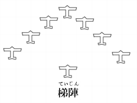

諸君、僕はわが海軍の軍機を
それは今、建造中の巡洋艦『
この四隻は同じ型の姉妹艦で、海軍省の発表によると、
この数字を見ただけでも、『最上』級が立派な世界一流の軽巡洋艦であることがわかる。現に米国海軍あたりではわが艦政本部が非公式に発表した『最上』の設計図を見て、舌をまいて驚いているのだ。
設計者は世界造船学界の権威、海軍技術研究所の第一部長、
武田博士は工学博士でしかも造船大佐だ。
英国ケンブリッジ大学のパークス博士は、
「今、世界の十大学者の
と言った。
前軍令部長の加藤大将も、
「東郷元帥と武田博士は、わが海軍の生んだ二大国宝である。」
と折紙をつけている。
諸君、その武田博士が苦心
ところが『最上』級には、もっともっと発表されない秘密があるのだ。
第一の秘密は鋼鉄である。
『最上』に使ってある鉄は、ただの鋼鉄ではない。
今まで世界で一番強い鋼鉄は、有名なドイツのクルップ兵器会社でこしらえるニッケル・クローム鋼だった。
しかしわが『最上』の鉄は、クルップの鋼鉄よりずっとずっと強いのだ。その鉄の名は『本多鋼鉄』――言わずと知れた前東北帝大金属材料研究所長本多光太郎博士の製品である。
今、仙台の東北帝大は、憲兵が厳重に警戒している。金属研究所の加熱炉の中では鋼鉄の塊が千六百度の猛火で焼かれているのだ。
焼いて焼いて焼きつくした鋼鉄に、ある秘密の工夫を加えて出来上る『本多鋼鉄』は、クルップ鋼鉄の約三倍の強さを持っている。
だから、この新しい鋼鉄で出来た『最上』の
『最上』の
ああ戦艦よりも強い軽巡洋艦！
――こんな怪物が今や、
これが、出来上ったら、太平洋の作戦はガラリと変ってしまう。
米国の大巡洋艦『シカゴ』の姉妹艦十五隻は、『太平洋の無敵艦隊』と自称して威張っている。なるほど噸数は一万噸、大砲は二十糎砲だからすごいには違いないが、憐れむべし、防禦力が
前軍令部長のプラット大将さえ、
「わが大巡洋艦はブリキ
と白状しているのだ。
諸君、かれ
設計は武田博士、鋼鉄は本多博士、この世界的二大学者の
しかし、鋼鉄よりもっと驚くべき第二の秘密は
『最上』のデーゼル
『最上』はこの優秀な機関を据えつけたために、その行動力は実に七万五千
米国の大巡洋艦は一時間十五ノットの速力で、一万五千浬しか航海出来ない。しかも三十三ノットの全速力で走ると、たった二千五百浬で、もう油が切れてしまうのだ。
およそ巡洋艦の機関ほど、重油を
それほど重油は早くなくなるものである。いわば今の軍艦は、息が切れやすいのだ。
ところが、わが『最上』『吉野』は違う。
武田式デーゼル機関は二千五百噸の重油で、七万五千浬走ることが出来る。しかも一時間の速力は二十ノットだ。
全速力の行進をつづけても、二万五千浬は大丈夫である。
なお断っておくが、『最上』の全速力は三十三ノットと公表されているけれど、実は四十五ノット出る。
――ああこれこそ真に『太平洋無敵の軽騎兵』と称すべきものではないか。
米国海軍には一隻として『最上』を追跡出来る軍艦がないのだ。又、一隻として『最上』に追撃された時に、逃げのびることの出来る軍艦もないのだ。
このほか、『最上』には東京帝大の青木博士が造った世界一の光学兵器があり、又、長岡半太郎博士のこしらえた恐しい新兵器も備えてあるが、今は一々説明していられない。
とにかく日本の科学の結晶が、この四隻の軽巡洋艦である。そして山本海軍大臣は、極秘の命令を出して、いやが上にも、「早く早く。」と、工事を急がしているのだ！
○
ここで一言しておかねばならぬのは、武田博士の愛弟
彼は昭和八年の二学期から学校を休学して、博士と一しょに目黒の海軍技術研究所へ通っているのだ。
清君の腕前は、造船技手として、
昭和八年十二月三十一日、
「おい、清、『最上』がすんだら、こんどは航空母艦『
武田博士は、机の上の設計図を
「そうですね。『富士』はすごいからなァ。こいつが出来たらきっと世界中の海軍が
清君も
「『最上』なんかこいつにくらべたら、大したものじゃない。」
博士は
ああ潜水艦『富士』――それはどんなすばらしい戦闘力を持っているのだろうか。
「しかし、こいつをこしらえるのには一年かかる。その間に米国のフーラー博士が、
博士の顔には、くらい影がさした。
――米国には武田博士の好敵手フーラー博士がいる。昭和四年に東京でひらかれた世界工業大会で、二人は汽船の
その時にフーラー博士は口惜しそうな顔をして、
「僕は今日かぎり造船学の研究はやめる。そして明日から航空学の研究をはじめるのだ。」
と宣言した。そして、
「汽船や軍艦はもう時代
と憎まれ口をたたいたのである。
そのフーラー博士が、最近、一通の手紙と、ものすごい爆撃機の設計図を送って来たのだ。
手紙には乱暴な走りがきでこんなことが書いてあった。
「おい武田君、君は相かわらずのろくさい巡洋艦の設計をやっているのかい？ よせ、よせ、君のこしらえた巡洋艦なんか、僕の爆撃機にかかったら三分間でお陀仏 だよ。
この設計図は僕が二年前に書いたものだ。もうこんなものは僕にとっては秘密でも何でもない反古紙 同然だがね。君の国へ持って行ったら五百万円ぐらいには売れるだろう。どうだ、この僕の設計図を日本海軍へ売ってみないか。そしたら君は大金持だ。武田君、僕は君が痩我慢 を捨てて、僕の軍門に下ることを祈る。僕が生きているかぎり、日本はとてもわが米国と戦争なんか出来っこないよ。」
この設計図は僕が二年前に書いたものだ。もうこんなものは僕にとっては秘密でも何でもない
しかし、自慢するだけあって、フーラー博士の設計図は、実に恐しいものだった。
わが海軍航空本部の一流の技師が、くわしく調べてみて、みなゾッとして身ぶるいしたのだ。
「もし、こんな
と、豪傑の名の高い横須賀
だが、武田博士は負けなかった。博士は返事を書いた。
「親愛なるフーラー博士よ。お手紙と設計図はたしかに拝見した。さすがにエジソン第二世とよばれるだけあって、君の腕前にはわが海軍もちょっと感心していたよ。しかし、あんなもので僕をおどそうとしたって、それは駄目だ。僕の研究はもっと深いところへ進んでいるよ。ああ君がもしも僕の潜水艦『富士』の戦闘力を知ったらどうするだろうか。――フーラー博士よ。僕は米国に忠告する。もしも君等が日本に挑戦したら、それこそひどい目にあうぞ。」と。
しかし潜水艦『富士』は、まだやっと設計が出来たばかりだ。横須賀工廠で造るのか、呉工廠でこしらえるのか、造る工場さえまだ決っていないのである。
ところがフーラー博士の黒鷲爆撃機はもう出来ている。アリゾナ高原の秘密工場では第一号機の試験を終って、第二号機、第三号機と続々組立をはじめている。
参謀総長のアーサー大将は、
「黒鷲第十号機が出来上ったら、わが空軍は三日間で、東京を焼野原にすることが出来るのだ。」
と暴言をはいた。
なんという失敬な言葉だろう！ しかし、アーサー大将の自慢はけっして
それを考えると、わが参謀本部や軍令部の将校たちも、黙って歯をくいしばるよりほか仕方がないのだった。
諸君よ。参謀将校たちを意気地なしと思ってはいけない。わが軍事探偵が、苦心に苦心をかさねて探り出した黒鷲爆撃機の戦闘力は、実に身ぶるいのするほど恐しいものだったのだ。
最大速力一時間四百五十
こんな怪物にかかっては、『海の大要塞』とよばれる『陸奥』『長門』だって戦うことはおろか、逃げることだって出来ないだろう。
「どうだ、黄色い顔をした
米国政府はこの恐しい武器が出来上ると、急に威張り出した。そして支那をけしかけて日本と喧嘩させるようにした。
南京にいるわが駆逐艦は名も勇ましい『
「張学良の奴、生意気な
少佐は
「艦長！ 残念ですなァ。」
若い少尉や中尉たちは高角砲の砲身をたたいて口惜しがった。
「畜生！ 今に見ろよ。」
水兵たちも眼の色を変えて残念がるのだった。
だがとうとう最後の日が来た。
昭和○年一月の
張学良は五人の米人将校をひきつれて南京の飛行場を飛びだした。赤い戦闘機六機は、揚子江の上へ来ると、ぐっと機首を下へ向けた。
下には泥色の水に『旗風』が浮かんでいる。軍艦旗が花のように見える。
アッ、張学良がサッと右手を上げて合図をした！ 爆弾投下だッ。
小さい二十
卑怯千万な不意討だ！
橘少佐は
だが敵はカーチス戦闘機だけではない。
十五隻の敵艦が『旗風』をとりかこんで、滅茶苦茶に砲撃をはじめたのだ。その中には米国の砲艦『グアム』もいるではないか！
「よし、あいつを狙え！」
少佐は『グアム』を睨んで
『旗風』は燃えながらも四門の十二糎砲で奮戦した。練りに練った日本砲術の
血戦一時間で敵の損害は米艦『グアム』を筆頭に支那軍艦『
橘少佐は最後まで、
「なァに、支那の大砲なんかあたるものか。」
と、せせら笑っていた。そして砲弾がなくなった時、「もはやこれまで！」と自ら火薬庫に火をつけて爆沈した。
揚子江上にサッと火の柱が立ちのぼったと思うと、『旗風』は泥水のなかに姿を消してしまったのだ。――いかにも日本の駆逐艦らしい、いさぎよい最期ではないか。
さすがに支那人もこの鬼神のような勇戦奮闘には深く心を打たれたのか、
ああ揚子江の水は血にそまって
諸君。――こうして太平洋戦争の火ぶたは切られたのだ。
○
『旗風』の最期を聞いて、
そして
わが陸戦隊は米国の海兵隊を襲撃して、三百人の敵兵を捕虜にした。
台湾海峡では巡洋艦『
『旗風』の
しかし、敵もさるものだ。その夜のうちにフィリピンのマルチン爆撃機は、
又、敵潜水艦『Ｓ二十九号』は上海の沖で、日本郵船会社の豪華船『
――ああ太平洋上戦雲
この形勢を見た米国大使は、わが外務大臣に最後
と、おどかした。
米国大使は真赤になって怒った。
「よしッ、これで国交断絶だッ。」
――『旗風』が沈んでから二日目には、もう宣戦が布告された。
宮城の中に大本営が置かれ、戒厳令が下った。
聯合艦隊司令長官
末山大将は吉田松陰や山県有朋を生んだ
大将は森厳な伊勢の神域にうずくまって、沈黙の祈をささげた。
「海行かば
――これが大将の祈だった。伊勢湾は日本人にとって、『神の海』である。しかも戦略的に見ると、太平洋作戦の根拠地として、東京湾に次いで重大なところなのだ。横須賀、呉、佐世保三軍港のどれからもそんなに遠くなく、しかも艦隊の行動をかくすのには持って来いだ。秘密根拠地として、これ以上の湾はちょっとないだろう。
末山大将がこの『神の海』を第一期の根拠地にしたのは、さすがに『戦術の神様』だけのことはある。
『長門』につづいて百五十数隻の軍艦、駆逐艦、潜水艦、特務艦が、三つの軍港から、伊勢湾をめがけて急行した。
諸君、戦時の艦隊編制は軍機中の軍機、秘密中の秘密である。しかし、伊勢湾に集合した
戦艦『
大巡洋艦も二十糎砲をぐっと天の一角に突き立てて、そのたくましいことは、海の猛獣のようだ。『
沖の方にかかっているずんべらぼうの怪物は航空母艦『
巡洋艦に劣らぬ戦闘力を持つ『
潜水戦隊は鯨の大群だ。『
ああ、百五十隻の艨艟！
実にたのもしい。実に力強い！
しかもどうしたのであろうか、武田博士が心血をそそいだ『最上』がいない。『三隈』がいない。『吉野』『千種』の姿も見えない！
かれ等はもう、すっかり
僕はいよいよ『昭和遊撃隊』の秘密を、語らねばならなくなって来た。
ここは八丈島の南、小笠原島の北にあたる
絶壁には千年の
島のまわりは、ものすごい海流だ。渦巻だ。まっ黒な潮が、ゴオーッゴオーッと音をたてて矢のように流れている。
もしも小さな発動機船なんかが、誤ってこの海流に乗ったらどうなるだろうか。たちまちキリッキリッと悲鳴のような音を立てて、船体がバラバラになり、船も人も、魔の渦巻の中に
だから小笠原や八丈島の漁師たちは昔から『鬼の島』とよんで、この島に近よらない。
ことに恐しいのは島の北にある水門だ。そこは百五十メートルもある高い高い絶壁が真ッ二つに割れて、ぽっかりと口をあけているのだ。遠くから見ると、絶壁の内側は大きな湾になっているらしい。――北の水門は湾の入口なのだ。
ああなんという壮絶な、ものすごい光景だろう

見よ。荒れに荒れた海流が二十
音に聞えた昔の海賊村上流の水軍でも、又、山のような
速力三十ノット以上の駆逐艦なら、勢いにまかせて突破出来るかも知れないが、それにしても水門の幅があまり狭い。恐しい巨岩怪岩が、波の間から黒々と頭をのぞかしているのを見ると、どんな豪胆な駆逐艦長だって、思わず身ぶるいして逃げ出すにちがいないのだ。
――だから碧海島は永遠の秘密境だ。無人島だ。
○
しかし諸君、昭和○年二月［＃「二月」は底本では「二年」］一日の夜、一隻の怪艦が、この島の北の海上へぽっかりと姿をあらわした。そして、大胆不敵にも艦首を魔の水門に向けたではないか。
寒い空には烈風が悲鳴をあげている。氷のように冴え切った月が、つめたい光を荒波の上へなげかけている。
怪艦の形は遠くから見ると大巡洋艦『高雄』に似ているが、近づいて見ると非常に違っていることが分る。
『高雄』のようにいかめしく角張っていないのだ。艦全体がまるみを帯びている。新しい飛行機によくある形の、あの流線型だ。
そして月光にもまさしく見えるものは、三聯装十五門の十五糎砲ではないか。
アッ『最上』だッ。聯合艦隊の編制に洩れた『最上』が、いつのまにか、この魔の島に姿をあらわしたのだ。
ああなんという巧妙な操作（軍艦の動かし方）だろう！
わが巡洋艦『最上』は、激流にさしかかると、ぐっとばかりに四十五度の転換をやって、左を向くと、水煙につつまれながら水門に突っこんで行った。そして、たちまちその姿は水門のかなたへ、かくれてしまったのだ。
――後にはただ絶壁が月の光をうけて、黒々とそびえ立っているばかりだ。
太平洋の荒波が、岩にくだけて
鬼の島、――碧海島の水門へ、水煙を立てて突っこんで行った巡洋艦『最上』。
その姿は百五十
水門はまるで長い谷間のようだ。両岸の
その谷底の闇を、わが『最上』は、もの
小さい影が二つ。
一つの影は、夜目にも美しい少女である。赤い毛糸の帽子をかむって、
「ね、あたし怖いわ。この水門、どこまでつづいているんでしょう。」
つぶらな黒曜石のような眼で、奥の方をすかして見たが、黒々とした崖が、艦の行手をさえぎるように
「
 代
代――もう一つの小さい影がささやいた。一等兵曹の服装をしているが、紅顔の美少年だ。明るい頬の色、澄み切った眼のかがやき。どこかで見たような顔だ。
――おや清君じゃないか。そうだ、たしかに『最上』の設計者武田博士の弟、清少年にちがいない。
彼は今や、怪巡洋艦『最上』の舳に仁王立ちになって、じっと腕ぐみしているのである。
水門の闇はいよいよくらく、上を見ると、高い高い絶壁の間、もうもうと立ちこめた、霧の中に、ぼんやり月が光っている。
『最上』は、ざぶりざぶりと水煙を立てて、いよいよ奥へ進んで行く。
水門の
キリキリッ……
と、しわるような音を立てるのだった。恐しい渦巻の力だ。
「ずいぶん深そうだわね。」
代さんは、清少年の肩にすがって、「十五
――清君は、まるで本物の兵曹のような口ぶりだ。
しかし、彼は間違っている。本当は、この水門の深さは五十米以上だ。そして、その底には、恐しい
○
水門の入口へ入ってから三十分もたったころ、いよいよ流は狭くなって、『最上』は絶壁に衝突しそうになるので、後退したり、前進したり、なかなか進まない。航海長小川中佐は大変な苦心だ。
舳には本物の兵曹長が出て来て、じっと眼を光らせて前方をみつめている。探照灯があかあかと絶壁の
流は奥へ入るほど、ゆるくなって、水がよどんで来たが、谷はますます狭くなって、やっと『最上』が岩とすれすれに通り抜けることが出来るだけの幅しかない。
ちょっと
「兵曹長さん。まるで揚子江の上流を
さすがの清君も、少し気味が悪くなったのか、心配そうに
だが見張番の谷兵曹長は真剣だ。鷲のような眼を
今、一瞬間でも油断したら、恐しいことになるのだ。見よ。谷兵曹長の首すじには、たらたらとあぶら汗が流れているではないか。
いまや『最上』は、岩とたたかい、流とたたかい、死力をつくして、日本海軍の航海術の手並のほどを見せているのだ。
水煙は
その時だッ。突然谷の向うの方から、
ごオーッ、ごオーッ……ごオーッ
と、すさまじい地鳴が聞えて来た。そして、高い絶壁の上に、ボオーッと、赤い怪光が見えたのだ。
なんだろう？
清少年と
代この人外境に火の光が見えるッ。――鬼の火か？ 又は蛮人の
「怪しいわね。――」
代さんは、蒼くなって、ぶるぶる「あたし達、どうなるんでしょう。どこへ連れて行かれるんでしょう。」
「ぼくも知らないよ。兄さんにきいたって、黙ってろッ、て叱られるんだからね。――」
清君も、すこし色蒼ざめている。
○
二人の少年少女の疑いを乗せたまま『最上』は、なおもぐんぐん奥へ入って行った。
真夜中の二時ごろ、艦は、
「とうとう狼岩まで来たね。」
木下大佐が、汗をふきながら小川中佐の肩をたたく。さすがは名航海長小川中佐。三十浬の水門を、よくも乗り切ったものだ。
「御苦労でしたね。僕は
武田博士も汗を拭いている。
「それにしても、君の
代さんはえらいね。女のくせに、こんなところへやって来るなんて、凄いぞ。」小川中佐は、
代さんを愛しているのだ。「うん、あいつは、とても冒険が好きなんだよ。まだ十六だがね。字もうまいから僕の秘書にしてあるんだ。」
武田博士も姪が可愛くって仕方がないのである。
「あいつ等二人には、この島のことは、まだ何も聞かしていないんだ。どれ、これから秘密を
武田大佐は立ち上った。
狼岩の向うには、闇の中に、入江らしい海が、黒々とひろがっている。
ああ鬼の島、怪しい入江、そこにはどんな秘密がかくされているのだろうか。
その夜『最上』は、狼岩のかげで碇泊した。清少年と
代さんは、ハンモックの中で眠られぬ一夜をすごしたが、明くれば二月二日、今日こそは、いよいよ『鬼の島』碧海島の秘密がわかるのだ！兵曹姿の清少年と、紺色の
代さんは、武田博士に連れられて、まだうす暗いうちにひろい入江、――碧海湾には、霧がもうもうと立ちこめて、南国の朝風がひやひやと頬を撫でる。
『最上』の
いよいよ上陸だ。
「艦長、行って参ります。」
「小川の
清君と
代さんは、身軽に艦長は、谷兵曹長だ。
代さんは窓から顔を出して、霧の中をすかして前の方を見た。――何も見えない。
後の方を見ると、狼岩と『最上』の姿が、ぼんやりと鼠色にうすれて行く。
気味の悪いくらいの静かさだ。
「兄さん、ここは無人島ですか？」
清君は、たまりかねて大佐にたずねた。
「いや、ちがう。」
大佐は、首をふって、重々しい
「実は、昨日の晩、聞かして上げようと思ったんだがね。二人とも、ハンモックに揺られて、よく寝ていたものだから、やめにしたんだ。――清、今こそ打ち明けてやろう。よく聞け、この碧海島は、わが海軍の秘密根拠地だぞッ。」
「えッ？ 秘密根拠地？」
「そうだ。帝国海軍の精鋭をよりすぐった秘密艦隊、昭和遊撃隊の根拠地だッ。」
「えッ、秘密艦隊？」
――二人は、奇々怪々な大佐の言葉に、驚きの眼を見あわした。
○
小笠原の父島に、
まして名将末山大将がひきいている聯合艦隊のほかに、秘密に編成された艦隊がいるなんて、もしもこれを米国艦隊司令長官ヤーネル大将に聞かしてやったら、どんな顔をするだろうか。
思えば痛快だ。さすがに日本海軍だッ。じつに思いもかけぬことをやっているではないか。
ああ絶壁にかこまれた孤島の軍港！
三十浬の水門の奥にひそむ秘密艦隊！
これが一たび動き出したら、太平洋上、どんな風雲が捲きおこるだろうか？ 思っただけでも熱い熱い冒険の血が、胸の底から湧きあがって来るではないか。――しかも、自分らは、今、その秘密の碧海湾深く入って来ているのだ。清少年は、思わずぶるぶるッと武者ぶるいをした。
両頬に血潮がさして、花よりも
しかし、それにしても、秘密艦隊はどこにいるのだ？ 秘密の砲台は、どこにかくされているのだ？
絶壁と海のほかには、なにも見えないではないか？
「ね、叔父さん、その昭和遊撃隊っていう艦隊はどこにいるの？ あたし、いくら探したって見えやしないわ。」
代さんは、眼をかがやかして、霧の奥の方を、にらみつづけている。「まて、まて、いくら
「まア、人食鮫がいるの？」
代さんは、あわてて首をちぢめた。「
清君は、
代さんをあざけりながら、これ見よがしに、ぐっと手をのばして、水の「ばかッ。あぶないぞッ。」
大佐の一喝が終らぬうちに、底の方から青黒い影が、矢のように近づいて来た。
「あッ、鮫だッ。」
清少年は、サッと手を引いた。間一髪！ 三米以上の大鮫が、すごい
――鮫の襲撃がもう一秒はやかったら、清君は右の手を
恐しい海だ！――さすがの彼も蒼くなった。
清少年は、兄大佐に散々叱られた。そして、彼が叱られている間に、碧海湾にたちこめた深い深い朝霧は、だんだん消えて行ったのである。
霧は百五十米の絶壁を、上へ上へと、白い渦をまいて、うすれ行くのだ。
見よ、なんという壮大な眺めだろう。
黒々と湾をかこんで、数十
代さんはうちつづく大絶壁の連峰を見上げながら、去年の夏「叔父さん、この絶壁の形、なんだかアルプスに似ているわね。――」
かの女は、赤い帽子をかしげて、大佐の顔を見上げた。武田大佐は大きくうなずいて、
「うん、そうだ。だから、海軍でも、あのどっしりしたのを
だが、――今は絶壁の大きさに見とれている時ではない。秘密艦隊はどこにいるのだ？ 昭和遊撃隊はどこにかくれているのだ？
気がせく清少年は、谷兵曹長の腕をつかんで聞いた。
「谷さん、遊撃隊はどこにいるの？」
谷兵曹長は、黙って右手で
「あの蓮華岳の下を、見てごらんなさい。」
見ると、大きな
「行って見ましょう。」
兵曹長はぐいッと舵を右へまわした。内火艇は波紋をかきながら、洞窟に近づいた。
高さ五十米もあろうか。恐ろしいほど大きな洞窟だ。――内火艇は、入口で
「あッ、いたぞッ。」
――見よ。うす闇の洞窟の中に、一隻の怪艦が舳をこちらへむけて、ひそんでいるではないか。しかも、艦首にかがやく黄金の光は、まさしく光栄ある菊の御紋章だ。
○
諸君、蓮華岳の洞窟にひそむ怪艦は、『最上』の姉妹艦『三隈』である。洞窟の奥には、糧食庫や、弾薬庫があり、岩をくり抜いた重油タンクの中には、どろどろした赤黒い重油が、一万
『三隈』は二千五百噸の重油を
「怖ろしい根拠地だなア。」
「凄いわね。――」
清少年と
代さんは、胸がわくわくして来たのである。大きい
燕岳には『千種』がかくれていた。穂高岳には『吉野』が入っていた。
ほかに、小さい洞窟が三つあったが、その中は暗くてなにも見えなかった。――
最後に槍岳の
「これが『最上』の洞窟ですよ。『最上』は昭和遊撃隊の旗艦です。」
「ふーむ。」
清少年は、腕を組んでうなった。
考えれば考えるほど恐ろしい島だ。この洞窟の中の秘密根拠地へかくれたら、米国のフーラー博士の『黒鷲爆撃機』が、どんなに大編隊群をつくって攻めて来ても、ビクともしないだろう。
千
しかし、諸君よ。碧海島の秘密は、まだまだ奥が知れないのである。清少年らを乗せた内火艇は、槍岳の洞窟から、もっともっと奥へ入って行くのだ。
「こんどはどこへ行くの？」
「富士洞窟ですよ。一番奥にあるんです。」
谷兵曹長は、又、舵を左へ変えた。
富士洞窟――それは果して、どんな所だろうか
 代さんは、――どこまで行っても果しのない神秘な世界に引きずりこまれるようで、なんだか怖くなった。
代さんは、――どこまで行っても果しのない神秘な世界に引きずりこまれるようで、なんだか怖くなった。ふりかえって見ると、碧海湾はエメラルド色の鏡のようだ。
代さんは、しばらくうっとりと、その美しい色に見とれていた。――だが、なぜか、かの女の顔色は、急に、見る見る真青になったのである。
「あれッ――、恐しいものが――。」
絹を裂くような悲鳴が、少女の
――かの女をおびえさせたものは何だろう？
さっきまで鏡のようだった碧海湾の水は、にわかにざわざわとざわめいて、恐ろしい渦巻がもり上って来たのだ！
碧海湾に波騒ぎ、どッと、もり上って来た渦巻は、みるみる「ごォ――ッ」と音を立てて真二つに割れた。
そして、鼠色の大怪物が、
「あッ、潜水艦だッ！」
清少年は思わず叫び声を上げた。
「まあ、あたし胸がどきどきするわ。」
代さんが、美しい眉をひそめた時、潜水艦は「どうだ、清。驚いたか。」
武田博士は、大きなマドロス・パイプをくわえて、うまそうに
「ええ、僕びっくりしましたよ。……兄さん、あれ、見なれない潜水艦ですねえ。」
「なあに、あれはお前もよく知っている、
武田博士は大きな手を伸ばして、上甲板の巨砲を指さした。
「あッ、あれは二十糎砲ですかッ。」
清君は又びっくりして大声を出した。
諸君、彼が驚くのもむりはない。二十糎の巨砲を積んだ大潜水艦！ これなら巡洋艦にも負けないぞ。すばらしいではないかッ。
世界にそんな怪物のような強い潜水艦は、フランス海軍の『サルコフ』号が一隻あるきりだと思っていたのに、――思いもかけぬ、この南海の一孤島に、紅い朝日の軍艦旗をひるがえして、ぴかぴか光る長い砲身を、ぐっと突き出した潜水艦が、ものすごくもたのもしい勇姿をあらわしたのだ。
「兄さん、これじゃサルコフ号に負けませんねえ。」
清君は、泣き出したいくらいうれしいのである。武田博士は大きくうなずいて、
「負けるものか。後甲板を見ろ、倉庫のようなものがあるだろう。あの中には
――ああ、この精鋭で、太平洋を暴れまわったら、どんなに痛快だろう。清少年は胸がぞくぞくして来た。
その時、谷兵曹長が口を出した。
「清君。武装が変ったから、名前も変って、この
「ずっと昔の戦艦の名前だね。」
そうだ。清君は、よく知っている。日露戦争の時、
「しっかりやれよ。」
清君は内火艇の甲板に立ち上り、しだいに遠くなる『八島』に向って、大声で叫んだ。
『八島』の後から、つづいて姉妹艦の『
代さんも、残念ながら後の二隻の潜水艦は、よく見ることが出来なかった。しかし、これでおぼろ気に、秘密艦隊、昭和遊撃隊の正体が、つかめたわけではないか？
旗艦『最上』以下、世界にほこる軽巡洋艦『三隈』『吉野』『千種』の精鋭。それに名も勇ましい怪物潜水艦『八島』『千代田』『秋津洲』！――この強い強い七隻が昭和遊撃隊なのだ。
こんな強い、速力のはやい遊撃艦隊を編成して、そっと秘密根拠地にかくして置き、敵の油断を見すまして、科学的な大奇襲をやらせようとする、わが軍令部総長の頭はいいではないか。実に総長上杉大将の考えは『神謀鬼略』である。全海軍の士官や水兵が、「上杉さんは世界一の名将だ。」とあがめるはずだ。
○
「それにしても、この秘密艦隊の司令官はだれだろう？
そして、艦隊が、碧海島の絶壁を後にして、白波を蹴立てて、太平洋上に出動するのはいつだろうか？」
清君が胸をわくわくさせてそんなことを考えている
「さあ、来たぞ。――ここが
うす暗い
大きな岩の壁に電灯がぼォーッと光って、洞窟の中の水は金色にゆらめいている。
奥へ奥へ入って行くと、だんだん入江は狭くなったが、狭くなるのにつれて、富士洞窟の正体は、はっきりとあらわれて来たのだ。
諸君、見よ、こうこうとかがやく電灯に、くまなく照らし出されたのは、大きな造船台ではないか。黒々とそびえ立つクレーンの下に、細長い姿を見せているのは、武田大佐が心血をそそいで造りかけているわが海のライオン、『富士』潜水艦ではないか。
ああ、洞窟の中の秘密工場！
職工たちは、手に手に
入江の
「武田大佐、
と叫んだ。
その声は、がらんとした洞窟の中にこだまして、なんだか悲しそうに、ながくながくひびいた。
「なんだか悲しそうな声ね。――」
代さんは、美しい断髪をゆらゆらと動かして、清君の耳もとでささやいた。「悲しいはずだよ。米国のフーラー博士は、もう
清君は、残念そうに軍帽の
口惜涙を、
代さんに見られたくないのだろう。武田大佐は、波止場へ上ると、もうすぐに青い作業服に着かえて、油にまみれながら、『富士』の建造を指揮するのだった。
祖国日本は今、恐しい荒鷲爆撃機に狙われているのだ。末山大将の聯合艦隊は、二十世紀の無敵艦隊――あの三百隻の
この危機を見て、武田大佐（博士）は、一分間もじっとしていることが出来ないのである。
『富士』さえ出来上れば、日本は断じて負けないのだ。一月でも、一日でも、いや一時間でも十分でも、はやくはやく、この潜水戦艦を進水させなければならない。――だから武田博士の作業ぶりは、
「作業はじめえ――」
大佐の号令一下、機械は「ごォーッごォーッ」と獣が
さっきまで鳴りをしずめて、ひそんでいた洞窟の秘密工場は、にわかに戦場のような
○
しかし、清少年と
代さんは、その晩から、もうこの秘密工場を立ち去らなければならなかった。夕方の六時ごろ、大クレーンの下で働いている二人のところへ、昭和遊撃隊司令官から、にわかに秘密命令が来たのだ。
伝令兵の持って来た赤い
「艦隊命令第十九号。武田清、武田
代。右ノ者ハ至急武田造船大佐ノ指揮下ヲ離レ、槍ヶ岳洞窟内ノ旗艦『最上』ニと、墨くろぐろと、ものものしい文句が書いてある。
「なんでしょう。あたし、心配だわ。」
代さんは、美しい瞳に、「
代、清、司令官の命令だ。はやく行ってごらん。そして、うんと冒険をやって来いよ。」武田大佐は意味あり気にわらって、二人の肩をたたいた。
「なに？ 冒険をやるんですって？ じゃ、行って来ます。」
「あら、冒険って何でしょう？」――
愉快そうに肩をいからした清君と、心配顔の
代さんは、伝令兵の乗って来た小さいボートに乗せられて富士洞窟を出た。伝令兵は太い腕で上手に
「ね、水兵さん、秘密命令って、何の御用なの？」
代さんが声をかけたが、水兵は不愛想にただ一言。「知りませんね。」――
「
代さん、君、怖いのかい？ 怖いんなら、初からこんな島へ来なきゃいいんだ。……今さらびくびくして何だい。これだから僕は女が兵曹姿の清君はなかなか元気がいい。
「まあ、ひどいわ。」
代さんは、やさしい眼をキラリと光らせて清少年をにらんだ。「清さん、おぼえていらっしゃい。あたし、あなたなんかに負けないわ。冒険、大好きよ。」
代さんも負けぬ気で、赤い「はッは、冒険が好きなくせに、どうしてびくびくするんだい。」
清君がからかうと、かの女は負け惜しみにも、
「びくびくなんか、していませんよ。清さんこそ、いまに大砲の音を聞いたら、アッとばかりに亀の子のように首をちぢめるんだわ。」
と逆襲した。
「へらず口だなあ、まあ見ていたまえ。」
清君は、がっしりしたにぎり
「あたしだって、見ていらっしゃい。」
代さんも、つやつやした槍ヶ岳の洞窟には、狼岩を離れて来た『最上』が、大きな
舷梯には、航海長の小川中佐が煙草をふかしながら、迎えに出ていた。
「
代さん、よく来たな。」ボートが舷梯の下へつくと、中佐は大きな手をのばして、
代さんを抱き上げた。つづいて清君は、ひとりで綱を「二人とも、僕についておいで。」
中佐の後から後甲板の
代さん、怖くないか。」「まあ
 いいえ。」代の断髪が房々と横にゆれた。
いいえ。」代の断髪が房々と横にゆれた。「そうか。そりゃえらいぞ。
代さんは、女の子だから、特別に少尉の取扱いをして上げよう。それから清君の方は、今まで通り三等兵曹の取扱いだ。どうだ、それで不平はないかね。」「はい、三等水兵でもかまいません。僕はもう腕が鳴って仕方がないんです。」
清君は黒い大きな瞳をかがやかした。
「よしッ。」大佐は、たのもしそうに、うなずいて、
「君は潜水艦『八島』に乗組むことになっているんだ。
代さんは小川中佐の指図をうけて、この『最上』に残る。それでいいか。」「まあ。」――
代は、ちょっと悲しそうな表情をしたが、――二人が別れ別れに戦うのもまた愉快ではないか。清君は、代の方をふりむいて、「いいですとも。ねえ、
代さん、君は心臓が弱いから潜水艦に乗れないんだよ。」とからかった。
代さんはすねた「まあ、そんなことないわ。わたしの心臓はとても強いのよ。」
「こらこら、変な口喧嘩をするんじゃない。――じゃ、清君は、これからすぐに『八島』の方へ行け。――君たちに酒をすすめるのは悪いことだが、一つ別れの盃をあげよう。小川中佐、君もやり給え。」
木下大佐は、戸棚から
「これは百年ほど前にフランスで出来た古い酒だ。僕の宝ものなんだよ。」
赤い血のような葡萄酒が、たらたらとグラスの盃につがれた。
「僕は大佐で、まだ司令官になる柄でない、しかし、今や命令によって、
木下大佐は、盃を高くさし上げた。
――ああ木下艦長が、遊撃隊の司令官だったのか！ 海軍一の豪傑とよばれる大佐なら、どんな恐しい冒険でも、どんなひどい戦闘でも、きっとやりとげるだろう。――
清君と
代さんは、盃をカチリと打ちあわせて、眼と眼とでうなずきあい、「○
外はおぼろ月夜で、洞窟の中へも、青白い月の光がぼォーッとさしこんでいる。
ああ母の国を離れたこの南海の孤島で、わが少年と少女は、戦の
二月三日の午前三時。まだ島は夜あけ前だ。
昭和遊撃隊四隻の巡洋艦は、はやくも
「狼岩ニ集レ。」
『最上』の無線電信が第一の命令を電波でつたえた。間もなく四つの洞窟から、探照灯がサッと碧海湾の波をてらし、一艦また一艦と狼岩をめがけて動き出して、四時には、もう『最上』を先頭に、『千種』『吉野』『三隈』と、ずらりと一列の単縦陣をつくった。
見よ、あかつきの光にうき出してくる山のような
「前進！ 旗艦ニツヅケ！」
『最上』は無線電信で命令を出しながら、そろそろと狼岩を離れた。
ああ出動だ。木下司令官は、仁王のようにブリッジに立って、ジッと前の方をにらんでいる。
あおげば前檣に高くひるがえる紅い代将旗！
代将旗は、大佐で少将や中将と同じ位の司令官になった人だけが、かかげる名誉の旗だ。この旗をひるがえす大佐は、きっと海軍中でも一番、二番の名将か勇将である。
わが『最上』の木下大佐は、勇将でそして名将だ。
つづく、三艦、三千人の士官、下士官、水兵、――一人として卑怯者は乗っていない。
遊撃巡洋艦隊は、もうもうとしぶきを上げて、水門の谷間へ乗りこんで行く。
旗艦の後甲板から、軍楽隊の奏する『別れの曲』、ロング・ザインのメロデーが、波の音にまじって、ながくながく聞えてくる。
代さんは、檣の櫓に登って、だんだん遠ざかる碧海湾の波をながめながら、なんだか胸がせまって、――波とたたかい、暗礁をさけ、難しい谷間の航海を終って、全速力で北の水門を突破すると、太平洋である。
しかし、荒波がなんだ。波よ、
ああ、昭和遊撃隊は、今や海の猛獣となって、東へ東へまっしぐらに
武田式
代は、頬のちぎれるほど寒い烈風にさらされながら、櫓の上から、いつまでもいつまでも母の国に別を惜しんでいた。はるかに、水平線の上に、白い白い富士山の影が、くっきりと見える。
ああ波にうかぶ、なつかしい霊山
代は、美しい黒髪を寒風になびかせて、心から霊山にいのりをささげた。神も、少女のいのりをあわれと
『最上』らが小笠原島の北を、東へ急いでいるころ、潜水艦『八島』『秋津洲』『千代田』の三隻は、司令青木大佐の命令で、槍ヶ岳洞窟の下を流れる海底の水道をくぐりぬけ、これも東の方、ハワイ群島めがけて進んでいたのだ。
旗艦『八島』に、三等兵曹として乗りこんだわが清少年がなにをしたか、また三隻の潜水艦がハワイの沖で、どんなに勇ましく戦ったか。それは今しばらく、かくしておこう。
それよりも、僕らは、『最上』の行方を見うしなってはならぬのだ。
○
ハワイの真珠軍港から千
あたたかい、平和な南の島だ。
しかし、その椰子の葉がくれに見える水色の大巡洋艦三隻、――ひらひらとひるがえる星の軍艦旗。これぞ米国偵察艦隊の前衛、第三巡洋艦戦隊の『シカゴ』と『ヒューストン』と『オーガスタ』である。
みな一万噸の大艦で、三十糎砲を九門持っている。
――平和な、絵のように美しいこの島は、じつは恐しい米国海軍の、前進根拠地なのだ。
そして昭和遊撃隊は、この根拠地を占領しようとして、やってくるのだ。
二月七日の朝。『最上』を先頭に、わが遊撃隊はミッドウェーの沖合とおくあらわれた。
神風式偵察機が一機、二機カタパルトから発射されると、戦闘旗がするすると檣の上たかくかかげられ、六十門の十五糎砲が、みな、
三万五千米！ 『陸奥』『長門』の四十糎砲でも、まだ射撃できないほど遠い距離だ。それだのに『最上』は、はやくも「射撃ハジメ」の信号旗を上げているではないか。
四人の砲術長の手が、ボタンを押すと、たちまち「キラッキラッ」と白い火がきらめいて、黄いろい煙がむくむくとわき立ち、
「ドドドド……ごォーッ」と雷のような砲声がとどろきわたった。「ヒューンヒューン」――弾は悲鳴をあげて飛んで行く。
代さんは、耳に綿をつめ、防毒面を胸へかけて、櫓の中からじっとこの砲撃を見まもっているのだ。やがて、島の山かげから、黒い黒い煙がもうもうと立ちのぼり、地ひびきのような怪しい爆音が聞えてきた。
「火薬庫に命中したらしいぞ。」
小川中佐は、そっと
代さんの耳もとでささやいた。「こんな島をやっつけるのは、わけはないよ。」
――遊撃隊は三十五ノットの快速力で走りながら、腕におぼえの砲術で、胸がすくようなねらい
島はみるみる火の手につつまれて行く。
しかし、敵もさる者、カーチス戦闘機が十八機、死にものぐるいの逆襲をやり、わが神風式偵察機と、入りみだれて機関銃を
ものすごい空の血戦だ。みるみる一機、二機と海の上へ落ちて行く。銀色の翼がめらめらともえあがり、焼け落ちると、黒い煙を残して、波のなかへ消えてしまう。
敵も落ち、味方も落ちる。
わずか二十分の射ちあいで、敵の十八機と、わが十機が、荒波の底の、墓場へ沈んでしまったのだ。
残った八機の神風偵察機は、戦死した勇士をとむらうように、悲しげなエンジンの音をひびかせて、ひくくひくく波の上を飛んだ。
遊撃隊の砲撃は、いよいよはげしくなり、島かげから突進してくる敵艦『シカゴ』を、わが『最上』は、ただの一撃で沈めてしまった。
『シカゴ』はパッと火を吹いて、たった三分間で、かき消すように波間に見えなくなった。
その後で、「
大砲の音におどろいた鴎が、空で狂っている。卑怯な敵艦『オーガスタ』と『ヒューストン』は、入江の中にかくれてしまって、出て来ない。
「いよいよ占領だッ。」
木下大佐は、荒波をながめて、にっこりと胸をたたいた。
「米国海軍は、とても弱虫なのねえ。」
代さんも戦闘旗の色はいよいよ
○
だが、『最上』が
代さんの胸は、にわかにどきどきと騒がしくなった。なんだか、恐しいことが、悪い悪いことが、近づいて来るような気がするのだ。無線電信のアンテナが、パチパチと青白い火花をちらしている。幽霊の火のようだ。悪い前兆ではないだろうか。
東の空には、まっ黒な雲がひろがって、波がだんだん荒くなってくる！
「ねえ、小川中佐。あたし、なんだか、こわくなってきたわ。」
代さんが、小川中佐の太い腕にすがりついた時、司令官の木下大佐も、無線電信の報告用紙をにぎって、サッと顔色を変えたのである。海軍一の豪傑が、なににおびえたのか？
「小川中佐、
大声でさけぶ大佐の顔は、血の気がなくて、青じろい。
諸君、大佐をおびえさせた報告用紙には、どんな不吉なことが書いてあるのだろう。のぞいて見ようではないか。
「『最上』艦長ニ告グ。武田大佐ガイルカ。ワレハフーラー博士ナリ。荒鷲爆撃機第一号ニ乗リ、今ヤハワイ群島ノ東ニアリ。コレカラ君ラ日本艦隊ヲ爆撃ニ行クノダ。君ヲ殺スノハ惜シイガ、シカタガナイ。『最上』ヲ沈メタラ、上カラ
あッ、フーラー博士のはたし状だ。荒鷲爆撃機が強いか、『最上』が強いか。
フーラー博士は、きっと武田大佐が、『最上』に乗っていると、思ったのだろう。だから
恐しい荒鷲爆撃機！ 『最上』も強いが、かなしいかな、荒鷲にはかなわないと思う。
木下大佐が青くなったのは、武田大佐から聞いた『荒鷲』の恐しさを考え、「ああ昭和遊撃隊もここで全滅するのじゃないか。」と、心配したからである。
ああ、もしも昭和遊撃隊がここで負けたら、日本海軍はどうなるのだろう？ そして、美しいわが
代さんも、清少年と別れたまま太平洋のもくずと消えてしまうのだろうか？○
「あッ、来たわ。」
代は、黒雲の上を、矢のように走って来る怪しい影を見た！とうとう、恐しい悪魔、フーラー博士が近づいて来たのだ。
黒雲の上を、矢のように走る怪しい影、――荒鷲爆撃機は見る見る近づいて来た。
代さんはふるえる手に望遠鏡をにぎって、その影を追った。どす黒い雲の見るからに強そうだ。遊撃隊司令官木下大佐も、小川中佐も、みんな心配な顔をしている。
「仕方がない。隊形をばらばらにしよう。」
木下司令官の命令で、信号旗があがって、わが四隻の巡洋艦はちりぢりに離れてしまった。縦陣（⊂⊂⊂⊂）になっていても横陣（∩∩∩∩）になっていても、一しょに狙われるから危い。旗艦『最上』は左へ舵をかえた。二番艦の『千種』と三番艦『吉野』は右へ別れた。一番
さすがの昭和遊撃隊も、今やちりぢりばらばらに陣をくずしてしまったのだ。
『最上』の武田式
荒れくるう波が、ごおーっと音をたてて、八千五百
四門の
黒雲はいよいよひろがって、あたりはだんだん暗くなる。波の音と風の声が、悲しい悲しい
代さんは恐しい敵機は、四千
「ああ、
代さんは望遠鏡を離して、そっとハンカチで顔をふき、悲しいため息をついた時、ひゅーっ
と一陣のはげしい風が吹いた。そして見よ、さっきまで檣の上に
「まあ。」
代さんは色青ざめて、それが何かしら波はいよいよ荒くなって来る。
諸君。僕は『最上』と『荒鷲』との戦闘をお知らせする前に、勇敢なわが神風偵察隊の最期を見とどけなければならない。
敵の戦闘機十八機を射ちおとして、空中戦に勝ったわが神風偵察隊の残った八機は、母ともたのむ遊撃隊に見すてられて、巣のなくなった鳥と同じだ。
十六人の勇士は、上空から遊撃隊がちりぢりにわかれたのを見て、
「もう駄目だ。」
と思った。ああ東からは恐しい荒鷲爆撃機が攻めてくる。たのみと思う母艦の『最上』らは逃げてしまう。
「えい、くそッ。こうなったからには、日本空軍の男らしい最期を見せてやれ。」
隊長の片桐少佐は、覚悟をきめて、白い手袋をはめた左の手を高く上げて、はげしく横にふった。戦闘準備の合図だ。
「よし来た。」

（
はげしい風にあおられて、小さい神風式はまるで木の葉のように吹きとばされそうだ。めざす荒鷲爆撃機は、黒雲の中にかくれている。
「あの雲だ。」
片桐機を先頭にわが八機は、ドドドドドドドドドッと機関銃を射ちながら、雲の中へつっこんで行った。
もう何も見えない。機関銃の音だけが聞えて来る。
……この決死の戦闘を『最上』から見ていると、やがて雲の中にぴかりと赤い火が光った。
「あら、火が見えたわ。」
代さんが、小川中佐に言葉をかけた時、赤い焔がくるくると舞いながら波の向うへ落ちて行った。神風隊の一機がやられたのだ。つづいて二機、三機、火のかたまりになって落ちるのが見える。ああ味方は負けているのだ。
「ねえ、小川中佐、あたし、どうしたらいいでしょう？」
代さんは、胸がつまって、悲しくって、これ以上、見ていることが出来ない。「片桐少佐が
小川中佐も、どうすることも出来ないのである。中佐の眼に涙がいっぱいたまっている。
○
代さんが眼をつぶっているうちに、わが神風隊は八機の荒鷲爆撃機は翼の下に機関砲を据えつけている。この機関砲はドイツのメルカツ博士が考え出したもので、空中戦で
『荒鷲』は重い重い爆撃機のくせに、上へ
三糎の砲弾が「があん」と命中すると、弱い偵察機は一たまりもない。すぐに焼けてしまうのだ。
「はは、可哀そうな、日本の飛行将校よ。太平洋の
荒鷲爆撃機の中ではフーラー博士が、悪魔のように笑っている。白い不吉な水仙の花束が、ひらひらとわが偵察機の後をしたって落ちて行く。
「憎むべき悪魔よ。」
しまいまで残ったただ一機、片桐少佐は、最後の手段だ、『荒鷲』と衝突して、敵と一しょに墜落しようと決心した。そして猛烈ないきおいで突進した。
しかし、あわれ少佐は失敗したのだ。『荒鷲』はひらりと体をかわして、片桐機が行きすぎるところを、後から機関砲で射った。ああ、片桐少佐が火の中でもがいている。
「命中だ。これで敵機は全滅したぞ。――さあ、これから『最上』をやっつけるんだ。」
フーラー博士は、照準望遠鏡を雲の下へ向け、波にもまれている、わが『最上』の姿を、探しはじめた。
荒鷲第一号機は、だんだん下へ降りて来る。そして、魚をねらう
ごおーっと一陣の風をまき起しながら、二千米、一千米、わが高角砲の
「まあ、気味がわるいわ。……」
代さんがふるえるのも無理はない。黒色の翼はこの怪物に追いかけられる『最上』は一所懸命だ。四十五ノットの全速力で、矢のように走るのである。
しかし、一分、二分。ついに『荒鷲』は頭の上へやって来た。ああ精鋭『最上』も、とうとうフーラー博士の餌食になるのだろうか？
その時、無線電信のアンテナが、又ぱちぱちと青白い火花を散らした。『荒鷲』からの通信だ。
「『最上』ヨ、
この無電報告を見て、木下大佐と小川中佐は、じいっと顔を見あわせ、たがいに「うん」とうなずきあった。
代さんは心配そうに、美しい「木下の叔父さま。どうして高角砲が命中しないの？」
「敵をおびきよせるためさ。」
「おびきよせてどうするの？」
「君は黙って見ていらっしゃい。」
木下大佐は、怖い顔をして、
「第十三号発射用意っ。」
と、どなった。
「第十三号？ 変な名だわ。何かしら？」
代さんは、又叱られやしないかとびくびくしながら、大佐の背中を指先でそっとつついた。「叔父さま。十三は不吉な数字じゃなくって？」
「そうさ。フーラー博士にとっては不吉な数字だよ。」
いよいよ変な大佐の言葉だ。
荒鷲爆撃機の方でも、『最上』の高角砲の射撃が、あまり
七百米ぐらいの上空で、ぐるぐる輪をかきながら、なかなか爆弾を落そうとしない。
風は荒れ、波の狂う太平洋の一角で、今や二つの怪物が、気味のわるいにらみあいだ。
諸君。ここでわが『最上』がどんな、武器と
武器は大砲のほかに、長岡式の化学兵器があるはずだ。青木式の電気兵器があるはずだ。『第十三号』は、その電気兵器である。
諸君は東京帝国大学で研究している『青木光線』について、何か聞かれたことがないだろうか。太陽光線の紫外線に強い電流を通じると、それにふれるものは真黒こげに焼けてしまう。『第十三号』の正体は、その『青木光線』だ。
『最上』の砲塔の上にある小さい探照灯のような機械。この機械こそ
二人の士官が、発射鏡をぐっと上へ向けて、『荒鷲』の方へねらいをつけている。しかし、悲しいかな、まだ機械が悪いために、敵が五百米まで下りて来ないと、発射出来ないのである。
……ここで木下大佐の考えをお知らせすると、大佐は、高角砲のばら
だから、最後の手段として、敵を油断させ、うんと近よせておいてから、いきなり『第十三号』を発射しようとするのである。
この時にたのみになるのは強い強い本多鋼鉄だ。
『最上』の甲板装甲（鉄の板）は厚さ八糎だが、三十糎くらいの力がある。『荒鷲』の爆弾が、この強い本多鋼鉄の甲板をぶちぬくか、それとも青木式『第十三号光線』が、『荒鷲』の発動機を焼いてしまうか。
「あっ、爆弾が……」
代さんが悲鳴をあげた。黒いかたまりが矢のように落ちて来る。そして、『最上』の猛獣の
代さんの「おい、ひどい目にあったね。」
小川中佐もぬれ
しかし、さすがに『最上』は強い。そんなに近くへ大爆弾を落されながら、本多鋼鉄はびくともしないのである。
「
代さん、弱い巡洋艦なら、今の爆撃の震動で、めりめりとゆがんでしまうよ。」小川中佐は、おどおどしている
代さんの肩を、そっと抱いてやった。「ね、あたしたち負けるんじゃないでしょうか？」
「なあに、見ていてごらん。……『荒鷲』のやつ、いまにびっくりするから。」
中佐は、大きな眼で、じっと空の怪物をにらみつけた。
こちらは荒鷲爆撃機第一号。
六百米まで下りて行って第一の爆弾を投げたが、『最上』は傷つかない。どんどん波をけって逃げて行く。
「スミス少佐。敵ながら、武田博士のつくった『最上』は、いい
「あの爆撃でびくともしないんだから、
フーラー博士と艇長のスミス少佐が、顔を見合わせて、おどろいている。
「もう一つ落してやろうか。」
博士が
ひゅーん
とうなりながら落ちて行った。照準望遠鏡からのぞくと、こんどは命中したらしい。
後の
しかし、どうしたのだろう。『最上』は「こんな小さい傷がなんだい。」という
「あの大爆弾が命中しても、沈まないのか。」
フーラー博士は、『最上』があまり強いので、ぞっとした。
「もっと、下へ行こう。」
スミス少佐が
『最上』の甲板に、突然、青白い光がぱっと光った。黒雲がひくくたれて、どんよりとうす暗い海上に、ぎらぎらと稲妻の形をして走る青い光線！ まるで絵のようだ。
『第十三号光線』が発射されたのである。
青い光は、
「しまったッ。」
フーラー博士は、あわてて舵をかえた。『荒鷲』は悲鳴をあげて、上へ逃げようと、もがいた。しかし、青い光線は、どこまでも追っかけて来る。
黒雲の中で光線をさけようと、狂いまわる『荒鷲』の姿は、見るからにものすごい。風はいよいよひどくなって、雨さえまじって来た。
フーラー博士は、
やっと、八百米の高さまで逃げて、博士がほっと一息ついた時、スミス少佐がふるえながら、悪い悪い報告をした。
「博士、第二発動機が止っています。」
「なに、発動機が止った？」
「はい。光線でやられたらしいです。さっきから動いておりません。」
「駄目だ。真珠軍港へ帰ろう。僕らは武田博士に負けたんだ。」
ああ、『最上』なんか、ただの一撃だと考えたのに、本多鋼鉄は思ったより、ずっと強いし、その上、変な光線で奇襲されて、フーラー博士は、すっかりいやな気持になってしまった。
下を見ると、海は荒れに荒れて、白い波がざわざわと立ち騒ぐばかり、『最上』はどこへ行ったのか、影も見えない。
『荒鷲』は残ったただ一つの発動機の力で、よろよろと飛んでいるのだ。このまま嵐がひどくなったら、真珠軍港まで帰れるか、どうかもわからない。速力も二百キロ足らずしか出ていない。
フーラー博士は、黙ってじっと考えこんでいる。
ああ、博士は何を考えているのだろう。又、恐しい
○
やがて『荒鷲』は、舵を下げて嵐の中を、東へ東へと、波とすれすれに低く低く飛んで行った。
太平洋は今や暴風雨の舞台だ。
夜が近くなったころ、『荒鷲』はだいぶ弱って来た。発動機の音がなんだかおかしい。
「スミス少佐、いま何時ですか。」
「午後四時三十八分です。」
「じゃ、真珠軍港までもう三時間ですね。」
フーラー博士が、窓から首を出して外の海をのぞくと、あっ、見よ、荒れ狂う海上を、鯨のような大潜水艦が三隻、一列の縦陣をつくって、東へ東へ走っているではないか。
フーラー博士は荒れ狂う海上を走る三隻の潜水艦を見て、ぞっとした。
夕闇をすかして眺めると、まぎれもない日本の潜水巡洋艦だ。
「もうだめだ。」博士は青くなって、スミス少佐と顔を見あわした。
『最上』の光線に第二発動機を焼かれ、翼を傷つけられたよろよろの『荒鷲』が、どうして
「仕方がない。
「スミス少佐。爆弾はまだ残っていたね。」
「はい、五百キロ爆弾が、一つだけ残っています。」
「よし、それで最後の合戦をしよう。武田博士の潜水艦を一隻でも沈めてやれば、僕は
博士は、にやりと気味悪く笑った。
さあ、さっきの
『荒鷲』は、残った第一発動機をうならせながら、黒い黒い雨雲の中へかくれてしまった。
雲にかくれて、しのびより、
スミス少佐がじっと時計の秒針を見ている。一秒、二秒、三秒、五秒――二十秒。
「艇長、もう敵の頭の上へ来ただろう。」
「はい、いよいよ爆撃です。」
スミス少佐の命令一下、『荒鷲』はぐっと機首を下げて、雲の中から波をめがけて、
死もの狂いの攻撃だ。ああ『八島』か『秋津洲』か『千代田』か、潜水遊撃隊のどの
『荒鷲』の乗組員は、みな血走った眼で海の上をにらみつけた。しかし、奇怪千万！
二十秒前まで浮いていた潜水艦の姿が、もう見えないのだ。くらい海には波が狂い、風がごうごうとほえているばかりで、めざす日本潜水艦の影はない。
「逃したか。」
フーラー博士は口惜しそうに歯ぎしりした。
「しかし、わずか二十秒で潜水するとは、敵ながらあっぱれなやつら等だ。」――博士は心の中で、日本潜水艦のすばやい行動に舌をまいて驚いた。
「博士、敵はこちらの弱っていることを、知らないんですね。」
スミス艇長が青い眼を光らせた。
「うん、そうかも知れない。潜っていてもいいから、爆弾を落してやろう。」
博士は指さきに力を入れて、
「ははは………、爆弾よ。海の底へ逃げてゆく敵艦を、どんどん追っかけてやれ。」
博士は、機上から手を振って、最後の爆弾に別れを告げた。
「どこにいるのか知らないが武田博士よ、これで今日の戦いは勝負なしだぞ。」
爆撃を終った『荒鷲』は、波とすれすれに低く低くそのあたりを飛びまわった。
油が浮いて来るのを見張っているのだ。
さっきの爆弾の破裂する力で潜水艦にひびが入って壊されたら、きっと油が浮いて来る。油が浮いて来たら、潜水艦が壊された証拠だ。
「どうだ、まだ油は見えないかね。」
「はあ、見えません。」
十分間ほど、探しまわったが、とうとう油は浮いて来なかった。フーラー博士は、がっかりした様子だ。
僕はここで博士に告げたい。「勇敢な青木大佐にひきいられたわが昭和遊撃潜水隊は、そんなにむざむざと、あなたの餌食にはなりませんよ。」と。
「スミス少佐、攻撃は失敗だ。仕方がない、もう帰りましょう。」
「いまいましい敵ですなあ。」
スミス少佐は残念そうな顔をして、
その時だ。一人の水兵が叫び声をあげた。
「艇長！
「なに、漂流者？」
艇長は、すぐに舵を動かして、速力をゆるめた。のぞいて見ると、波にもまれる小さい人間の姿が見える。白い顔が上を向いている。
フーラー博士は、照準望遠鏡でくわしく見ながら、
「敵の水兵らしい。おや少年だ。あいつを一つ捕虜にしてやろう。何か日本海軍の秘密が聞き出せるかも知れないぞ。スミス少佐。何とかして、あれを捕まえる方法はありませんか。」
「だめです。波が荒くて、とても近よれません。」
「残念だなあ。
「あわれな奴です。やがて
スミス少佐も、暗い顔をして、下をのぞいた。
「さっき敵艦が潜水する時に、一人だけ
望遠鏡から離れた博士の眼には、ぽっつりと涙が浮んでいる。
「ね、スミス少佐、あの少年下士官は、僕の長男のアーサーと同じくらいの年ごろだ。ひどい波にゆられながら、勇敢に泳いでいるよ。あまり、けなげだから、僕は、かえって、なんだか悲しくなって来たぞ。」
やがて、博士の涙とともに、浮袋が投げられた。
「敵国の少年よ。最後まで勇敢なれ！」
『荒鷲』の乗組員は、波にもまれるあわれな少年下士官に、別れの敬礼を送った。
雨がにわかに激しく降り出した。太平洋の夕暮は、悲しみの闇にとざされてゆく。
諸君。波間にただよう少年下士官が、わが清少年であることは、もう感づいていられるであろう。
さっき、遊撃潜水戦隊は、低く低く飛んで来る『荒鷲』の姿を見つけると、青木大佐の命令で、電光石火のはやさをもって、潜水した。（さすがの大佐も、まさか『荒鷲』が、傷ついていようとは、思わなかったのだ）
日本の潜水艦は、潜水（もぐり）の速いことにかけては、世界一だ。ことに『八島』や『千代田』は、特別の設計がしてあるから、司令塔が沈んでしまうまでに、三十秒もかからない。
その時、清少年は、甲板の上の二十
そして、誰も清君が残っていることに、気がつかなかった。
前へ進む『千代田』が潜りかけたので、「はっ。」と思った時は、もう、『八島』の甲板は波の中へ入っていたのだ。
恐しい波が、猛獣のように襲いかかって来る。見る見る
『千代田』の司令塔が見えなくなったと思った時、清君は波に足をすくわれて、横にたおれたまま、ずるずると『八島』の甲板から、さらわれたのである。
「しまったッ。」
と叫んだが、もうおそい。そのままずうーっと底の方へ引きこまれて、やがて、又、自然に、すうーっと浮き上った。
海水が眼にしみて、チカチカ痛い。胸が苦しい。
山のような
どんなに泣いたって、叫んだって、『八島』は、海底深く潜ってしまったのだ。自分だけが、ただ一人、この恐しい荒波の中へとり残されたのだ。
くらいくらい空には『荒鷲』がうなりながら、飛んでいる。
「ああ、これが僕の最期なのか。」
清君は歯をくいしばって、だんだん凍えてくる手で、必死に水をかきわけた。
年老いた東京のお母さまの顔が、雲の中にぼんやりと浮かんで見える。
「お母さま、さようなら。」
清君は、じっと眼をふさいで、覚悟をきめた。
○
フーラー博士が、救命袋を投げたのは、この時である。
清君は、つかれた体を動かして、やっと救命袋にすがりついた。小さい箱がくくりつけてある。氷砂糖の箱だ。
水に
「勇敢なる日本の水兵よ。……救うことの出来ぬ……を……残念……思う。最後まで……勇……なれ。……荒鷲第一号」
ああ、敵の贈りものだ。かれ等にも、また、かれ等らしい武士道があったのか。
清君は、なんだか
「フーラー博士。あなたは僕の兄さんの敵として、決して恥ずかしくない人です。」
清君は、雨と涙で
――やがて、日はすっかり暮れた。雨はいよいよひどく降って来る。
恐しい、さみしい闇の中で、清君は救命袋にすがりついたまま、いずくともなく流されてゆくのであった。
鱶の
清君は夜の海のどこかへ消えてしまった。
ここで僕は、しばらく少年の行方をさがすことを止めて、ずっと南の、ボルネオ群島の北のはしにあるナツナ島のことを話さなければならない。
ナツナ島。この島は黒潮に洗われる緑の火山島だ。大きな
ここに住んでいる土人は、ラノン人とよぶ勇敢な一族だ。色の赤黒い、骨ぐみのたくましい、眼の光の強い土人だ。
椰子の葉で屋根をふいた、小さい見すぼらしい
みんな元気で、山へ登ったら鹿よりもはやく走るし、海へとびこんだら、海亀よりも上手にもぐる。
かれ等は死んでから裏の火の山へ、『勇士の神』パンリマとして祭られることが望だ。だから、何よりも卑怯なことを嫌っている。
かれ等は南洋土人の中のスパルタ人だ。日本人だ。
いや、かれ等は本当に、「日本人の祖先は、わがラノン人だ。」と信じて、それを自慢にしているのである。
それは土人たちの思いちがいかも知れない。しかし、かれ等の祖先が、英国やオランダの海賊や軍艦を向うにまわして、勇ましく戦ったことは本当だ。
昔、西洋の
この勇敢な土人たちに、『生きたパンリマ』（勇士）として、あがめられている一人の日本人がある。
顔中
十八の年にこの島へ来て、今まで十年間、正しい、情深い、そして進んで苦しみとたたかう勇ましい気性で、すっかり土人たちにあがめられ、とうとうかれ等の大将になってしまった。『ナツナ島の関さん』といえば、土人たちの仲間では、ボルネオ総督閣下よりも偉いのである。
いまや、祖国日本が苦戦の時、この愛国の快男子関矢一郎が、いつまでも黙って見ているだろうか。
いな、いな、「木村第三艦隊揚子江で戦う」と電報が入った時、彼は、すぐに土人たちを海岸の家へよび集めたのだ。
ナツナ島の海岸、岬の岩の上に建てられた白い
「みな集ったか。」
白シャツ姿の関さんが露台へあらわれた。土人たちは、神妙にかしこまっている。
「今日、お前たちに集ってもらったのは、ほかでもない。お前たちに本当の勇気があるか、又、本当の義侠心があるか、それが聞きたいからだ。」
関さんは、じろりと一同を、ながめまわした。
「大将ッ、ラノン土人を疑っちゃいけないぞッ。」
「わしは卑怯者じゃないぞッ。」
土人たちは、口々にわいわい叫び出した。関さんは手を振って、
「よし、わかった。ラノン人は、たしかに勇気がある。そこでもう一つたずねたい。お前たちはこのおれを好いているか。」
「好きだとも！」
「大好きだ。」
又、がやがや騒ぐ。
「よし、おれが好きなら、お前たちの
関さんは真剣な顔をして、じいーっと土人の群を、にらみつけた。
意外な言葉に、土人たちもちょっとびっくりしたのか、しばらくしいーんと、ひっそりしたが、さすがに名誉を惜しむラノン人だ。やがて、
「おい、みんなよく聞け。生きたパンリマ（勇士）が、わしらの生命が欲しいとおっしゃるんだ。いやだといったら、ラノン海賊の
「そうだッ。わしは二番槍だ。」
「わしの生命は関さんのものだッ。」
わしもわしもと、たちまち、五、六十人の勇士が立ち上った。中には気の早いのが、
「日本の大将。さあ殺してくれッ。」
と飛び出して来る。
「ああ勇士たちよ。愛する者のためには、わけも聞かずに生命を投げ出す。……君たちの心こそ、神の心だ。」――関矢一郎は胸の中で、手を合わせて、土人たちをおがんだ。しかし、この勇士たちは
「さすがにお前たちは、ラノン海賊の子孫だ。おれが生命をもらったからには、決して祖先の名を汚すようなことはさせん。安心してくれ。……決心のついた者は、明晩、船に一月分の食物を積んで、この岬へ集って来い。毒矢と鉄砲を忘れるな。おれの敵を攻めにゆくんだ。」
あくる晩。五
どこへ攻めてゆくのか、誰も知らない。それでも勇気
島に残ることになった連中が、砂浜でかがり火を
どどどん、どどどん。
と、椰子の林に鳴りひびいている。
一番船の舳には関矢一郎が、腰に銘刀
いよいよ出征だ。
角笛の声を合図に五艘の帆前船は、
「なつかしいナツナ島よ。椰子の林よ。お前とも永久にお別れだ。さようなら。」
関さんは、消えゆく島かげに別れを告げた。土人たちも、さすがにみな、名残惜しそうな顔をしている。
「おい、行手は遠いぞ。一つラノン海賊の手なみを見せてくれ。」
彼は、
「なあに、嵐よ来い、風よ吹け。この腕には御先祖の魂がのりうつっているぜ。」
ソロ酋長は、鉄のような腕をぴしゃりとたたいた。たのもしい男である。
それから十幾日、波また波を乗りこえ、島から島をつたって、五艘の小艦隊は東へ東へ航海した。
ラノン土人の腕前は実にすばらしい。木の葉のような帆前船で、大嵐のただ中を通るんだ。鱶の大群と闘うんだ。はげしい海流を横切るんだ。
そして、とうとう黒潮の
関さんは、島へ上って、土人の隊長たちを集め、そこではじめて、○国艦隊の根拠地、
「今、日本は○国に攻められている。わが海軍は強い。しかし、敵は大軍だ。
関さんは関の孫六を杖にして、きッと紅玉島の方をにらんだ。
「大将、それじゃ、わしらは日本軍ですか。」
ソロ酋長が眼をかがやかしてたずねた。
「そうだ。お前たちは日本軍だ。日本の同盟軍だッ。」
「うわあ――、日本万歳ッ。」
土人たちは、おどり上った。どんどん……と太鼓が鳴り出した。たちまち、勇ましい出陣の踊だ。
「日本は
ラノンは日本の御先祖だ。」
ソロ君は変な歌をうたい出した、中にはぽんぽん空砲を
そのありさまを、じっと見ている関さんは、うれしくって、胸がつまって来た。
「おい、お前たち、日本軍になることが、そんなにうれしいのか。」
……彼は、思わず、北の方、
大君のいます空をあおいで、はらはらと熱い涙を落すのであった。
その夜、関さんは、くわしい戦術を土人たちに授けた。しかし、それが、どんな戦術であるかは、しばらく秘密にしておこうと思う。
いよいよ最後のコースだ。
関さんは、この五艘の帆船隊に、『ラノン決死隊』と名をつけた。そして、土人たちの願いによって、
ゆけ、ゆけ、
鉄砲もある。毒矢もある。刀もある。恐しいダイナマイトもある。……武器に不足はない。この上はただ、決死の突撃があるだけだ。
――無人島を出てから二日目の夜、少し北へ来たので、寒くなった。それに、ものすごい嵐だ。
風はほえる。海は狂う。空には星の影一つ見えない気味の悪い晩だ。
「今夜は荒れるぞ。」
「こりゃ、眠られんぞ。」
関さんとソロ君がカンテラの青い光で顔を見合わした時、
「大将、人が流れて来たぞ。かわいい子供だッ。子供の兵隊だッ。」
夜の海を漂流する清君や、ラノン海賊はその後どうなっただろうか。
海の底へかくれた遊撃潜水隊は、『荒鷲』が立ち去ってから、浮き上って来た。
そして、司令官の青木大佐は清君の行方を探すことを二番艦の『千代田』に命令し、自分は『八島』と『秋津洲』を引きつれて、紅玉島攻撃に急いだのだ。
波はいよいよ荒く、風はますます激しい。
「可哀そうだが、この波では清少年はたすからない。今ごろはきっと、太平洋の
大佐は闇の海をじっと眺めながら、悲しそうにつぶやいた。
しかし、その夜おそく、ま夜中の二時ごろに、後に残した『千代田』から、意外な暗号電信が入ったのである。
その暗号をくだいて飜訳すると、
「清少年を発見した。もう
――ああ清君はたすかったのだ。
青木大佐は、胸をなで下して、さっそく『千代田』へ返電を打った。その電信の言葉は、
「ありがとう。清君の介抱をたのむ。明日の夜、本隊は紅玉軍港
くらいくらい闇の空に、無線電信の青い火花がパチパチと散った。
ああ大波は
はやいはやい。速力実に二十三ノット！ 世界の潜水艦の中で、一番早い
わが二隻の潜水巡洋艦は、見る見る闇の向うへ消えてしまった。――諸君よ。明日のはなばなしい奮戦が、まち遠しいではないか。
さて、清君の容態やその後の巡洋艦『最上』や
代『八島』と『秋津洲』がめざす紅玉島は、Ａ国太平洋艦隊の根拠地である。
大きさはわが四国くらいの島で、熱帯の海に近いから、海岸の砂浜には、
山は岩山で高くそびえ、軍港の後にある火山からは、もうもうと煙が噴き上っている。この煙は悲しみの煙だ。
今から三十五年前まで、この紅玉群島は小さいながら、独立の国だった。それがＡ国にだまされて取られてしまい、哀れな紅玉国の女王様は、「口惜しい口惜しい。」となげきながらおかくれになった。
その女王の
しかし、Ａ国はこの島を根拠地にして、太平洋を支配しようと考えているのだから、何億円の金をつかって、世界一の大軍港をこしらえた。
音に聞えた金剛石砲台には、四十糎の大砲が三門、森のかげにすえつけられ、紅玉湾の奥の方には五万
島を守る陸軍の兵力（兵隊の数）は二万人で、飛行機が二百五十機、戦車が五十輛もあるのだ。沖には機雷が三万以上沈めてある。
守備隊司令官のロイド中将は、胸をたたいて、
「十万人の日本軍が攻めて来たって、びくともしないぞ！」
と、いばっている。それはからいばりではない。世界中の戦略家（戦争の
「紅玉島は難攻不落だ。人間の力で攻め落すことはむつかしい」
と、恐れているのである。
ああ、わが昭和遊撃潜水隊は、この恐しい大要塞を、どんな計略で攻めようとするのだろうか。又、武器らしい武器を持たぬラノン海賊隊は、どうなるのだろうか。
思えば心細いことである。
いや、こちらから攻めて落すことがむつかしいどころではない。諸君、金剛石砲台の上から沖をながめて見よ。
夜の嵐はどこかへ消えてしまって、太平洋の波は、見わたすかぎり、ひくくひくくうねっている。その紺色の海に、ひるがえる三百の軍艦旗！
ああ、向うの岬のはしから、はるか眼に見えぬ沖へかけて、Ａ国太平洋艦隊の陣ぞろいだ。
今や、司令長官ヤーネル大将は、旗艦『ケンタッキー』の檣高く大将旗をなびかせ、日本大遠征の出陣をしようとしているのだ。彼のひきいる艦隊は、
戦艦十五隻
航空母艦七隻
大巡洋艦十五隻
軽巡洋艦十五隻
航空巡洋艦三隻
駆逐艦百六十四隻
潜水艦五十七隻
特務艦四十八隻
ああ三百二十四隻の恐しい大艦隊、これこそ太平洋の『無敵艦隊』である。
旗艦『ケンタッキー』の司令塔には、ヤーネル大将が
いよいよ出動だ。
金剛石砲台の向うから、陸軍の飛行機が
どどど――どん
砲台も礼砲を射ち出した。
旗艦の
先頭の水雷戦隊がまず動き出し、つづいて潜水戦隊が波をけやぶって進んだ。
『
変な形をした
「ああ、閣下、潜水隊が出て行きます。」
「うん、あいつらはきっと『陸奥』や『長門』を撃沈するぞッ。」
ヤーネル大将は、高く手を振って、
「太平洋艦隊万歳！」
と叫んだ。
「うわ――ッ、万歳ッ、うわ――」
潜水艦からどっと
第三番目は、航空戦隊だ。
『アマゾン』『オリオン』『サラトガ』と、山のような大きな航空母艦が、岬の陰から出て来た。
旗艦『アマゾン』の檣に、信号旗が上っている。すごい信号だ。
「荒鷲爆撃機第五号は誓って日本戦艦を全滅させます。――フーラー博士」
あッ、フーラー博士は、早くも、新しい『荒鷲』を持って、母艦『アマゾン』に乗っているのだ。
博士の信号を見たヤーネル大将は、参謀長の肩をたたき、
「参謀長、フーラー博士も今度は
「はい。敵の末山艦隊は、一隻残らず爆撃です。」
○
諸君、こうして紅玉島の島陰を後にしたＡ国太平洋艦隊は、堂々と輪型陣をつくって、数千門の大砲を振り立てながら、西へ西へと進んで行ったのだ。
これこそ、われ等の母国日本にとって、第二の
小笠原島か？ 南洋群島か？
それは軍機の秘密で、今、しばらくはわからない。
しかし、わが『八島』『秋津洲』は、もう紅玉群島の近くへせまっているのだ！
『八島』と『秋津洲』が、紅玉島の沖へたどりついたのは、太平洋艦隊が出動した日の晩であった。
空には月はないが星がきらめき、金剛石砲台の岬が、まっ黒な姿を水の上に浮かべている。
青白い探照灯の光が、流れるように海を照らす。――わが潜水艦は、
ああ痛快な夜襲の時は来た。
青木大佐は、金剛石岬を越して、山の向うの紅玉湾軍港へ、二十糎の砲弾を射ちこもうと考えているのだ。
「よし。
命令が下ると、わが海の怪物は、ざぶざぶと波をかきわけて、頭を出して来た。
二十糎砲は砲口をひらき、
いよいよ、日本海軍最初の、紅玉島砲撃である。
砲術長がボタンを押すと、どどど――ん と底力のあるひびきが起って、赤い火がパッパッとひらめいた。
砲は怒った大蛇のように、鎌首を伸ばしたり、ちぢめたりして、第二弾、第三弾を息もつがせずに射ちこんだ。山の向うでごうごうと爆音が起った。火薬庫か重油タンクに命中したのだろう。不意討をくった敵の砲台は、あわてて、要塞砲の火ぶたを切った。十五、六門の大砲が、一時にうわんうわんうなり出したのだから大変だ。
空には光弾が
いかに『八島』や『秋津洲』が強くても、こんなに射たれては
敵の砲台がはげしく射ち出す時分には、
「航海長、僕らの
青木大佐は、冷汗をふきながら、自慢している。
「はあ、敵は猛烈に射っています。爆雷の音がだいぶ強くひびいて来ますね。」
航海長の柴田少佐は心配そうだ。
どどどど……ごォーッと、気味の悪い音が、絶間なしに聞えてくる。駆逐艦が四隊も五隊も出動して、爆雷砲から爆雷を投げ落しているらしい。
爆雷は世界大戦の時、さんざんドイツの潜水艦に苦しめられた英国大艦隊の司令長官ゼリコー元帥が、憎い憎い潜水艦を、やっつけようとして考え出した武器だ。
六十
『八島』は百米よりももっと深いところへ沈んでいるのだ。だから、頭のま上で爆雷が破裂しても、四十米も離れているから、ひびが入るほどひびいて来ないわけである。
しかし、『八島』は本多鋼鉄でこしらえた
そして、どこからか、ぽとぽとと水がもってくる。むし暑い、にごった空気が、呼吸を苦しくする。
そのうちに、爆雷のひびきがだんだん強くなり、ごォーッごォーッと、耳のすぐ近くで聞え出した。そのたびに『八島』はぐらぐらとゆさぶられる。
「司令官、敵の爆雷は八十米近くで破裂していますよ。」
柴田少佐が眉毛をしかめた。
敵の駆逐艦は、すごい爆雷を持ち出したらしい。動くと音を聞き出されるから危いし、じっとかくれていても危い。
「いまいましいなあ。」
青木大佐がぎょろりとした眼をむいて、上をにらんだ時、どどどどどどどどと地ひびきがして、『八島』はぐらぐらとかたむいた。すぐ近くで爆雷が破裂したのだ。
キキキキ……、鋼が悲鳴をあげて、
「あッ、艦長。浸水しましたッ。」
けたたましい
「しまったッ。」
青木司令官は、さっと顔色を変えたが、もうおそい。
海水は
「残念だ。」
「おれはもっと暴れたかったなあ。」
水兵たちの口惜しがる声を聞きながら、青木大佐は、壁に向ってペンキの
「陛下の艦を失って申しわけなし。
紅玉島を攻撃したことが、無念の中 の本望なり。
部下は一人として死を恐れず、軍紀厳正なり。
臣青木大佐、死しても護国の鬼とならん」
白ペンキの壁に、黒ペンキの色があざやかである。紅玉島を攻撃したことが、無念の
部下は一人として死を恐れず、軍紀厳正なり。
臣青木大佐、死しても護国の鬼とならん」
水はもう胸まで来た。
「司令官、自分にも一筆書かして下さい。」
柴田少佐は、泳ぎながら、天井へ黒々と刷毛をふるった。
「大元帥陛下万歳
帝国海軍万才
紅玉島一番槍
潜水カン八島 万ザイ。」
ああもう最期だ。少佐の黒い頭が渦巻く水の中へかくれてしまった。火が消えて、あたりはまっ暗になった。帝国海軍万才
紅玉島一番槍
潜水カン八島 万ザイ。」
どこから
海行かば
勇士の墓場の上では、十八隻のＡ国駆逐艦が、猟犬のように入りみだれて、走りまわっている。
金剛石岬の上へ、三日月が、ぼんやりと上って来た。
悲しい悲しい『八島』の最期。せっかく敵陣へ
しかし、青木大佐以下七十人の勇士よ。おん身らの仇は、関矢一郎のひきいるラノン海賊が、立派に討っているのだ。
ああもしも、青木大佐の魂が、紅玉島要塞司令官ハリガン中将の、『かき
ハリガン中将の『かき置』は、Ａ国陸軍省の金庫の奥深く入れられているが、それにはつぎのような言葉がしるされてある。
「今夜、わが紅玉島要塞は、日本潜水艦に攻められた。火薬庫に二十糎砲弾が命中して、火事が起った。
しかし、わが駆逐艦は奮戦して、爆雷の総攻撃をやり、敵を追いはらったのだ。
敵が逃げたので、われ等は油断した。
将校は倶楽部 で夜のふけるのも知らずに踊をおどるし、兵士は疲れてぐっすり寝てしまった。
その時、悪魔のように、しのんで来たのが土人の一隊である。かれ等は金剛石岬の近くへ帆前船を乗りつけた。船の底が浅いから機雷にもひっかからなかったのだ。
大きな刀を抜いた日本人が号令をかけ、土人はわあわあ叫びながら、重油タンクを襲った。ダイナマイトが投げられた。タンクに火がついた。
ああ、こうして恐しい大火事がはじまったのである。火は燃える燃える。
紅玉火山の噴火よりも恐しい火事だ。今や、わが要塞の近くは火の海である。
金剛石砲台に火がついたと、悲しい報告があった。陸軍兵営も燃えている。
今、（午前三時半）この要塞司令部の窓から見ると、海の水に、火のかげがうつってまっ赤である。空も赤々としてまるで夕焼だ。
ああ世界一の紅玉要塞が、今、武器もない土人の手で焼かれているのだ。こんな残念なことがどこにあるだろうか。本官の胸は口惜しさで一ぱいだ。
もちろん、わが勇敢な守備隊はぼんやりしていない。土人と戦ってかれ等をみな殺しにした。頭 らしい日本人も、傷ついたところをつかまえて、銃殺したのである。彼は大胆な男で、銃の前に立っても、最後まで顔の色をかえなかった。
――こうして敵は殺したが、焼けた紅玉島はもう元通りにはならぬ。
わがＡ国海軍は一大根拠地をこわされてしまったのだ。その罪は油断した自分にある。要塞司令官として穴に入りたいほど恥ずかしい。
自分は死んで、この罪をわびたい。
ああ神よ。Ａ国を守りたまえ。わが友人ヤーネル大将の太平洋艦隊を守りたまえ」
この『かき置』を残してハリガン中将は自殺したのである。昔、わが海軍に負けて、毒をのんで死んだしかし、わが駆逐艦は奮戦して、爆雷の総攻撃をやり、敵を追いはらったのだ。
敵が逃げたので、われ等は油断した。
将校は
その時、悪魔のように、しのんで来たのが土人の一隊である。かれ等は金剛石岬の近くへ帆前船を乗りつけた。船の底が浅いから機雷にもひっかからなかったのだ。
大きな刀を抜いた日本人が号令をかけ、土人はわあわあ叫びながら、重油タンクを襲った。ダイナマイトが投げられた。タンクに火がついた。
ああ、こうして恐しい大火事がはじまったのである。火は燃える燃える。
紅玉火山の噴火よりも恐しい火事だ。今や、わが要塞の近くは火の海である。
金剛石砲台に火がついたと、悲しい報告があった。陸軍兵営も燃えている。
今、（午前三時半）この要塞司令部の窓から見ると、海の水に、火のかげがうつってまっ赤である。空も赤々としてまるで夕焼だ。
ああ世界一の紅玉要塞が、今、武器もない土人の手で焼かれているのだ。こんな残念なことがどこにあるだろうか。本官の胸は口惜しさで一ぱいだ。
もちろん、わが勇敢な守備隊はぼんやりしていない。土人と戦ってかれ等をみな殺しにした。
――こうして敵は殺したが、焼けた紅玉島はもう元通りにはならぬ。
わがＡ国海軍は一大根拠地をこわされてしまったのだ。その罪は油断した自分にある。要塞司令官として穴に入りたいほど恥ずかしい。
自分は死んで、この罪をわびたい。
ああ神よ。Ａ国を守りたまえ。わが友人ヤーネル大将の太平洋艦隊を守りたまえ」
だが、それにしても、ラノン海賊は、よく戦ったものである。重油タンクを爆発さしたのは、実にいい計略だった。
関矢一郎は銃殺されたけれど、その名はながく戦いの歴史に残されるだろう。
○
諸君、紅玉島は海軍の根拠地として、大して役にたたなくなった。Ａ国の守備隊は黒々とした焼野原をながめて、ぼんやり気が抜けたようになっている。しかし、まだ拍手をしてはいけない。
ヤーネル大将の大艦隊は、一隻も傷つかずに、今や東京をめがけてぐんぐん攻めて来ているのだ。
黒潮は荒れている。
鯨は悲しそうに泣いている。
太平洋の戦雲は、いよいよ暗くなって来るのだ。
『八島』と一しょに紅玉島を砲撃した僚艦（友だち
一方、清君の乗っている『千代田』は、本隊の後を追っかけて紅玉島へ向う途中、思いもかけず、ヤーネル大将の大艦隊にぶっつかった。
それは夕方だった。
赤々ともえる夕焼の空の下に、くっきりと浮かび出した大艦隊の姿！
『千代田』艦長の北浦少佐は、
「君、ちょっとここをのぞいてごらん。」
清君は、一晩ぐっすり寝たので、もうすっかり
「艦長、ありがとう。」と、元気よく。
一番近くを駆逐艦の一隊が、白い波を立てて、一列に走っている。その向うに大きな鯨が三匹ならんでいるように見えるのは、たしかに航空戦隊にちがいない。
「あの先頭のやつが『アマゾン』かな。それとも『サラトガ』かも知れないぞ。」
清君は胸をわくわくふるわせながら、じっと敵艦隊を眺めるのだった。
戦艦は、はるか向うの水平線にかすんで、よく見えない。
このあたりは、黒潮から分れた海流が、はげしく流れていて、海の色が黒インクのように黒い。
『千代田』は、この
「さあ、奇襲のチャンス（時）が来たぞ。」
『千代田』の艦長北浦少佐は、
さっきから、大きな獲物（敵艦隊）の姿を見て、腕がむずむず鳴っている。
「そろそろ、一発でかい魚雷をお見舞い申してやろうか。」
少佐は、ぶるぶるッと武者ぶるいをして、
「おい、武田君。『アマゾン』をやっつけるんだ。君に発射させてやろうか。」
「はあ、ぜひ僕にやらして下さい。」
清君も勇気
諸君、見よ、いよいよはじまった勇ましい
わが『千代田』は、水の中に深く姿をかくし、十二ノットの水中速力で、三百隻の敵艦隊のただ中へ、まっしぐらにとびこんで行くのだ。
あっ、駆逐艦の底をくぐった。
大胆な北浦少佐は、敵の本陣へせまる決心らしい。虎の穴へ入って行かなければ、虎の子を獲ることができない。生命を惜しんで戦闘に勝てるものか。大きな敵を沈めることが出来るものか。
『千代田』はぐんぐん突進した。よし、浮き上れ。
ぬっと
「射て！」
われ鐘のような少佐の号令だ。清君は無我夢中で発射ボタンをぐっと押した。
銀色の五十二
「射て！」
上の方で、かすかにどど――んと爆音が聞える。
「はは……、しめ、しめ。手ごたえがあったぞッ。」
少佐は
昭和遊撃隊が、
この島は、日本の太平洋三要塞の一つである。この
清君と
代三要塞のうちで、碧海島は、いま、昭和遊撃隊が、みんな出てしまっているから、守備隊だけしか、のこっていない。
鳥島には、加藤中将のひきいる大空軍が、三百機、腕をさすって、空中戦の時をまっている。
小笠原島には、わが聯合艦隊の二百隻の軍艦、駆逐艦、潜水艦、特務艦が、父島、母島、兄島、青島と、島々の岩のかげに、しのんでいるのだ。
父島の要塞は、みどりの木の葉にかくれて見えない。しかし
島で一番高い旭山へのぼってながめると、すぐ眼の下の
旗艦『長門』の檣には、大将旗がひらひらと春風にひるがえっている。あの旗の下には、わが名将末山大将が、いられるのだ。
旗艦『長門』へ、さっきから、無線電信がしきりにかかってくる。東の沖の方へ出ている偵察艦が打っているのだ。
『
又、七式飛行艇が、二
旗艦『長門』は、だまって、それらの偵察隊からの無電を聞いているのだ。こちらからは、けっして命令を出さない。無電で命令を出したら、すぐに敵にありかを知られてしまうからだ。
遊撃隊の潜水艦『千代田』から、「Ａ国艦隊が東京湾に向っている。」と知らして来てから間もなく、「航空母艦アマゾンをうち沈めた。」と打ってきた。
それから、一晩中、『千代田』は敵艦隊の後をつけて来たのだ。
「遊撃隊は、なかなかやるわい。『千代田』の艦長は北浦少佐だったな。」
末山大将は、井上参謀長に声をかけられた。
「はい、あの男は乱暴者ですが、胆ッ玉のふといことは海軍でも一番でしょう。いちど敵にかじりついたら、ブルドッグと同じで、牙が折れたって、死んだって、はなしませんよ。」
参謀長の井上少将は、北浦少佐の叔父さんだ。
「うん、だいぶ元気者だね。『アマゾン』を沈めたのはえらいぞ。
末山大将も少佐をほめられた。しかし、大将は、まさか、わが清少年が、あの小さい手で、いさましくも、魚雷を発射したのだとは、知っていないだろう。
いよいよ敵のヤーネル艦隊は近づいた。ぐずぐずしていると、かれ等は
末山大将は、『千代田』の無電を聞いて、ついに、大決戦のかくごをきめた。
出動、出動！ 信号旗がさっと旗艦の檣たかくひるがえった。
『長門』は「後につづけ」の信号旗をかかげて、うごき出した。『陸奥』がつづいた。『山城』も
軍艦行進曲がながれるように聞えてくる。
七式飛行艇が十八艘、うなり声を立てて、先陣をうけたまわった。
見よ。旭山の向うから、第二艦隊の『
どこにかくれていたのか、方々の島のかげ、岩の向うから、ぞくぞくと、戦隊が姿をあらわして来る。
兄島の岬にさしかかっているのは、松山中将の第一航空戦隊だ。『
末山大将は『長門』の
みどりの島を後にして、東へ東へすすむ二百隻。じつに勇ましくて、美しい陣形だ。
どっしりした第七戦隊の『
すばしっこそうな『
ああ、これがみな、光栄ある祖国日本を守る海のつわものだ。
「海行かば
死地にのりこむ二百隻だ。決死の四万人だ。
小笠原島よ。さようなら。春の風はあたたかいが、旭山の上をながれる雲は、なんだか黒くて、気味のわるい色をしている。
敵は大敵だ。三百隻と二百隻の勝負。末山艦隊は、はたしてヤーネル艦隊をうち破るだろうか。
敵艦隊にぶつかるのは、あすの朝、まだうす暗いうちだろう。
こちらはＡ国艦隊。
三百二十二隻の大艦隊だ。紅玉島を出た時は、三百二十四隻だったが、きのうの晩、航空母艦『アマゾン』と巡洋艦『ユーコン』が沈められたから、二隻へったのである。
しかし、見わたすかぎり、波また波の水平線のむこうまでつづく大遠征隊。――世界はこれを『太平洋無敵艦隊』とよんでいる。
ああ無敵艦隊！ その名はおごりにおごった名だ。
今から三百数十年前、「おれは世界一の大海軍だぞ。」と、おごりいばったスペインの無敵艦隊は、英国の小艦隊に、さんざん負かされてしまった。
太平洋の無敵艦隊も、また、昭和日本のネルソン、『第二東郷』末山大将に、うち負かされるのではなかろうか。しかし、ヤーネル大将は、
「末山艦隊なんか、があんと一撃で、たたきつぶしてやるぞ。」
といばっている。
「四十糎砲が二十四門、三十六糎砲が百三十六門、――この百六十門の重砲がうち出したら、『陸奥』も『金剛』も、見るまに、ぶくぶくと沈没だ。」
大将は旗艦『ケンタッキー』の櫓の上で、くれて行く海をながめながら、ぐっと肩をゆり上げた。軍帽の金モール
参謀長のマハン少将は、じっと海面をにらんで、なにか作戦を考えているらしい。大将はその肩をたたいて、
「参謀長、きのうの晩は、ちょっと失敗だったな。」
「は、敵は昭和遊撃隊の潜水艦らしかったんですが、とうとうにがしてしまって、残念でした。」
「油断して、『アマゾン』をやられたのは惜しかったぞ。」
「は、しかし、わが艦隊は、まだ『オリオン』『ロッキー』『サラトガ』『アリゾナ』『メキシコ』と、大きなやつが五隻もありますからね。敵は『赤城』『加賀』『竜驤』『鳳翔』四隻で、そのうち二隻は小さいやつですから、心配いりません。」
「そうか。それにフーラーさんと『
「ははは、敵は博士が死んだものと思っているでしょうよ。昭和遊撃隊が『アマゾン』をねらったのは、博士を殺すためですからね。へへへ……、いい気味ですよ。」
マハン少将は、ずるい狐のような笑いかたをした。
ああ、『アマゾン』は沈んだが、フーラー博士は死んでいなかったのか。――では、どこにいるのだろう。
『アマゾン』にかわった新しい旗艦『オリオン』の甲板を見よ。くろぐろと翼をひろげている怪物は、どうやら『荒鷲』らしい。そして、白い作業服をきて、発動機をしらべている大きな男の顔は、――たかい鼻、鷲の目、ああ、まがいもないわが大敵フーラー博士ではないか。
昭和遊撃潜水隊『千代田』と『秋津洲』は、
はじめ『千代田』と『秋津洲』ははなればなれだったが、『千代田』が『アマゾン』を沈めた夜、後から追いついた『秋津洲』が、巡洋艦『ユーコン』をやっつけたので、二隻は、たがいに、ありかがわかったのである。
それから、『千代田』の艦長、北浦少佐が司令官の代理になって、敵を追跡しているのだ。
清君は、少年参謀だ。いよいよ元気で、息の苦しい潜水をいくらつづけても、ちっとも弱らない。
無線電信を打つこともおぼえた。ただ少年の気にかかるのは『最上』の行方だ。いくら無電を打っても、ちっとも返事がない。
代さんは、どうなっただろう。木下大佐はまだ生きていられるかしら？だが、今『千代田』は、『最上』をさがしていられないのだ。敵艦隊は東京湾に近づいている。末山艦隊はもう出動しているかもしれない。いよいよ日Ａ海軍の決戦がせまって来たのである。
北浦少佐の眼つきがかわってきた。こわいようにぎらぎら光っている。
「昭和遊撃隊が、本式に奮戦するのは、明日の一戦だぞ。みんな、卑怯なまねをするなッ。」
少佐は、士官をあつめて、どなりつけた。
「おい、明日は天下
少佐に叱られた士官たちは、めいめい水兵を集めて、しかりつけた。
「やい、お
士官に叱られた水兵たちは、たがいに大声で、どなりあった。みんな真剣だ。決死隊のようだ。エンジンの音さえ、かなしくも、勇ましい。
清君は、胸があつくなった。
戦いの前の夜はふけて行く。『千代田』は、いま、やみ夜の海を、まっしぐらに、敵の偵察艦隊めがけて進んでいるのである。
いよいよ、敵艦隊がちかづくと、ずぶずぶと潜水してしまった。
まだ東の空も白んでいない。海はまっくら闇だ。しかし、『千代田』の潜望鏡は、青木式光学兵器のいいやつだから、夜でも、よく見える。
大巡洋艦の一隊が、すっかり灯をけして走っている。
「司令、やっつけましょうか。」
剣道三段の鈴木中尉は、腕がむずむずしているらしい。
「まだ、まだッ。こんな奴は見のがしておけよ。」
北浦少佐は、頭をふって、いやいやをした。しばらくすると、
「こいつはどうです。大きな獲物だなあ。航空戦隊ですよ。ね、一発うちましょう。」
鈴木中尉は、一生けんめいにせがむが、少佐は、じっと考えて、
「おい、おかしいぞ。『オリオン』が見えない。」
「変だなあ。僕に見せて下さい。」
清君が、見ると、大きな航空母艦が四隻、縦陣をつくってすすんでいる。
『アリゾナ』『メキシコ』『サラトガ』『ロッキー』だ。沈めた『アマゾン』と同じ型の『オリオン』がいない。
「本当だ。どうしたんだろう。まさか、『秋津洲』が、勝手に沈めたんじゃ、ないだろうな。」
清少年も、頭をかしげて、不しんに思った。
少佐も、清少年も、フーラー博士と旗艦『オリオン』が、マハン参謀長から、秘密の命令をうけて、ま夜中に、こっそり艦隊をはなれたことを知らないのだ。だから、いくら考えたって、わかりはしない。
「よし、やれッ。」やがて、北浦少佐は、大声を出して、命令した。
「目標は、一番艦『アリゾナ』だッ。」
ああ、『千代田』は、夜あけをまたずに、もう太平洋大海戦の火ぶたを切ろうとしているのだ。
反射鏡に、『アリゾナ』のすがたが、はっきりとうつっている。
いまか、いまか……清少年は発射ボタンに手をかけて、「
その時だッ。とつぜん、ずしん――と、地震のような音がした。
「しまったッ。」
鈴木中尉が叫んだ時、反射鏡にうつった『アリゾナ』のすがたが、ぱっとかき消され、あとは、ただまっくらの闇である。敵の駆逐艦に潜望鏡をうたれたのだ。
「艦長！ 発射できません！」
清君の泣き声が、くらやみのなかに聞えた。
残念だ。『千代田』は、眼の前の敵を見すてて、海の底へ底へと、のがれて行く。
昭和○年○月○日。
春あさい太平洋は、戦いの雲にとざされている。
『千代田』の攻撃は、ざんねんに、しくじったが、『秋津洲』は、敵の戦艦『モンタナ』を撃沈した。
先陣の血まつりだ。二万八千
日本潜水艦が来たぞッ。――Ａ国艦隊は青くなった。かれらはわが潜水艦を、魔物よりも、鬼よりも、おそれているのである。
臆病な武士が、夜みちでむやみに刀をふりまわすように、Ａ国駆逐艦は、むちゃくちゃに爆雷を投げだした。
ごォーッ、どどど……。爆雷はすごい音を立てて破裂する。
司令長官ヤーネル大将は、真赤になっておこった。
「また昭和遊撃隊がやって来たな。わが潜水隊はなにをしておるかッ。すぐに、これから復讐戦をやれッ。」
たちまち、旗艦の檣に、さっと、信号旗がひるがえった。
「大潜水隊は、ただちに単独（ひとり）行動をとり、敵の戦艦隊を襲撃せよ。」
――この信号は、あとで、Ａ国海軍の歴史に、いつまでも残ることになった。潜水隊の司令官オーガン大佐が、この信号にしたがって、わが遊撃隊にまけぬくらい、あばれまわって、奮戦したからである。
大佐は、旗艦から命令をうけると、すぐに艦隊と別れた。
『鯨』『海豚』『竜巻』――すごいやつが六隻、潮風にくるう波をやぶって、北の方へむかった。
オーガン大佐は、Ａ国で一番上手な潜水艦
「末山さん、お気の毒ですが、あなたの命は、わたしが貰いますよ。」
大佐は『鯨』の甲板で、潮水にぬれながら、ぐっと小笠原の空をにらんだ。
「夜はまっくら、
あかりは消えた。
ほえる荒波
つめたいしぶき
それでも『鯨』は泣きはせぬ。」
――潜水艦『鯨』の歌だ。大佐は、心の中でさけんだ。あかりは消えた。
ほえる荒波
つめたいしぶき
それでも『鯨』は泣きはせぬ。」
「
そのうちに、東の空は、だんだん明るくなった。
ああ、東西の二大艦隊は、じりじりと近づいて来た。刀は抜かれた。
午前六時、わが第二艦隊と敵の偵察艦隊が、とうとうぶっつかった。小笠原の東五百
わが司令長官は山口中将、Ａ国はメーソン中将、どちらも元気な勇将だ。
水上機がカタパルトから射ちだされた。日本機は銀色、Ａ国機は水色である。
味方は八機、敵は十二機、じっとにらみあった。二秒、三秒、かッと一しょに火を吹いた。機銃のうちあいだ。
二、三
すごいぞッ。日本空軍！
山口中将は、空中戦にかまわず、『愛宕』『高雄』『
三万
四十門の二十
戦闘旗が四つ。花のようにひるがえっている。
「
敵の砲口も、こちらへむいている。息のつまるようなにらみあいである。二つの戦隊は走りながら、にらめっこしているのだ。
わが艦隊は、なかなか射たない。やがて、Ａ国艦隊はじれったくなって来たらしい。
ええめんどうだッ。敵の砲術長が、かんしゃくをおこしたのだろう。
先頭戦隊の四艦が
はっと思うと、波をひきさくひびきがして、三十六の大砲弾が、おそいかかった。
近いぞ。
ごォーッと、おそろしい音をたてて、水柱の林がわきあがる。
美しい彩色弾だ。弾の中のインクがとけて、水ばしらをそめるのだ。
赤、青、紫、――甲艦、乙艦、丙艦の弾が、みんな、ちがった色インクをつかっている。
敵の砲術長は、この水ばしらの色を見て、自分の射った弾の、遠い近いを見わけるのである。
わが艦隊は、美しい五色の虹につつまれた。色とりどりの水煙が、さッと吹きちると、敵艦はまた、電をひらめかした。
二どめの砲撃だ。
○
諸君。いよいよ太平洋海戦ははじまった。末山艦隊は二百隻をもって、ヤーネル艦隊の三百隻にぶっつかるのだ。むつかしい、苦しいこの一戦！
ただ、僕の気強く思うのは、しばらく姿を見せなかった木下大佐の昭和遊撃隊が、戦場の南、百浬のところを、北へ北へと、いそいでいることである。
もう三時間もしたら、かれ等は戦場へつくだろう。
本多鋼鉄と武田エンジンが、ほんとうの力を見せるのは、この時である。
旗艦『最上』は代将旗（大佐の司令官の旗）をかかげて急ぐ。つづくは『三隈』『吉野』『千種』。
代さんの、うつくしい木下大佐と小川中佐の姿も見える。二人ともひげをそるひまもないのか、
「ね、叔父さん、こんどはきっと勝つでしょうね。」
代さんは、心配そうな顔をした。やはり女だ。清君のような、強い気持には、なれないらしい。「勝つとも！ Ａ国艦隊は全滅だッ。」
小川中佐は、朝やけの空をあおいで、もじゃもじゃのひげをしごいた。
三十六ノット！ 遊撃隊は、とぶように走っている。
代さんの黒い髪が、水草のように、風になびいた。小笠原島の沖では、もう大海戦がはじまっている。
昭和遊撃隊は、「決戦におくれては大変だ。」と、朝やけの海を、大いそぎで北の戦場へ走って行く。
三十六ノットの戦闘速力だ。ものすごい勢いで、波を切って突進する。
代さんは旗艦『最上』の櫓の上に立って、まだすこしうす暗い北の空を、じいーっと見つめた。美しい目に、悲しみの影がうかんでいる。「ああとうとう決戦の時が来たんだわ。だけど、だけど、日本は本当に勝つかしら？ こちらには末山大将がいらっしゃるけれど、もしももしもあの恐しいフーラー博士の『荒鷲』が出て来たら……ああどうしょう？」
小さい胸に、後から後から心配がわいてくる。
代さんは、そっと目を伏せた。小さい唇がかすかに動いている。お祈をしているのだ。「……代々木の森にしずまります明治天皇さまの尊いみたまに申し上げます。どうか海軍をお守り下さいませ。神風をお起し下さいませ。そして、そして、この昭和遊撃隊が、大きな大きな手柄を立てますように……」
後の言葉は、にわかに起ったはげしいつむじ風の音で、消されてしまった。
木下大佐の命令で、わが『最上』が、全速力を出しはじめたのだ。そのあおりで、一陣のつむじ風がまき起ったのである。
ああ四十五ノットの全速力！ じつに、すごいスピードだ。見る見る遊撃隊はしぶきの煙につつまれ、風はごうごうと
代さんは、櫓の中にいるのに、よろよろとよろけて、吹きとばされそうになった。「もっと、もっと、急いで頂戴。」
代さんは、心の中で叫んだ。その時、はるか水平線の向うから、どどどどどどどどどどごォーッと、雷のような砲声がひびいて来た。海戦は、もう、はじまっているのだ。
ああ、わが艦隊は、勝っているのだろうか、それとも、もしや、旗色がわるいのではないだろうか。
代さんは、心配で心配で、思わず甲板に坐ってしまった。「神さま、どうかこの
代を傷つけて下さいませ。いいえ、それよりも生命をおめし下さいませ。昔、代は、昭和遊撃隊の身がわりになって、死にとうございます。この小さい生命が消えても、遊撃隊の勝利が残ったら、それで、それで、本望です。」――代さんは、すっかり決心を、してしまった。女だから戦闘は出来ない。しかし、日本の少女の、本当の勇気を見せて、味方をはげますことは出来るのだ。オルレアンの少女ジャンヌ・ダルクが、勇ましくも戦いの先頭に立ったように、
代さんも、敵弾にうたれて、遊撃隊三千の勇士の心を、ふるい立たせようと、決心したのだ。――ああ、砲声は、いよいよ近くなった。昭和遊撃隊は怒ったライオンの群のように、戦場へ急ぐ。
白い水煙は、勇ましいたてがみだ。十五糎の大砲はするどい牙だ。わが
代さんは、このライオンにまたがる戦いの女神だ。遊撃隊が戦場へついたのは、八時前だった。
戦場にはもうもうと煙幕が立ちこめている。
Ａ国艦隊らしい影が、波の向うにかすかに見える。
「おい、小川中佐。山口艦隊は苦戦だったようだぞ。」
「うーむ、やられたらしい。残念ですなあ。」
木下大佐と小川中佐は、戦いの間にあわなかったことを、口惜しがり、一生けんめいに山口艦隊の姿をさがしたが、どこにも見えない。
どんどん敵の去った後を追っかけて行くと、やがて、左舷はるかに、火を吹いてもえている軍艦が見えた。
「おいあれは『愛宕』じゃないか？ 火事を起したらしいぞ。」
近づいて見ると、それは『愛宕』の姉妹艦『高尾』だった。ひどい姿だ。
そして、穴という穴から、めらめらと赤い火がふき出しているのだ。
「御奮戦ありがとう。」
『最上』は信号旗をかかげた。すると、もえる『高尾』の上甲板から、手旗信号で返事があった。
「復讐戦をたのむ。『妙高』『那智』を残して、わが艦隊全滅に近し。司令長官も戦死された。」
「敵艦隊はどうしたか？」
「敵偵察艦隊も全滅に近し。残るは三、四隻。いそぎ追跡をこう。」
これが巡洋艦『高尾』の最後の言葉だった。この信号が終ると、弾薬庫に火がまわったのだろう。「敵艦隊はどうしたか？」
「敵偵察艦隊も全滅に近し。残るは三、四隻。いそぎ追跡をこう。」
海の裂けるような大爆発が、つづけさまに起り、まっ黒な煙がもうもうとまき上ったと思うと、もうその姿は、見えなくなってしまった。
遊撃隊三千人の勇士は、名誉の戦いを終ったこの戦死者に対して、厳粛な敬礼を行った。
『最上』の軍楽隊は、悲しい悲しい送葬の曲を奏した。さみしい
「きっときっと
水兵たちは、『高尾』の沈んだ後の渦巻を見ながら、
そして、遊撃隊は、「復讐！」「復讐！」と叫びながら、メーソン艦隊を追っかけた。
諸君。僕は小笠原沖の大海戦について、悲しいお知らせをしなければならない。
それは、わが名将末山大将が、太平洋のもくずと消えられたことである。
昭和遊撃隊が、第一艦隊に追いついた時は、もう決戦は終っていた。
水雷戦隊の駆逐艦に守られながら、わが戦艦が五、六隻、ひどく傷ついた姿で、敵の後を追おうとしていた。
『金剛』『
「敵艦隊はいずくにありや。」敵はどこにいるのだ？ 君らはどうして敵を逃したのだ？ 何をぐずぐずしているのだ？――『最上』の信号旗は、まるで怒っているように、あらあらしくひるがえっている。
すぐに『金剛』が、返事の信号をかかげた。
「わが艦隊は敵戦艦七隻を撃沈した。残 の敵は逃走中。艦隊の速力減じ、急追撃できぬのが残念。」
「わが旗艦はいずくにありや。」
「旗艦は名誉の爆沈をとげたり。われ第二戦隊司令官、艦隊の指揮をとる。」
ああ、末山大将は戦死されたのか。――木下大佐は、思わずため息をついた。「わが旗艦はいずくにありや。」
「旗艦は名誉の爆沈をとげたり。われ第二戦隊司令官、艦隊の指揮をとる。」
大佐は知らないが、この朝の決戦は、ものすごい『死の戦い』だったのだ。戦艦五隻爆沈、松山航空戦隊全滅、第一水雷戦隊も全滅に近かった。
それでは、わが海軍は負けたのだろうか？
いや、断じて負けはしない。Ａ国艦隊は、もっとひどい傷をうけているのだ。
戦艦が七隻撃沈されている。『オリオン』『ロッキー』『メキシコ』『サラトガ』と、航空母艦も四隻沈んだ。
わが勇敢な攻撃機が、決死の爆撃をやったのだ。三百機のＡ国飛行機は、母艦を沈められたので、巣のない渡り鳥と同じ運命におちいった。
油のきれた戦闘機の群が、かなしい叫をあげながら、疲れた
そして、敵も味方も、息たえだえの重傷を負ったのだ。
われは二人の司令長官をうしない、敵も四人の提督が死んだ。
太平洋の波は、悲しみの歌をうたっている。潮風は別れの曲をかなでている。
Ａ国艦隊は、逃げるように戦場を去った。だが、わが艦隊は、もうこれを追うだけの速力が出ない。
○
――
「昭和遊撃隊は、ただちに敵艦隊を追跡、これを撃滅すべし。」
敵の針路は、東北東だ。いよいよ復讐戦である。『最上』は、ぐうーっと
「遊撃隊の戦勝をいのる。」
――『金剛』は、かどでをいわう信号旗をかかげた。遊撃隊は追撃また追撃、とうとう敵艦隊に追いついた。
傷ついていても、さすがに大艦隊だ。まだ四、五十隻残っている。
照準望遠鏡で見ると、列のまん中を七隻の大戦艦が進んでいる。先頭に立っているのは、旗艦『ケンタッキー』だ。
「おや、『ケンタッキー』は沈んでいないぞ。ヤーネル提督も生きているぞ。」
木下大佐は、敵の旗艦の折れた
「よし、末山閣下の仇討だ。」
大佐は参謀の
「戦闘だッ。」
と叫んだ。大尉の頬は、
たちまち起る戦闘ラッパの勇ましいひびき。『最上』は、痛快な『総追撃』の信号旗をかかげて、敵艦隊の
一万五千
六十門の大砲は、海をとどろかして、
見よ。さすがに昭和遊撃隊の射撃である。わが砲弾は、敵艦隊のむらがるただ中へ落ちて行った。命中だ。
巡洋艦が三隻、パッと火を出した。黒い煙がもうもうと立ち上り、檣がぐらぐらとかたむいた。
つづいて第二回目の打方。こんどは戦艦に命中した。櫓がくずれ落ちるのが、手にとるように見える。
代さんは、ふるえながら望遠鏡をのぞきこんだ。敵艦が大きくうつっている。三十六糎砲がこちらを向いている。あッ、ものすごい砲火がひらめいた。思わず、耳をふさいだが、ヒューシュシューゴォーッと、敵弾は気味の悪い音を立てて、すぐ近くの波間へ落ちた。まっ赤な水柱が、
それからは、乱戦だ。
遊撃隊は、四十ノットに近い快速力で、波をけたてて、敵艦隊のまわりを、ぐるぐるかけまわった。そして呉式十五糎砲で、射って射って、射ちまくった。
敵艦隊は、あわれにも、みな傷ついて、十五、六ノットの速力しか出ないのだ。逃げようとしても、逃げることが出来ない。
まず、弱い巡洋艦が一隻、一隻と沈められて行った。駆逐艦もつぎつぎに海のもくずと消えた。
「どうだい。まるで
小川中佐がたくましい手で、
代さんの黒髪をそっとなでた。「ええ、太平洋の
代さんは、死のうと思っているんだけれど、敵弾が命中しないものだから、ジャンヌ・ダルクになれないでいるのだ。午後の四時ごろになると、敵艦隊で残っているのは、『ケンタッキー』や『ジャガー』など、戦艦七隻だけになった。
旗艦『ケンタッキー』では、ヤーネル大将が、
「長官、もう駄目です。昭和遊撃隊は、まるで
「うん、『千種』も『吉野』も、沈まないね。ひょっとしたら、あいつら、戦艦と同じ、重い装甲をしているんじゃないかな。」
ヤーネル大将は、うらめしそうな眼で、じっと『最上』をにらみつけた。本多鋼鉄の強さを知らない大将らには、遊撃隊が、不思議な怪物に見えるのだ。
その時、『最上』が、急に近づいてきた。
「なんだか変だぞ。」
マハン少将が、望遠鏡で見ると、信号旗があがっている。
「なに、なに、――Ａ国艦隊司令長官に告ぐ。無用の戦闘を中止して、降伏せられよ。――ばかッ。おい、信号兵。信号旗を用意しろ。」
少将は、まっ赤になって怒った。しかし、信号兵は、悲しそうな顔をして、
「参謀長。本艦には、もう
「じゃ、手旗信号だ。――昭和遊撃隊よ。
「はッ。」
信号兵は、こわれた
「武士の情 を知らぬＡ艦隊よ。汝は全滅をしたいのか。」
この信号旗が下されると、まもなく、二十四本の大魚雷が、白い波の尾を引いて突進して来た。「あッ。」マハン少将が、おびえた
そして、耳の鼓膜がやぶれるような、すごい爆破の音がつづけさまに起り、一番後にいた
この二艦の煙がまだ海の上をたちこめている時に、『最上』は、また、信号旗をかかげた。
「かさねてＡ国司令長官に告げる。すみやかに、降伏せよ。」
この時、太陽はもうだいぶ西にかたむいて、空には流れ雲が、まっ赤にそまっている。波はだんだん荒くなってくる。空には
「マハン君、しかたがない、わが艦隊は、負けたんだよ。」
ヤーネル大将は、さみしそうに夕やけの雲を見あげた。
「じゃ、降伏ですか。」
マハン少将は不服そうだ。
「敵は昭和遊撃隊だ。負けても恥じゃない。」
ヤーネル大将はマハンをしかりつけた。しかし、大将の眼も、涙でぬれている。
やがて、『ケンタッキー』に、白旗があげられた。五隻の戦艦は、速力をゆるめて、いまはただ、波のまにまに、
ああ、日本は勝った。日本海軍は勝った。名将末山大将は戦死し、艦隊の半分は、太平洋の波の底へ沈んだけれど、苦戦のかいがあって、敵はいま、白旗をかかげているのだ。ヤーネル大将が降伏したのだ。見よ。しょんぼりと力なく、うなだれた敵艦の姿を。
遊撃隊三千の勇士は、なんだか、
「
夕ぐれの戦場は、墓場のようにしずまりかえった。
しかし、やがて、そのしずかさは破れた。
どこからとなく、万歳の声が起ってきたのだ。
「ばんざあ――い。」
「ばんざあ――い。」
重々しい声だ。神々しい
代さんも、負けずに叫ぼうとしたが、声がかすれて、ただわなわなと唇がふるえるばかりである。うれしいのか、悲しいのか、あつい涙がせき上げてきて、とまらない。美しい髪をみだして、とうとうしくしくと泣き伏してしまった。
木下司令官と、小川中佐は、じっと目をつぶって、岩のように動かない。……きっと、陛下の
夕日の影が、赤く赤く『ケンタッキー』の白旗を照らしている。
ああ、これで昭和遊撃隊の任務は終ったのだろうか。太平洋の戦雲は消えたのだろうか。
いや、いや。まだ戦いは終らない。おそろしい悪魔は、
見よ。不吉な無線電信のアンテナが、またまた青白い火花を散らしているではないか。
いやないやな、フーラー博士からの挑戦だ。
「Ａ国艦隊と日本艦隊に告ぐ。われ航空母艦『オリオン』は、荒鷲爆撃機をのせて、戦場に急ぎつつあり。『荒鷲』は、本日午前四時、東京市を爆撃せり。あわれなる東京は今や大火災を起し、噴火山のような黒煙と焔をはきつつあり。
われらはつづいて東鳥島 の敵飛行根拠地を攻め、二百機の大空軍を全滅せしめたり。加藤司令官は戦死せり。
いざ、いまより、日本艦隊の最後の一隻まで追跡して爆沈させん。日本艦隊よ。かくごせよ。
Ａ国艦隊よ。ひるむな。最後まで戦え。
終 に、日本の昭和遊撃隊よ。われはおん身と戦うことをよろこぶ。太平洋の墓場は、おん身をまっているぞ。」
この無電をうけた電信兵の顔は、幽霊のように、青くなった。手がぶるぶるふるえ出した。フーラーが怖いからではない。わが海軍の光栄の勝利が、めちゃめちゃになるのが口惜しいのだ。われらはつづいて
いざ、いまより、日本艦隊の最後の一隻まで追跡して爆沈させん。日本艦隊よ。かくごせよ。
Ａ国艦隊よ。ひるむな。最後まで戦え。
ああ、今夜の戦いは、あぶないぞ。
『荒鷲』は、夕やみの空を、遊撃隊めがけて進んで来る。しかし、ここで僕らは二百
清少年らの潜水隊は、今朝の決戦で、
『秋津洲』は敵の戦艦『マンハッタン』を沈め、巡洋艦三隻、駆逐艦五隻、重油船三隻をやっつけた。
清少年の『千代田』は、ペリスコープをこわされたけれど、大胆な肉弾的行動で、戦艦『ライオン』と『スター』を血まつりに上げ、つづいて航空母艦『メキシコ』をはじめ、十九隻の敵艦を撃沈した。
この昭和遊撃潜水隊の華々しい手なみには、敵も味方も、舌をまいておどろいた。
戦い終って、いま、わが二隻の潜水艦は小笠原の東の沖を、北西に向っていそいでいる。根拠地の碧海島へ、かえろうとしているのだろうか。
清少年は、北浦少佐と一緒に司令塔へ上って、くれて行く戦場をかえりみた。
「すごい
さすがの豪傑の少佐も、十五時間もつづいた戦闘でつかれたらしい。くらい顔をしている。
「ええ、でも僕、痛快でした。」
清少年は、元気よく腕をさすった。艦長からもらった軍帽がよく似あっている。
「ね、艦長、『最上』は何をしているんでしょうね。僕、なんだか、心配で、いけないや。無電を打ったって返事がないし……」
「心配するな。木下大佐は遊撃隊の行動を秘密にするために、無電を打たれないんだよ。」
「そうかなあ。そうだといいんだけれど……」
「こら少年参謀。くよくよするない。碧海島へかえったら、きっと
代さんに会わしてやるよ。」北浦少佐は、少年のせなかをたたいて、はるか北西の碧海島のあたりをゆびさした。
「僕、
代さんなんか、どうなったって、かまわないんだけれど……」清君は、心と反対のうそを、口に出して、ちょっと恥ずかしそうに顔を赤くした。
その時に、はるか北東の方から、ひくくひくく遠い雷のような砲声が聞えて来た。
「おお、まだやってるな。」
少佐は、耳を立てて、夕ぐれの沖をにらんだ。
傷ついて東京湾へ帰って行くわが艦隊を、敵の潜水艦が襲撃したのだ。『金剛』『伊勢』『扶桑』らは、十四
「小しゃくな潜水艦め。」
日比谷少将は、残念そうに舌をならした。
この敵潜水艦こそ、オーガン大佐の率いるＡ国大潜水隊だ。
『コロンブス』『海豚』『黒潮』の三隻は沈んだが、『鯨』と『竜巻』と『海賊』が戦場に残り、いまや最後の一戦をいどみかけたのである。
傷ついて十二ノットしか速力の出ない『信濃』は、戦っているうちに、艦隊より少しおくれた。
そこをねらってしのびよった『鯨』の魚雷！
銀の蛇となって『信濃』の艦底をかみ破った。一本、二本、三本、三本まで命中した。
傷ついた『信濃』は、ぐらぐらとかたむいた。軍艦旗をかかげた後の
ああ、もう沈没である。
二万九千六百噸の大戦艦は、横だおれになったまま、赤い腹を見せて、しばらくもがいていたが、やがて、大きな渦巻をのこして、その影は、永久に波の底へ消えてしまった。
夕やみはせまってくる。敵の潜水艦はどこへ逃げたのか、影も形もない。
わが艦隊は、戦友の死を悲しみながら、しおしおと舵を北西へ向けた。
思わぬ一撃をうけて、日比谷司令官の心は暗い。
しかし、少将よ、なげくなかれ。敵は逃げて行く途中、昭和遊撃潜水隊と衝突して、ついに『信濃』の
『千代田』と『秋津洲』は砲声を聞いて北東に急いでいると、向うから三隻の怪物がやって来るのを見た。
『鯨』と『海賊』と『竜巻』だ。
北浦少佐は、清少年の腕をつかまえて、
「おい、いい獲物だぞ。」
と、白い歯をむき出して、にやりと笑った。敵が見たら、さぞ気味の悪い
さあ、二十四糎砲が敵の影をねらった。
「
少佐のどら声が夕空にひびきわたる。
赤い火を吹いて、大砲弾はとび出した。遊撃隊最後の一戦だ。
敵も勇敢に射ち出した。しかし、十二糎砲と二十糎砲では、勝負にならない。
五分間ばかり射ちあうと、もうＡ国艦隊には、
『海賊』が、もえ出した。『竜巻』も砲をこわされて黙ってしまった。
ただ『鯨』だけが、傷をおいながら戦いをつづけるのである。さすがは、末山大将の友だちだけあって、オーガン大佐は強い
彼は『鯨』を指揮して、十五分間戦った。そしてとうとう『海賊』『竜巻』の後を追って沈没した。『鯨』の歌にあるように、「夜はまっくら、あかりは消えた」のだ。もえながら沈む『鯨』の姿は、敵ながら気高かった。国のために死ぬる者はとうとい。
「かわいそうだなあ。」
清少年は、沈んで行く敵艦に、不動の姿勢をとって、敬礼を送った。
北浦少佐は、波にただよう敵兵を見て、「たすけてやれ。」と『救助』の号令を下した。
しかし、波が荒い。夕日が沈んで、海がくらくなりかけた。敵兵はみるみる波にのまれてしまう。空には信天翁がくちばしを
『千代田』は、いろいろと苦心したが、とうとう五人しか救うことが出来なかった。
その敵の中に、一人の士官がいた。するどい眼をしている。腕に傷して、血がたらたら流れている。
「おお、君は、オーガン大佐じゃないか。」
北浦少佐は、その男の顔をじっと見た。敵の士官も、じっと少佐の顔を見た。
「ああ、君は北浦大尉か？ 末山大将の副官だったね。」
「そうだよ。去年の暮に少佐になったよ。」
「それは、おめでとう。とうとう戦場で出あったね。僕は君の捕虜になってうれしいよ。」
「うん、君らしく勇敢に戦ったな。敵ながら感心したぞ。つかれただろう。どうだい、
北浦少佐は、なつかしそうに、オーガン大佐の肩をたたいた。しかし、大佐は、悲しげに、うなだれて、
「いや、僕は末山大将を殺した男だ。日本海軍のためには悪魔だ。たのむから、ここで銃殺してくれ。」
「なにッ？ じゃ旗艦を沈めたのは君か？」
「そうだ。さあ、殺してくれ。末山提督の仇を討ってくれ。」
オーガン大佐は、北浦艦長につめよった。
「僕はいやだ。捕虜の勇士を殺すことは出来ん。」
北浦少佐は、涙の眼で、ことわった。
「じゃ、君。君、僕を射ってくれないか。」
オーガン大佐は、清君によびかけた。
「君は少年勇士だな。そうだ。勇ましい日本の少年の手にかかって死んだら、僕は本望だよ。」
――清君は困ってもじもじした。
その時だ。フーラー博士の悪魔の無電が、わが『千代田』にもかかって来た。
「日本海軍よ。かくごせよ。昭和遊撃隊よ。墓場がまっているぞ。」
気味の悪い声が、黒雲の向うから、ひびいて来た。遊撃隊は勝った。敵の旗艦『ケンタッキー』は白旗を上げて降伏した。潜水艦『鯨』もしずんだ。
『最上』の戦闘旗は夕日をあびて赤くかがやき、ここに太平洋海戦の幕は下りようとしていたのだ。
しかし、とつぜん、『荒鷲』の無電が、悪魔の声のように、ひびきわたった。
『荒鷲』きたる！ フーラー来る！
遊撃隊は高角砲を夕ぐれの空にむけて、いざ最後の決戦をしようと、まちかまえた。
ふたたび聞える戦闘
「ああ、またあの空の悪魔と戦うのだわ。」
代さんは、心配そうに日はとっぷりと暮れた。
「われ今より遊撃隊を攻撃せんとす。」
『荒鷲』から、また無電がかかって来た。そして、二、三分のちには、北の方の黒雲の間を、流星のように、はやく走る、赤い光が見えた。『荒鷲』の『最上』の
代さんは、後の方に小さくなっていた。「おや、発火信号をしていますよ。」
三宅参謀が、
「どんな信号だ？」
「『ケンタッキー』を呼んでいます。……ショウワユウゲキタイヲ、オソレルナ……コウフクヲトリケシ……ゼンソクリョクデ、ニゲヨ……」
「畜生ッ。ひどいやつだ。」
小川中佐が、じだんだふんで、くやしがった。
代さんもくやしい。「降伏をとり消せなんて、一度白旗をかかげたくせに、しかし、
代さんが、いくらくやしがって見ても仕方がない。五隻の敵艦は、急に白旗を下してにげ出した。
「卑怯未練な敵を追撃せよ。」
『最上』は信号灯をかかげて、『ケンタッキー』の後を追いかけた。『吉野』と『千種』と『三隈』がそれにつづいた。探照灯が、
「
たちまち、ものすごい砲声が起った。
敵艦も負けずに射撃している。闇の中に、小さい赤い火が、ピカリピカリと光った。
遊撃隊は猛烈な速力で敵艦隊にちかづいた。第二の魚雷攻撃である。黒い怪物がサッと飛び出した。魚雷だッ。
「
代さん、よくごらん。卑怯者の最期だよ。」小川中佐が、少女の耳に、口をよせた時、「どどーん」と大きな爆音が起った。
『最上』の魚雷が、『ケンタッキー』に命中したのだ。赤い竜のような火の柱が、すごいいきおいで、空高く立ちあがった。波が赤く光った。
「嘘をついた罰だよ。」
小川中佐は、焼けてゆく『ケンタッキー』を、ぐっとにらみつけた。
『ケンタッキー』が沈んだので、
傷ついていても、さすがに戦艦である。なかなか
わが巡洋艦は、快速力で敵の眼をくらまし、大砲弾をさけながら、十五糎砲を、
夜間射撃をするのには、軽くて、はやく射てる十五糎砲が、一ばんいい。十五糎の砲弾は、戦艦を沈めることは出来ないが、
遊撃隊はその火をめがけて、魚雷を発射した。夜の魚雷攻撃は、日本海軍のお得意である。みな命中だ。敵はつぎつぎに弱ってゆき、わずか二十分の戦いで、二隻が沈み、残の三隻も火につつまれて、もう最期が近い。
ああ、世界の海軍の歴史に、巡洋艦隊が、戦艦隊をうち破ったためしがあるだろうか。
日露戦争に、
世界大戦のはじめ、太平洋をあばれまわったドイツのスペー巡洋艦隊も強かったが、ホークランド島の沖で、英国戦艦と戦って、全滅した。
しかし、わが昭和遊撃隊は、この太平洋鳥島の沖で、Ａ国戦艦隊にとどめを刺そうとしているのだ。
見よ。とうとう『荒鷲』が頭の上へ来た。遊撃隊は
「敵艦隊全滅に近し。死力をつくして『荒鷲』と決戦せよ。」
木下大佐は、決死の信号灯をかかげた。探照灯が、黒雲の中に、『荒鷲』の姿をてらし出した。全艦隊の高角砲が、一度に火ぶたを切った。しかし、駄目だ。『荒鷲』は、びくともしない。砲弾の破裂する雲の間に、ゆうゆうとうかんでいる。そして、発火信号で、
「遊撃隊よ。わが『荒鷲』の装甲は、本多鋼鉄より、もっと強いぞ。」
と、からかうのだ。代さんは、不吉な、恐しい感じがして、なんだか胸さわぎがしてならない。『荒鷲』は、おびやかすように、低く低く下りて来た。遊撃隊は、青木光線を発射した。
青白い光線が、
『荒鷲』は、遊撃隊を、さもさも
木下大佐は、三宅参謀の方をふりむいて、
「おい、『荒鷲』は、ちっとも音を立てないじゃないか。」
「はい、フーラーは、とうとう無声推進機をこしらえたのでしょう。」
「ふーむ。恐しい男だなあ。」
さすが武勇の木下大佐も、怪物フーラー博士の恐しい力には、ぞっとした。
『荒鷲』は、遊撃隊の弾をさけながら、また発火信号をはじめた。
「遊撃隊に告ぐ。武田博士よ。勝負は僕のものときまった。降伏せよ。降伏して僕の弟子となれ。」
青白い信号の火が消えると、『荒鷲』のすがたは、急に、かけ消すように見えなくなった。探照灯で追っかけたが、見えるものは、ただ黒い黒い雲ばかり。
「ひどい奴だ。降伏しろなんて、日本海軍を侮辱しているぞ。」
小川中佐は
「武田の叔父さまに、弟子になれなんて、ひどいわひどいわ。」
代さんも、モールス信号がわかるから、くやしくってくやしくってしかたがない。「よし、無電を打てッ。」
木下大佐がどなった。
やがて『最上』の無線電信は、すがたの見えぬ『荒鷲』によびかけた。
「フーラー博士よ。日本海軍の字引には――降伏――の二字なし。武田博士は絶海の孤島にあり。『最上』にはいないぞ。わが武田博士は、汝 らの弟子になるような馬鹿者 にあらず。フーラー博士よ。汝こそわが偉大なる武田博士の弟子となれ。」
痛快な、文句だ。代さんは、胸がどきどきするほどうれしくなった。「さすがに木下大佐はえらいわ。」と思った。しかし、怪物フーラー博士は、もう遊撃隊を、ちっとも恐れていない。『最上』の信号が終ると、いきなり雲の上から、
「驚くな！ 日本海軍！ どうだ、武田博士でも、こんな肉声信号は出来ないだろう。」
と、大きな恐しい声がひびいた。発火信号ではない。無電でもない。フーラー博士の肉声だ。唇から出るほんとうの声だ。「あらッ。」代さんは、思わずわが耳をうたがった。
「勇敢なるＡ国艦隊よ。火事でお困りのようだね。まず、火を消そうではないか。」
博士の声は重々しくひびく。きっと強い強い力のすると、不思議にも、赤々と海をてらしていた火は、みるみるうすく小さくなり、遊撃隊がくやしがっているうちに、敵艦の姿は、闇の中へ消えてしまった。
「さあ火は消えた。Ａ国艦隊よ。こんどは毒ガスを投げるよ。お気の毒だが、君らも昭和遊撃隊と一しょに、しばらく、眠ってくれ。後でたすけよう。」
フーラー博士は、いよいよ悪魔の本性をあらわして来た。代さんは、「毒ガス！」と聞いて、はッとなった。足がぶるぶるふるえ出した。
「昭和遊撃隊よ。さあ、毒ガスを投げるぞ。白旗を上げるのは、今のうちだ。どうだ、降参しないか。」
博士のにくにくしい声は、遊撃隊三千の勇士の血をわき立たせた。ああ悪魔の毒ガスにたおれるのも運命だ。ただ、われ等の惜しむのは帝国海軍の名誉である。日本海軍の
「最後の一秒まで奮戦せよ。」
『最上』は悲しい信号灯をかかげた。弾はさけび、光線はひらめいた。
代さんも、「ああ
防毒ガラスの中の、黒い瞳をかがやかして、空を見上げると、にわかに、さっと雨が降って来た。
「さあ、なげたぞ。毒の雨だ。毒の霧だ。防げるものなら防いでみよ。」
フーラー博士の勝ちほこった声がにくらしい。代さんは、消毒ポンプの筒口をぬいた。白い霧がさっと吹き出した。
しかし毒の霧は、強い。幽霊のように『最上』の上をはいまわる。
ああ、木下大佐がよろよろとよろめいた。三宅参謀が、ばったりたおれた。
青木光線の火が消えた。砲声も、だんだん低く、おとろえてゆく。
なんだか胸が苦しい。心臓がいたい。……
代さんは、思わずよろめいた。「もう、おしまいだわ。」
眼が見えなくなった。くらいくらい闇の中に、清君の幻が、ぼオーッとうかんできた。幻の清君も、青い青い顔をしている。
波の音が、かすかにかすかに聞えてくる。とうとう
代さんは、死んだように動かなくなった。寒い。
代さんは、そっと眼をひらいた。「あら、あたし死ななかったのかしら？」
よろよろと起き上ろうとすると、目の前に木下大佐が、まっ青な顔をして、立っている。足に力がないのか、姿勢が悪い。
「まあ、艦長、お顔の色が……」
代さんは、わが身の苦しいのをわすれて、立ち上り、大佐の腕を、とった。「毒にやられたよ。三宅参謀はとうとういけなかった。」
大佐は苦しそうに、肩で息をしている。
「まあ！ それじゃ、小川の
「うん、小川中佐は生きてるぞ。いま、わしのかわりに指揮をとっている。なあ、
代さん。残念だが、一まず碧海島へ帰ろうよ。」「は、はい、でも、くやしいですわね。」
代さんは、そっと赤い唇をかんだ。「あれごらん。『荒鷲』は、まだ、あすこにいるんだよ。」
大佐の指さす朝やけの空に、ぽっつりとうかぶ小さい黒点。悪魔は、まだ、たち去らないのか。
「
代さん、それから、海を見てごらん。」大佐のしゃがれた声が、悲しみにふるえている。
「ええ。」
『吉野』や『千種』はどうしたかしら？ と思って、
「こちらかしら？」
と、左を見たが、潮の流がさわいでいるばかり。
「あら、『吉野』も『千種』もいないわ。」
代さんは、はっと思って、木下大佐の顔を見た。大佐は泣いている。黒い「みんな海の底にいるよ。
代さん、遊撃隊で生き残っているのは、もう、わが『最上』きりだよ。」「ええッ？」
「悲しい最期だ。わしは、……お
大佐は、ポケットから、二、三枚の紙をとり出した。
「フーラーの字だよ。」
代さんは、だまって、その紙をうけとった。わなわなとふるえる手で、ひらひらと、大きく『荒鷲』のしるしが印刷してあって、その下に、みみずのような、乱れた走りがきだ。フーラー博士の手紙
「眠れる『最上』艦長よ。フーラー毒ガスのききめで、君の遊撃隊は、みんなねむってしまっている。まるで死人の艦隊だね。
僕は母艦『オリオン』の士官と水兵をつれて、今、君の『最上』を隅から隅までしらべたのだ。もう武田式エンジンの秘密はすっかりわかった。青木光線の秘密もさぐったぞ。長岡式毒ガスの正体もわかった。（しかし、これはフーラー毒ガスより劣っているね）
これで、僕の『荒鷲』は、いよいよ強くなるぞ。
艦長よ。君の持っている秘密書類を見ると、僕の友人武田君は、小笠原の北にある碧海島にかくれているらしいね。そして、潜水艦『富士』は、まだ出来ないようだね。お気の毒さまだ。
君は、碧海島へ帰って、武田博士に、つげてくれ。――『富士』が出来上ったら、知らしてくれ。『荒鷲』はいつでも一騎打の決戦をやるぞ。
終 に、『吉野』『千種』らは、沈めてしまった。二千四百人の戦死者はかわいそうだが、これも戦いだ。しかたがない。わが戦艦『メーン』は、『オリオン』がひっぱって紅玉島 へかえる。
君は、明日の朝はやく眼がさめるだろう。そしたら、ぐずぐずせずに碧海島へ帰れ。そして、武田博士に僕の決闘の申しこみをつげてくれ。
君の『最上』がうごき出すまで、『荒鷲』は、上からじっと見はっているぞ。」
「まあ――」僕は母艦『オリオン』の士官と水兵をつれて、今、君の『最上』を隅から隅までしらべたのだ。もう武田式エンジンの秘密はすっかりわかった。青木光線の秘密もさぐったぞ。長岡式毒ガスの正体もわかった。（しかし、これはフーラー毒ガスより劣っているね）
これで、僕の『荒鷲』は、いよいよ強くなるぞ。
艦長よ。君の持っている秘密書類を見ると、僕の友人武田君は、小笠原の北にある碧海島にかくれているらしいね。そして、潜水艦『富士』は、まだ出来ないようだね。お気の毒さまだ。
君は、碧海島へ帰って、武田博士に、つげてくれ。――『富士』が出来上ったら、知らしてくれ。『荒鷲』はいつでも一騎打の決戦をやるぞ。
君は、明日の朝はやく眼がさめるだろう。そしたら、ぐずぐずせずに碧海島へ帰れ。そして、武田博士に僕の決闘の申しこみをつげてくれ。
君の『最上』がうごき出すまで、『荒鷲』は、上からじっと見はっているぞ。」
代さんは、力なくため息をついた。「遊撃隊は負けたのね。――あたし、くやしいわ。」
「いや、負けはせん。……きっと、この仇はうって見せるぞッ。」
木下大佐は、よろめく足を、ぐっとふみしめた。
『最上』はさみしく碧海島へかえって来た。ああ、なつかしい碧海島。
「ああ、なつかしい碧海島よ。あたし、とうとう帰って来たわ。」
代さんの美しい瞳は、涙にぬれている。フーラー毒ガスに中毒したのか、顔の色が、青くてさみしい。……『最上』は、あぶない水門を乗り切って、狼岩のかげに一まず、錨を下した。
碧海湾をかこむ大絶壁は、はじめて見た時と変りのない、雄大な姿を見せている。
蓮華岳、燕岳、槍岳の連峰は、黒々とそびえ、かすかに見える燕岳の麓には、『千種』の洞窟が、ぽっかりと口をあけている。
ああ、洞窟の秘密根拠地は変らないが、それに入る『千種』の姿は、もう見ることが出来ないのだ。
代さんは、かなし気に、うなだれた。木下大佐も、小川中佐も、みな青い顔をしている。
○
やがて『最上』は、槍岳の洞窟へ入った。
富士洞窟から武田博士が、やって来た。博士もひどい苦労をしているのか、髭をぼうぼうと
「よくやったなあ。」
博士は、木下大佐に声をかけた。
「よくやらんぞ。僕は残念だ。」
木下大佐の鬼のような眼から、はらはらと涙がこぼれた。
「Ａ国艦隊は全滅したが、フーラー博士は、まだ生きているんだ。最後につかまって、さんざんやられたぞ。まあ、これを見てくれ。」
大佐は、
武田博士の眼がきらりと光った。
「なあに、心配するな。もう一月もしたら、『富士』が出来上るよ。」
「もっと早くやれんか。ぐずぐずしていると、日本はほろびるぞ。」
「うん、僕も
博士は、くらい顔をした。「肝心のあの点」とは何だろうか。謎のような言葉である。
「そうか。まだあれが出来ないか。」
木下大佐もため息をついた。
武田博士は、言葉をかえて、
「木下大佐。いま、さっき『千代田』と『秋津洲』が帰って来たがね。北浦少佐に聞くと、小笠原の南に、Ｂ国の大艦隊が来ているそうじゃないか。」
「えッ？ Ｂ国艦隊が？ 僕は知らんね。」
木下大佐は、おどろいた。
「油断は出来ん。日本がＡ国と苦戦して、弱ってると見たら、ずるいＢ国海軍だからね。台湾や小笠原あたりを占領するかもしれんぞ。」
「いや、そんな卑怯な、虫のいいことは、僕がさせん。」
「させちゃたまらんよ。まだ『最上』と『千代田』と『秋津洲』が、残っているんだからね。」
「それに、東京湾には、『金剛』も『伊勢』も、『扶桑』もいるぞ。傷をうけたが『陸奥』も戦える。Ｂ国あたりに負けてたまるものか。」
木下大佐は、すごい形相で、立ち上った。
「どうだ。お気の毒だが、今夜すぐに小笠原の沖を出てくれないか。」
「よし、すぐに出動しよう。君は『富士』を急いでくれよ。」
「うん、今に見ろ。Ａ国もＢ国も、いや、世界を驚かしてやるからな。」
二人の大佐は、腰の短剣をカチリと鳴らした。――ずるいＢ国、南洋に大軍港をきずいて、ひそかに東洋の大乱をねらっているＢ国海軍。
それが、そろそろ魔の手をのばしはじめたのだ。
東には怪物フーラー博士。南からは
しかし、この秘密島を根拠地にして、最後の一分まで奮戦することは、帝国海軍の軍人として、本望ではないか。
木下大佐は、またも南の海へ出て、恐しい、そして、華々しい冒険戦をやろうとするのだ。
その夜おそく、富士洞窟の奥の岩かげで、清少年と
代さんは、久しぶりで会った。うす暗い電灯の光が、青ざめた代さんの顔を、ぼんやりとてらし出している。「顔色が悪いね。」
「ええ、毒ガスにやられたのよ。」
「こわくなかった？」
「ええ、だけど、あたし女ですもの。はやり
代さんは、そっと顔を伏せた。清君はその顔をのぞきこんで、「ね、どうしていけないんだい？」
「あのね、あたし、日本のジャンヌ・ダルクになろうと考えたのよ。戦線に立って、日本少女の勇ましさを、敵に見せてやろうと思ったのよ。でも、そんな考えはいけないのね。」声が細くなった。
「いけなくないよ。
清君は、強い手で、
代さんの肩を、ゆすぶった。「ええ、でも、あたし邪魔になるばかりですもの。」
「じゃ、どうしようってんだい。」
清君の声が、怒ったように岩あなにひびきわたった。
「やはり、叔父さまの秘書がいいわ。この島は男ばかりでしょう？ だから叔父さまは、あんなに髭ぼうぼうで、
代さんは、やさしい眼で清君を見上げた。「そうか。それなら、よくわかったよ。……それにね。じつは僕もこんどの小笠原出動には、ついてゆけないんだ。」
「どうしてなの？」
「『富士』がもうすぐに出来上るからね。」
「じゃ、『富士』に乗るのね。」
「うん。――こんどこそうんとやるぞッ。」
清少年は腕をまくって、ぐっと力こぶをこしらえた。
「そうよ。うんとやってね。男は強くなくっちゃ駄目よ。あたし、この島に残って、清さんの手柄を祈っているわ。」
「おや、もう十一時だ。遊撃隊の出動だよ。」
清君は、
代さんの腕をとって、立ち上った。つめたい露が、岩あなの天井から、ぽたぽたと落ちて来た。その夜おそく遊撃隊は、第二の戦いに出ていった。
木下大佐は、清君と
代さんに、「おい、今に、この碧海島へも、敵が攻めてくるかも知れないぞ。その時は、二人とも武田大佐の指揮をうけて、最後まで勇敢に戦うんだぞ。」
大佐は、二人の顔をじーっと見た。
「はい、けっして
代さんは、そっと刀を抜いて、美しい眼でうなずいた。「よし、二人とも、その短刀を、わしだと思ってくれよ。」
木下大佐は、どうやら、戦死する決心らしい。敵は強大なＢ国艦隊だ。味方はわずか三隻、この小さい艦隊をひきいて、小笠原島に進む木下大佐の心は、
「艦長。お苦しいでしょうね。」
代さんは、大佐が気の毒でならない。「苦しいものか。名誉の出動だ。おい、二人で万歳を叫んでくれ。」
「はいッ。」
二人は声をはり上げて叫んだ。
「天皇陛下万歳……
昭和遊撃隊万ざあ――い……
巡洋艦『最上』万ざあ――い……」
声は、夜の空高くひろがり、槍岳、燕岳の連峰にこだました。
「ばんざあい……
ばんざあい……」
重々しくひびく
清君も
代さんも、最後の声は、胸がつまって、小さくふるえてしまった。○
『千代田』の北浦少佐は、あい変らず、すごい元気だ。清君らが別にゆくと、いきなり、
「おい、こんどはＢ国の戦艦を、みな
とさけんだ。
しかし、
代さんには、なんだかその顔がさみしく映った。
「ゆけ。遊撃隊。守れ。第一線。
小笠原島の沖で、全滅してもいいではないか。
どうせ、大君に、ささげまつった生命である。
後 には『富士』がいるぞ。われ武田博士が生きているぞ。
一たびわが怪潜水艦が動き出したら、太平洋の海神も驚くぞ。
『最上』よ。『千代田』よ。『秋津洲』よ。君らは前衛だ。怪物『富士』が出動するその日まで、どうか、勇ましく第一線を死守してくれ！」
――武田博士は、狼岩の向うへかくれてゆく『最上』の後姿に、深い小笠原島の沖で、全滅してもいいではないか。
どうせ、大君に、ささげまつった生命である。
一たびわが怪潜水艦が動き出したら、太平洋の海神も驚くぞ。
『最上』よ。『千代田』よ。『秋津洲』よ。君らは前衛だ。怪物『富士』が出動するその日まで、どうか、勇ましく第一線を死守してくれ！」
わが聯合艦隊と昭和遊撃隊の奮戦で、ヤーネル大将のＡ国大艦隊は、鳥島沖の一戦にさんざん負けてしまった。
一隻残った戦艦『メーン』は、
巡洋艦が二隻、駆逐艦が八艘、潜水艦が三隻、はやくから戦場をはなれた運送船が五隻――それきりしか帰らなかった。
三百二十四隻の大艦隊が、わずか十九隻になって帰って来たのだ。こんな大敗北が、世界歴史のどこにあるだろうか。
生き残った軍艦はもっと多かったのだが、帰る途中で燃料の油がなくなり、黒潮の
Ａ国艦隊の最後は、スペインの無敵艦隊より悲惨だった。
コバルトの軍艦旗は色うすく、金剛石山の
しかし、航空母艦『オリオン』だけは、かすり傷一つ負っていない。荒鷲爆撃機は、昭和遊撃隊を
『オリオン』は、金剛石砲台の祝砲をうけながら、しずしずと紅玉湾へ入った。
フーラー博士は『オリオン』からモーター・ボートにとび乗った。
ボートは、青い青い水を切って、傷ついた戦艦『メーン』の
フーラー博士は、ひらりと縄にとびついて、するすると
ヤーネル大将の後をついだ司令長官グレー中将と参謀長が、博士にかけよった。二人とも服は破れ、眼はくぼみ、病人のような姿をしている。
「日本海軍は敵ながら強かったよ。もし君がいなかったら、僕らは世界の恥さらしになるところだった。わが海軍は『荒鷲』にたいして恥ずかしいよ。」
参謀長は、博士の毛むくじゃらの手を、しっかりとにぎった。
「なあに、日本海軍なんか恐れることはありませんよ。さすがの昭和遊撃隊も、僕の『
フーラー博士は、大きな眼を光らせていばった。
「そうだ。今となっては、君の『荒鷲』だけが、たのみだよ。こんなぼろ艦隊なんか、何の役にも立たん。」
グレー中将は、さみしそうに笑った。
その夜、フーラー博士、グレー中将、参謀長、フロスト陸軍少将の四人は、金剛石砲台の山上の小屋で、秘密の作戦会議をひらいた。
椰子の葉かげの小屋は、深くカーテンを下して、
事は軍機にふれるから、四人以外の者はぜったいに知ることが出来ない。
しかし、ただ一人、紅顔の少年が小屋の隅の
アーサー君は、
フーラー博士は、いまや、最後の考えを打ちあけようとしているところだ。
「……われ等は、もう一度東京を攻撃して、日本を降伏させねばならん。……アリゾナの秘密工場では、今、十二台の『荒鷲』をつくっています。これが出来上ると、
博士は、そこで一息ついて、三人の将軍の顔を見まわした。
「それで『荒鷲』十三機が編隊をつくって、攻めこんだら、どんなに強情我慢の日本政府でも、悲鳴をあげて降伏するでしょう。……だいたい、東京は、もう今度の爆撃で、半分近く焼野原になっているんですからね。ははは！」
「しかし、それでも日本が降伏しなかったら、どうしますか？」
フロスト少将が横から口を出した。
フーラー博士は、にやりと笑って、
「その時は、陸軍に出てもらいます。これも、アリゾナ秘密工場でこしらえたものですが、妙な怪物戦車があるんです。……私はこれを『ライオン戦車』とよんでいますがね、こいつは、フランス陸軍の七十
――ああ『ライオン戦車』！ どんなに、すばらしい戦車だろうか。お父さまのことだから、きっときっと、すごいものをお考えになったにちがいない。――アーサー少年は、聞いていて胸がおどった。
「何台ぐらい持ち出すんですか。」
フロスト少将も、眼をかがやかした。
「五百台です。」
「五百台？……ふむ。まるで陸の大艦隊ですね。」
グレー中将が椅子から乗り出した。
「そうです。陸の大艦隊をもって、東京をふみつぶし、関東平野をあばれまわるんです。」
フーラー博士は、いよいよすごい
「これは、まだ、大統領と参謀総長と海軍作戦部長と、三人きりしか知りません。しかし、この『ライオン戦車』隊をはこぶ特務運送船二十隻も、すっかり準備が出来ているんです。……」
「ふーむ。」
「それは……すごい。」
三人の将軍たちは、腕をくんで、うなった。
「いよいよ、これであの生意気な黄色い人種を、思いさまたたきつけることが出来るんですね。」
フロスト少将は、カーキー軍服の肩をいからした。
「わしは、胸がすうっとしますよ。だいたい東洋人が、われわれ白人にたてつくなんて、
「さあ、その元気でやりましょう。私も白人種の威厳のために戦っているんですよ。」
フーラー博士は、少将のために、
「日本には武田博士という造艦大佐がある。この男は、世界工業大会で、私を
……やはり、お父さまは偉いなあ……アーサー少年は、
「勝った。私は勝った。しかし、まだ心の底に、なんだか不安が残っている。それはあの男が、……武田が、潜水艦『富士』をつくっていることだ。あの男の秘密根拠地碧海島は、絶壁に囲まれた、難攻不落の島だから、私もうかうか攻めることが出来ない。しかし、私は負けんぞ。なあに、東洋人なんかに負けてたまるものか。『富士』がなんだ。潜水艦がなんだ。たかが水の中をもぐるのろ臭い
博士の眼は血走って来た。
三人の将軍は、盃を高くささげて、博士の勝利を祈った。
アーサー少年は、なんだか怖くなって、ぶるぶるふるえて来た。
「お父さまは、偉い。
それに、それに、お父さまは、愛国心だけで戦っているのではない。武田博士に負けて口惜しいから、戦っていらっしゃるんだ。いやしい、恐しい復讐心から、戦っていらっしゃるんだ。
それはいけない。……ああ神さま。僕のお父さまは、悪魔にとりつかれていらっしゃるんじゃないでしょうか？
ああ、もし、そうなら、僕はどんなに悲しいでしょう。亡くなられたお母さまも、きっときっと天国で悲しんでいらっしゃるにちがいない。……」
アーサー少年は、
外は月がないのか、まっ暗だ。
フーラー博士らの秘密会議は、いつまでもいつまでもつづき、歩哨は眠い眼をこすって、小屋のまわりを、ぐるぐるめぐりつづけた。
フーラー博士が、日本征服の恐しい計画をめぐらしている時、碧海島では、武田博士が、富士洞窟の中で、一心に潜水艦『富士』の工事を急いでいた。
小笠原島へ出て行った『最上』と『千代田』『秋津洲』は、Ｂ国艦隊と出あったが、どうしたのかＢ国艦隊は、わが遊撃隊を見ても、
「変だなあ。あいつら、日本を攻めに来たのじゃないのか？」
木下大佐は、照準望遠鏡をのぞきながら、頭をかしげた。
鏡にうつるＢ国艦隊の姿は、雄大なものである。
先頭を進むのは、旗艦『ドラゴン』（竜）だろう。四万噸の一大
戦艦八隻以下百五十隻の大艦隊は、小笠原島を遠まきにして、ぐるぐるとまわっている。
『最上』が近づいて行くと、『
「我れ南洋カムデン軍港に帰る」
と、信号旗をかかげ、取舵一ぱいくるりと左へまがると、そのまま全艦隊をひきいて、南の方へ逃げて行った。
「どうしたんだろうね。」
木下大佐が不審がると、小川中佐は、冷笑して、
「きっと、遊撃隊が怖いんですよ。Ｂ国の奴らは卑怯ですからね。いつも弱い者いじめばかりしていて、強い敵に出あったことがないものだから……
そうかも知れない。Ｂ国艦隊司令長官スタール大将は、かねてから、日本潜水艦をひどく恐れているのだから。
そこで木下大佐は、すぐに碧海島の武田博士に向って、無電を打った。
「Ｂ国艦隊は小笠原島占領の考えなきもののごとく、南に向って
この無電をうけとった武田博士は、
「よし、Ｂ国艦隊が逃げている間に、きっときっと『富士』をつくり上げて見せるぞッ。」
油に汚れた博士の顔に、深い自信の色が流れた。
それから、昼も夜も、明けても、暮れても、富士洞窟の中には、血の出るような、はげしい作業がつづけられた。
その忙しい作業の間のある夜、槍岳頂上で、聯合艦隊司令長官末山大将以下戦死者一万数千人の
武田博士を先頭に、数百人の技師や職工が、険しい岩山をよじ登り、かがり火をたいて、亡き大将らを
守備隊の軍楽手が奏する悲しい
白木の祭壇には、
清少年と
代さんは、その前にぬかずくと、黙って――ああ末山大将もなくなられた。青木大佐も帰らぬ人となった。――しかし、しかしその魂はながく太平洋にとどまって、み国を守っていらっしゃるんだわ。――
代さんは、つめたい岩に身を伏せて、すすり泣いた。代さんだけではない。職工も、技師も、みなこらえ切れぬ涙を見せているのだ。武田博士は、一段高い岩の上に立ち上って、一同によびかけた。
「ここに末山大将閣下以下一万の勇士の魂をおよびした。碧海島の夜はくらく、われわれの悲しみはつきない。
しかし、わが海軍は全滅を
末山艦隊は二百隻をもって、三百隻の大敵をほとんど全滅させた。紅玉島にかえった敵艦は、恐らく十隻か二十隻だろう。末山大将は不幸敵弾にたおれられたが、それはトラファルガー海戦に、ネルソン提督が戦死したことと変りない。いや、末山大将の御最期は、ネルソンよりもはるかにはるかに立派だったのだ。
また、わが昭和遊撃隊も、じつによく戦った。『千種』『吉野』『八島』らはなくなったが、その勇名は、いつまでも国史の花とかがやくであろう。
わが聯合艦隊と昭和遊撃隊は、血をもって、皇国を守り、東洋を守ったのである。
もしも、末山艦隊の勇戦がなかったら、ヤーネル艦隊は小笠原を攻め、横須賀を攻め、日本の海は、残らずかれらに占領されてしまったにちがいない。
しかし、まだ、われに『最上』あり『千代田』あり、『秋津洲』あり、また『陸奥』『金剛』『伊勢』『扶桑』も、のこっている。だから、Ｂ国艦隊は、わが底力をおそれて、旗色を明らかにしないのではないか。軽々しく手出しが出来ないのではないか。」
博士は、じろりと一同を見まわした。かがり火の焔が、赤く博士の頬をてらす。
「しかし、ここに、まだ強敵がある。それは、君たちも知っているフーラー博士だ。博士の『荒鷲爆撃機』が十機以上出来上ったら、恐らく日本は、滅亡のほかあるまい。
そして、Ｂ国艦隊は、それを狙っているんだ。日本が『荒鷲』にたたきつけられた時に、南から大艦隊をひっさげて、一撃に台湾、小笠原を占領しようとするにちがいない。
今は南洋のカムデン軍港に帰っているが、決して油断は出来ないのだ。そして、いま、日本に、『荒鷲』を撃退し、Ｂ国艦隊をにらみつけることの出来るものは、わが潜水艦『富士』、――これがただ一つである。
『富士』があれば日本は勝ち、『富士』がなければ、ほろびる。――さあ。また洞窟へ下りて行って、作業をはじめようではないか。」
武田博士は、岩からとび下りて、
清君と
代さんは、一番後から、そろそろと降りて行った。「ね、
代さん、僕、海軍の戦死者のほかに、まだお清君は、
代さんの肩に手をかけて、そっとささやいた。「だあれ？」
「あの、いつか君にはなしただろう？ ラノン海賊隊の人たちだよ。関矢一郎さんや、ナツナ島の土人たち、あの人たち、どうなったか行方不明だけれど、きっと、勇敢に戦って、戦死したのにちがいないんだ。僕は、あの恩人たちの、
「そうね。あたしも一しょにお祈りするわ。」
二人は、まだラノン海賊隊の奮戦を知らないのである。清君よ。関矢一郎さんの尊い魂は、いま、紅玉島金剛石砲台の上で、しずかに君たちを見て、
……清君は、槍岳の一番高い岩の上に、立ち上り、東の方を向いて、合掌した。
空には、北斗七星が銀色に、またたいている。
昔、名将
いま、あおげば、七星は、その鋭い
「ああ勝利の
迷信かもしれない。しかし、清君には、なんだか関さんの霊が、日本の勝利を、しらせてくれているもののように思えるのだった。
フーラー博士は、アリゾナの秘密工場へかくれたのか、どこにも姿を見せない。
その間に、わが四隻の戦艦は、横須賀、呉、佐世保、神戸の
ＢＡとも、飛行隊が近海を警戒しているだけで、進んで敵を討とうとする気配が見えない。
ときどき、潜水艦が遠征して、汽船を沈めたり、駆逐艦と戦ったりするのが、わずかに、戦争らしい感じを起させるだけだ。
しかし、南のＢ国と北の
カムデン軍港に集るＢ国軍艦の数はいよいよ多くなり、虎が吠えるカムデン島の密林の上を、数百台の爆撃機が飛んでいる。
また、シベリヤには、三十万以上の
東も、北も、南も、みな白人の軍隊でかこまれてしまった日本。
東には『荒鷲』爆撃機と『ライオン戦車』群、北には赤旗の大群、南には世界一の大海軍。
昔の人が『前門の虎、後門の狼』とよんだのは、今の日本の戦略態勢（戦略上のありさま）だ。
しかも、その上に、
ただ、遠くヨーロッパのドイツ、イタリヤ、フランスらが、日本民族の力と使命を知って、厳しい中立を守っていてくれることが、われ等の強味である。
また満洲帝国は武装して立ち、勇敢な
暴風雨の前の静かさ。雨をはらんだ黒雲が、極東の空をおおうているのだ。
第二の決戦は迫ろうとしている。
ああ『富士』よ。一日も早く雄姿を見せよ！
昭和○年秋、鳥島海戦が終ってから、もう半年たった。
初秋の月は、夜ごとに澄んで行く。太平洋には
フーラー博士は、九月一日に、わが上杉軍令部総長と、武田博士に向って、
「いよいよ一箇月以内に、攻撃をはじめる。首を洗ってまっていたまえ。」
と、
今夜は、九月十五日、もう『荒鷲』爆撃隊はアリゾナの高原を飛び出しているかも知れない。『ライオン戦車』群を乗せた運送船は、紅玉島を出帆しているかも知れない。
しかし、清君、心配は御無用だ。
碧海島の入江を見よ。
巨鯨のように浮かぶ一艘の潜水艦！
その形は、ちょっと『八島』や『千代田』に似ているが、巨鯨のように浮かぶ一艘の潜水艦！
大砲は『八島』より小さく、十三
これぞ、いわずと知れた武田博士苦心の結晶、潜水艦『富士』である。
武田博士と清少年は、白い作業服を着て、甲板の上に立った。
「さあ、これで、十日ばかり碧海島とお
武田博士は、
月は、雲の間から、美しい光をもらしている。
富士洞窟の入口の岩の上に、
代さんの白い清少年は、両手でメガホンを作って、
「
代さあーん。さようなら――」とさけんだ。
「さようなら――」
かすかに
代さんの声がしたと思うと、それが大きい「おい、ぐずぐずしていると、また、閉め出されるぞ。」
武田大佐は、弟の頭を軽くたたいた。
「そんなこと、僕一どでこりこりですよ。」
清君は、頭をかきかき司令塔の中へ入った。
やがて、『富士』は、しずかに、渦巻を残して沈んで行った。
秘密の洞門をくぐって、碧海島を出ると、ぽっかりと月の明るい海へうき上り、そのまま北へ北へ進んで行く。
全速力三十五ノット！
駆逐艦にまけぬ快速力である。しぶきの雨が、銀の玉となって、
清君は、木下大佐から形見にいただいた短刀を腰に
一時間ばかり、走ると、こんどは又潜航だ。
水中速力二十五ノット！
これなら、どんな戦艦でも追跡できるぞ。
世界中の技師が、いくら苦心しても、水の中では、十一、二ノットより上の速力は出ないのに、いま、『富士』は、二倍以上の快速力で走っているのだ。
黒潮におどる鮫の群も、この怪物には驚いて逃げてしまう。
「兄さん、すごいですね。」
清少年は、驚いて、兄博士の顔を見上げた。
「なあに、もっと驚くことがあるぞ。」
武田博士は、長くのびた髭の中で、白い歯を光らせた。そして、作業服のポケットから黒い布を取り出すと、
「清、ちょっとこれをかぶっておれ！」
「どうするんです？」
「どうでもいい。黙ってろ。」
むりやりに、目かくしをされて、三十分ほど何も見えず、何も聞えない。
「さあ、よし。」
博士は、目かくしを、とった。
「外を見ろ。」
「ひどいなあ。兄さんは……」
清少年は、恨めしそうに、博士の顔をにらんだが、眼を窓の外へやると、思わず、
「あッ。」と
見よ。青白い波が、はるか目の下に、ひろがっているではないか。そして、八丈島らしい島かげも、ぼんやりと下の方に見えるではないか。
「清。驚いたか。」
博士は、科学者らしい眼をかがやかして、愛する弟の肩に手をやった。
「ううう……」
清少年は、どもりのように、唇をふるわすばかりだ。
ああ、怪物『富士』の正体は、
飛行潜水艦
だったのだ。博士が悩んでいた「肝心のあの点」とは、飛行することだったのだ。ふくれ上った
翼からパッパッと青白い火花が散ってゆく、ロケットの火だ。ああ『富士』はロケットの力で
無声の飛行艦だ。この点でも、わが武田博士は、フーラー博士に負けていない。
清少年は、うれしくてうれしくて胸がぶるぶるふるえて来た。
「兄さん……」
後は、涙が出て来そうで、声がつまってしまった。
「清、泣くな。これで日本は勝つのだ。しかし、この『富士』は、決して、兄さん一人の頭で考えたのじゃないぞ。天かける神さまに、お祈りして、そのお力で出来たのだぞ。神の力だ。天の力だ。きっと勝つぞ。」博士も声がつまった。
そうだ。あの清い清い富士山の山霊が、ひそかに、博士の大使命を、守っていたのにちがいない。
飛行潜水艦『富士』は、三百キロの快速力で、
東京へ、東京へ。
フーラー博士よ。悪魔よ。来れ。日本はもう汝を恐れぬぞ！
九月十五日の夜、八丈島の沖合を、怪鳥のように北へ飛んだ飛行潜水艦『富士』は、その後どこへ行ったのか、だれ一人その姿を見たものがない。
ただある夜おそく、武田大佐と清少年が、代々木なる明治神宮の大鳥居をくぐったことを、
二人の黒い影は大きな松かげにうずくまり、神々しい祈の声が聞えた。
大帝の
灯のきえた邸の中は闇につつまれ、門前のあけびの葉がかさこそと音を立てた。
「お母さまは、おやすみらしいね。」
武田大佐は、清君の耳もとでささやいた。清君はだまって
――ああお母さま。おなつかしいお母さま。僕は、これから兄さんと一しょに戦場へ行ってまいります。生きて帰って来られるかどうかわかりません。お母さま。もし僕が太平洋の藻 くずと消えても、きっときっとお恨み下さいますな。お母さま。僕は今、お母さまにお目にかからず、御門のそとから、こっそりとかくれて、お別 をしているのです。――
清君は泣きたくなるのをこらえて、心の「さあ、行こう」。
やがて、武田大佐は清君をうながして、また闇の中をどこかへ走り去った。
その夜の明けがた、二人を乗せたモーター・ボートが、朝霧の中を
『富士』はどこにかくれているのだろうか。
恐しい血戦の日が近づいて来る。フーラー博士の
アリゾナ高原の秘密根拠地を出た十二機の『荒鷲』爆撃隊は、ある夜ひそかに
『ライオン』戦車をつんだ二十隻の特務運送船も、金剛石砲台の下の、
ああ九月二十五日の夜が、いまや明けそめようとする朝まだき。
航空母艦『オリオン』は、守備隊のうたう『海賊の歌』におくられて、紅玉湾を後にした。
甲板にならぶ十三機の『荒鷲』爆撃機は、まっ黒の墨色にぬられ、機首には赤いペンキで、怒った鷲の姿がかかれてある。
毒々しい顔つきだ。二つの眼と鋭い
フーラー博士は、愛するアーサー少年をしたがえて、司令塔へ上った。
南太平洋の海風がアーサー少年の金髪をさっとなびかせた。
少年は、
「ね、お父さま、『荒鷲』の数が十三ですね。十三って、悪い数字でしょう？ 僕、なんだかとても悪いことがおこるような気がして、しかたがないんです。」
と、心配そうだ。
「うん、悪いことがあるかもしれんよ。なにしろ敵は恐しい武田博士だ。お父さんは腹の底でかくごをきめているんだよ。アーサー、よくお聞き。みんなが『海賊の歌』をうたっているよ。」
フーラー博士は、くらい顔をして、甲板をながめた。
そこには大勢の士官や水兵たちが肩をくみ、輪をつくって、足拍子をとりながら、別の歌をうたっている。
……海賊の行方もしらず
旗なびかせて出でしまま
かえり来ぬ人ぞあわれ
されど、なげくまじ
海こそ彼の故郷なれ
故郷の墓にねむれ
海賊の子よ……
悲しい悲しいしらべだ。遠い海へ出て行って帰って来ぬあわれな海賊たちを、悲しみとむらうお葬式の歌だ。かえり来ぬ人ぞあわれ
されど、なげくまじ
海こそ彼の故郷なれ
故郷の墓にねむれ
海賊の子よ……
「ね、アーサー、海軍の兵隊は海で死ぬものだよ。海がかれらの墓場だよ。」
博士は、アーサー少年の頭をなでた。
「じゃ、飛行隊は空が墓場ですか。」
「そうだ。お父さんの
博士は、
――お父さまは、やはりいい人だ。死をかくごしていらっしゃるのだ。ただお父さまの胸をこがしているのは、東洋人に勝ちたい、日本人を負かしたいの一心なのだ。この『一心』は悪い『一心』かもしれない。悪魔の心かもしれない。しかし、僕も白人だ。東洋人に負けたくはない。ああ、天国にいらっしゃるお母さま。どうか、お父さまをおまもり下さい。
――ああ、僕たちは、たとえ全滅してしまってもいいから、一度日本を征服したいなあ。東京が焼けるのを見てから死にたいなあ。……
ああ紅玉島を出るまでは、父フーラー博士の復讐心をのろい、東洋人に同情の心を持っていたアーサー少年が、『海賊の歌』を聞き、博士の決心を知ると、いつのまにか、日本をのろい、東洋をのろう心になってきたのである。――ああ、僕たちは、たとえ全滅してしまってもいいから、一度日本を征服したいなあ。東京が焼けるのを見てから死にたいなあ。……
……海こそ彼の故郷なれ
故郷の墓にねむれ
海賊の子よ……
海賊の子よ……
……そうだ。僕たち白人は海賊の子だ。昔のイスパニヤでもオランダでも、英国でも、米国でも、みな海賊が先頭に立って、領土をひろげたのだ。そうだ。僕の体の中には、祖先の海賊の血が流れているのだ。僕はもっともっと勇敢にならないといけない。心を鬼のように強くして、日本人をやっつけてやろう。……
アーサー少年は、小さい「おい、アーサー、
「僕、きっときっと勇敢にやります。東洋人なんかに負けるものか。」
アーサー少年は、肩をぐっとそびやかした。
諸君よ。この言葉を、わが清少年に聞かせてやりたいではないか。
旗艦『オリオン』を先頭にして、その後から二十隻の運送船が、縦陣をつくり、太平洋を西へ西へ進んだ。
水平線の上にうかぶ雲を日本巡洋艦かと思ったり、潮ふく鯨を潜水艦とまちがえたりしながら、とうとう九月三十日の明けがたはやく、房総半島の東、黒潮の急流をのりこえて、九十九里浜の沖へせまった。
「さあ、いよいよ最後の総攻撃だぞ。」
フーラー博士は、革のだぶだぶした飛行服をかぶって、『荒鷲』第十三号機にうちのった。つづいてアーサー少年も大きな飛行眼鏡を光らせながら、『荒鷲』の胴体の中へ入って行った。『オリオン』は、今、全速力で走っている。
やがて、『荒鷲』第十三号機は、ひくい音を立てて
つづいて、第十二号機がとび出した。その後から第十一号機、第十号機と、七機の荒鷲が一群となって、
太東岬の西北は、東京である。
フーラー博士は、ぐんぐん
見わたすかぎりの雲だ。雲の海だ。その雲の海が太陽の光にてらされて赤く
「美しいなあ。」
アーサー少年は機関銃の銃身をなでながら、大自然の美しさに打たれた。
はるか向うに、雪の峰が見える。
「お父さん、あの山は美しいですね。」
「うん、あれが富士山だ。」
「ああ、あれが富士山ですか。いい山だなあ。」
アーサー少年は、思わずため息をついた。人種のちがう彼も、わが霊山の神々しさを感じたのであろう。
しかし、フーラー博士は、富士山の大きな、深い美しさを感ずることが出来ない。彼の心は、東京爆撃のほか、なにも考えていない。東京へ、東京へ。
悪魔の七機は、雲の上へ影をなげながら、西北へ西北へと急いだ。
十五分ほどすると、日本軍の戦闘機が十八機、猟犬のように密雲のあいだからかけ上って来た。しかし、あわれ、一機ものこさず荒鷲の
「ざまを見ろ。黄色い
フーラー博士は、歯をむいてせせら笑い、
ああ、もう五、六分で東京の空だ。
「荒鷲第一中隊！ 東京は、まさにわが翼の下にあり！ Ａ国飛行隊の名誉にかけて、敵地を全滅させようではないか。」
博士の肉声が雲の中にひびきわたった。
「隊長！ わが機はフーラー毒ガスの雨を降らしますぞ。はははッ、東洋人ども驚くな。」
第十号の副長の声が、雷のように大きく聞えた。
「われはテルミット弾で東京を焼いてしまう決心だ。日本人の
第八号機も、すごいのろいの言葉をさけんでいる。
恐しい悪魔の群は、口々に
「アーサー、お父さんは、今、アルプスの
フーラー博士は、復讐の鬼のような顔をして、アーサー少年を、胸の中へだきしめた。
フーラー博士の第一中隊が太東岬の向うへ去ると、後は、第一運送船に乗っているフロスト陸軍少将が指揮をとった。
残った『荒鷲』六機が、栗山川の南にあるわが
フーラー毒ガスの雨を降らしたのだ。
毒の雨はしとしととわが海岸の陣地をぬらした。
音のない攻撃だ。血の流れない戦いだ。この気味わるい攻撃がはじまってから、十五分後には、わが陣地はまるで『死の
将校も兵も、
機関銃をにぎったままたおれている兵士、大砲にもたれて気絶している下士官。剣を抜いたまま塹壕に伏している将校、じつに残念な、くやしいありさまである。
「はははッ、敵は参ったな。」
フロスト少将は、にやりと笑った。
二十隻のＡ国運送船隊は、九十九里浜の土をけがそうとして海岸近く迫って来た。
かれらは『運送船』とは名ばかり、じつは、一種の航空母艦である。どの船も、二十糎砲四門を備え、甲板は平べったくって、『赤城』や『オリオン』と同じだ。
見よ。『荒鷲』の姉妹機『
フロスト少将の旗艦に、一
『隼』の大群はフーラー中隊の後を追って、
つづいて、あがる第二の信号旗。
「『ライオン戦車隊』上陸せよ。」
二十隻の運送船は、変な音を立てて、舷に大きな口をあけた。その口の中から、戦車の群がはい出すのだ。
かれらが、火砲をふり立てて、うす暗い
さすがはフーラー博士のつくった新兵器である。重さ百噸に近い大戦車が海に沈みもせず、水煙を立てて波の上を突進してくるのだ。
遠浅の海岸を攻めよせる五百の重戦車。わが海岸守備隊の勇士がこれを見たら、どんなにか武者ぶるいするだろう？
しかし、その勇士たちは、悲しいかな、みなフーラー毒ガスでねむらされているのだ。この憎い憎い大軍の上陸を防ぐ者は、ただ一人もいないのだ。
『ライオン』戦車の群は、見る見るわが『死の塹壕』をふみにじってしまった。
フーラー博士の『荒鷲』爆撃隊が、東京を全滅させることが出来たかどうか。それは後でお知らせしよう。
ここは千葉県の下志津原である。わが第一師団が約五キロの長陣地を築き『ライオン』戦車隊の侵入をまちかまえているのだ。
師団長
中将の胸の中には、すごい戦略がちゃんと出来上っているのだが、無念なことに、あの不思議な力のあるフーラー毒ガスだけは、どうすることも出来ない。いくら
これではどんな名将だって、作戦のしようがないではないか。いくら強い兵隊でも、死の毒ガスをふりかけられたら、土の人形と同じである。
ああ、『ライオン』戦車隊が、毒ガスを吹きながら、この陣地へ襲って来たら、立川中将は、どうして決戦をされるつもりなのだろうか。
敵は下総の低い山々の間をぬうて、快速力で攻めて来る。ぐずぐずしていたら、また下志津原がフーラー毒ガスをまかれて、『死の野原』になってしまわねばならぬ。
しかし、立川中将は、ちっとも騒がない。川中島に陣をとった
それは、今しも習志野原から、下志津原に向って、十八台の装甲自動車が、九十キロの快速力で、まっしぐらに走って来ているからだ。
先頭の自動車には、帝国大学教授の長岡博士が乗っている。生命がけの研究をつづけていたのにちがいない。
戦線に近づくと自動車は散り散りになって、十二台は十二の大隊の塹壕の後へ進んで行った。残りの六台は、陣地の右翼の前の方にある松林のかげへ進んだ。
長岡博士は、自動車からとび下りると、すぐに立川中将のいる塹壕へ入って行った。
「立川君、やっと間にあいましたよ。」
博士の声は、かすれて、
「長岡君、わしはお礼の言葉がないよ。」
中将はじっと博士の顔を見て、おごそかに敬礼をした。
「参謀長、長岡液を陣地の上へまけ！」
命令が下ると、装甲自動車から、うっすら赤い煙がはき出された。それが見る見る塹壕の隅から隅までひろがって、やがて霧のようにしとしとと兵士たちの体をぬらした。
これが長岡液だ。長岡博士は碧海島から送られた『最上』の戦死者の
それが今朝、やっと出来上ったのだ。
長岡液の霧は、露をふくんだ草や土をぬらし、林の松も、うっすらとぬれている。
さあ、来い。『ライオン』戦車よ。
わが軍は、立川中将の命令通り、ひっそりと、息をこらして、敵の侵入をまちかまえた。『昭和の楠木正成』とよばれる中将は、はたしてどんな計略を考えているのだろうか。
長岡液がすっかりまかれてしまった時、習志野を根拠地とするわが神風戦闘機二百機が、あかつきの空に、大編隊をつくってとび出した。
やがて、敵の隼爆撃隊と空の決戦がはじまるだろう。
海岸の一戦にわが守備隊を全滅させた『ライオン』戦車隊は、
「日本軍を一もみにもみ
と、五百台が五つ六つの縦隊をつくって、無人の
司令官フロスト少将は、その戦車の波の先頭に立って、「進め、進め。」と、全軍を指揮しているのだ。
ライオン戦車隊はうなり声を立てながら、わが第一師団の陣地の前へおそいかかった。
「毒ガスを放射せよ。」
フロスト少将の司令車から拡声器で号令がかかった。五百輛のライオン戦車は、走りながら毒ガス砲をわが陣地へ向けた。たちまちうす緑色のフーラー毒ガスが、雨のように陣地に降りそそぐ。
「さあ、毒の洗礼だよ。日本軍は、これで全滅だ。」
フロスト少将は
しかし、少将よ。お気の毒だが、わが軍にはただ一人の戦死者もないのだ。長岡液を浴びた第一師団の勇士たちは、毒の煙につつまれても、びくともしない。
じめじめした土の壁にもたれた兵士たちの銃をにぎる手が、長岡液でうす赤く色づいている。この赤い液こそ、われ等の生命の
「司令官閣下、日本軍の奴らは死んじまったようですね。はッは、じつに痛快ですな。」
司令車乗組の中尉がフロスト少将に声をかけた時、とつぜん、「ずしん！ どどど……」と、地の底からゆり上げるような、すごいもの音がした。
「しまったッ。地雷だぞッ。」
フロスト少将は、まっ青な顔になって、よろめいた。そして、鉄の破片にまじって、黒煙の中へ吹きとばされてしまった。
一分後には、ライオン戦車第一号の大きな姿は、ばらばらにこわれ、フロスト少将は、どこへとばされたのか、死骸さえ見えなくなったのである。重さ百噸の大戦車も、爆薬○百キロの大地雷にかかっては、あわれな最期をとげねばならぬ。
さあ、司令車がやられたので、さすがのライオン戦車隊も、おどろいて、あわてて突撃をやめるものもあるし、後ずさりしたり、
あわれな敵軍よ。わが陣地の前には、一めんに地雷がうずめてあるのだ。ライオン戦車隊は、いつの間にか、その地雷の巣の中へ、さそいこまれていたのである。
つづいて、あちらでも、こちらでも、大爆発が起った。見よ、無敵をほこる陸の戦艦隊は、傷つき、こわれ、はねとばされて、黄色いペンキで塗られた鉄の怪物の死骸が、そこにも、ここにもころがって、下志津原をうずめるのだった。
それでも、かれらは、まだ日本軍を毒ガスで全滅させたのだと、信じてうたがっていない。
だから、この地雷の野原を一時引きあげて、
四百五、六十輛のライオン戦車は、我がちに、舵をかえて、後の松林に向った。
「もう、いいだろう。砲兵に射たせて見ようか。」
敵軍のみだれたのを見たわが名将立川師団長は、参謀長に、射撃の命令を下した。
右翼の松林の中には、
「命令はまだか、まだか。」
と、聯隊長は、血ばしった眼を、ぎろぎろ光らしているのだ。そこへ命令一下。
さあ、今こそ、関東砲兵の腕前を見よ。
松林の中から、十
目標は大きくて、しかもすぐ眼の前にいるのだ。乱射乱撃、めちゃくちゃに射っても、はずれっこはないのである。
みるみる、松林は砲煙につつまれ、ライオン戦車隊は、火の雨の中に立ちすくんでしまった。
死んだと思った日本軍が、意外にも砲撃をはじめたのだ。ふいを討たれた戦車隊は、「これは、もうだめだぞ。」と、思った。
じっとしていると、日本砲兵の射撃は、いよいよはげしくなる。ええ、もうこうなったら、破れかぶれだ。おなじ全滅するのなら、日本軍の陣地をつきやぶってから全滅しよう。――
さすがは、決死のライオン戦車隊である。敵ながら勇ましいかくごをきめて、ふたたび舵をわが歩兵陣地へ向け、縦隊のまま死にもの
「さあ、来い。」
こちらには、九△式迫撃砲と歩兵砲が、○百門、ずらりと砲門をならべて、
ライオン戦車隊は、勇敢にも地雷の原を乗りきって攻めよせる。赤黒い煙が上って、つぎからつぎへ地雷が爆破する。恐しい戦いだ。ライオン隊は、わずか三十分ほどの戦闘で、もう百輛近くも失ってしまった。
それでも、
血戦一時間。とうとうさすがの敵も弱りはじめた。そして、わが強い右翼の陣地を攻めるのをやめて、左翼へ向った。
左翼のわが軍は、「よき敵ござんなれ。」と、迫撃砲弾の雨をあびせかける。敵は、ひるんで、またその左翼を攻める。
しかし、わが陣は強くて、どこも抜けない。
ライオン戦車隊は、左へ、左へ、北へ北へと進んで、いつしか佐倉の方へ近づいた。
向うに印旛沼の水が白く光って見える。
傷ついたライオン戦車隊は、死神に引かれるように、印旛沼へ、印旛沼へといそぐのだ。
おりしも、わが戦いの守神、不動明王のまします成田の空から、一群の神風戦闘機が、銀翼を光らして、雲間をぬいながら戦場へ入って来た。
印旛沼に追いつめられたライオン戦車隊は、佐倉聯隊を相手に最後の奮戦をしたが、わが迫撃砲に射たれ、神風戦闘機から長岡ガス弾で攻め立てられて、とうとう矢折れ
印旛沼の岸についた時には、五百輛の大群が、わずか二百輛になっていた。それに、残ったものも、みな傷ついて、弱っている。
戦車の戦いは、何百輛の大群が、わき目もふらずに、洪水のように、どっと敵の陣地をおしつぶしてこそ、すごいのだ。
ライオン戦車がどんなに大きくて、強くても、はじめの攻撃をしくじった後で、あちらへ逃げたり、こちらへさけたりしていては、しだいしだいに数が少くなって、負けるのにきまっている。攻撃精神の弱い戦車は、
名はライオン戦車でも、Ａ国戦車隊には、日本武士のような猛烈な攻撃精神がなかったのだ。はじめ、松林の中の重砲兵に射たれても、それにかまわず前進していたら、わが陣地の一角（
しかし、勇敢なフロスト少将が第一番に戦死したものだから、さすがのライオン戦車隊も、一時、
「残念だなあ。」
「東京をふみにじってやりたかったなあ。」
Ａ国の士官や兵士たちは、口々にくやしがったが、まけ戦になった今ごろ、いくらくやしがってみても何になろうか。
最後の指揮官スミス中佐は、母国の空をのぞんで、泣くよりほかしかたがなかった。
「よし、この上は、せめてこのライオン戦車を、敵の手にわたさないようにしよう。」
中佐は、心でうなずいて、命令を出した。
「ライオン戦車隊、沼へ入れ。」
変な命令だ。ライオン戦車は、ぞろぞろと岸べへすすんで沼の中へ入って行った。
沼の底は砂のまじった
Ａ国兵は、しずんで行く戦車を見すてて、みな岸へはい上った。そして、追撃して来たわが兵につかまって、捕虜になった。
「惜しいことをしたなあ。」
沼の中のあちこちで沈んで行くライオン戦車を見ながら、わが兵は手のつけようがなく、残念そうに舌うちした。
スミス中佐は、捕虜になったけれど、
「これで、わが新兵器を敵の手に渡さないですんだぞ。」
と、痛快がった。
しかし、中佐の痛快はながくつづかない。馬をとばしてかけつけて来た立川師団長は、中佐をよんで、
「中佐、日本はライオン戦車などほしくはないぞ。君の自慢するライオンは、五百輛の大群で、歩兵陣地さえ破ることが出来ないではないか。」
と、きめつけた。中佐は、残念そうに、唇をかんだが、なかなか恐れ入らない。
「いや、ライオン戦車隊は、全滅しても、荒鷲爆撃隊は負けませんぞ。東京は、今ごろ焼野原になっているでしょうよ。」
と、肩をそびやかした。
そうだ。『荒鷲』は、空の無敵艦隊だ。中佐がいばるのに不思議はない。しかし、もし、東京が、空襲されていたら、立川中将のところへ、すぐにしらせがあるわけだ。
しらせがないのは、参謀本部も警備司令部も、みな全滅してしまったからではないだろうか。
ライオン戦車隊はやっつけた。『隼』爆撃機もふせいだ。だが『荒鷲』だけは、ふせぐことが出来ないのではなかろうか。
立川中将は、だまって、秋ばれの天をあおいだ。白い雲がながれている。
「おや。」
その雲の間から、変な黒い影があらわれた。
「荒鷲かな？」
中将は、じっと眼をつぶった。
――ああ神聖な皇国の土が、ついに敵軍に
怪しい影は矢のようにわが陣地の上へちかづいた。そして、にわかに
「第一師団長閣下、御奮戦おめでとうございます。自分は海軍の武田大佐、飛行潜水艦『富士』の艦長であります。ただ今、東京湾で敵の荒鷲爆撃隊を撃退し、今から九十九里浜の沖にいる敵艦隊の撃滅に向います。大日本帝国万歳！ 帝国陸軍ばんざーい。」
ああ、武田博士だ。潜水艦『富士』だ。立川中将は、空の潜水艦をあおいで、しずかに軍刀をぬいた。
武田大佐への答礼だ。
わが潜水艦『富士』は、黒い影を印旛沼の水の上へ落して、東の方、太平洋の波をめがけて猛進する！
諸君、われ等のまちにまった潜水艦『富士』が、とうとうその姿を戦場へあらわした。
艦尾からロケットの白い火をはいて、東の海へまっしぐらに急行する。
空中速力は二千キロ以上出るのだが、今はわざと速力を落して八百キロだ。
「おお、あれが武田博士の秘密軍艦か？ ふーむ、すごいぞ。」
立川中将は、
「えいッ、えいッ。」
と、長船の銘刀をうちふった。
捕虜のスミス中佐は、おどろいて、ふるえている。
立川中将は、その目の前へ、氷のような秋水をつきつけ、
「中佐、この刀を見られよ。これには日本武士のとうとい魂がこもっているのだ。この
中将は、威厳と
「しかし、日本人は黄色い顔をしているじゃありませんか。黄色人種は劣等人種です。わが軍は、こんどは武運がなくて負けたけれど、心から日本に降伏はしませんぞ。われ等は白人だ。日本の師団長よ。あなたはいやしい有色人種だ。われわれとは
中佐は、大声で、やけくそのように叫んだ。
「捕虜のくせに
「こらしてやりましょうか。」
二、三人の将校が、中将に目くばせした。しかし、立川中将は、頭を横にふった。
「捕虜をいじめてはいかん。かわいそうな男だ。白人だけが、えらい人種だと思っているのだ。ははは、東京へつれて帰って、わが東洋のいい芸術でも見せてやれ。きっと考えがちがってくるだろうよ。」
中将にとめられた将校たちは、スミス中佐の手をとったり、肩をたたいたりして、
「スミス中佐、日本軍はどこかの国のように、捕虜をはずかしめたりしないから心配したもうな。君は帯剣のまま東京へ行くんだ。そして、日本人が白人に劣っているか、どうか、よく見て来たまえ。」
と、口々にいたわった。
「そんなことはどうでもいいッ。今に見ろ、わがフーラー博士は、きっときっと復讐をするぞ。その時になって
と、わめき立てる。
「中佐、しかし、『荒鷲』爆撃隊はもう全滅してしまったんだよ。」
一人の中尉が、気の毒そうに、彼の肩に手をかけた。
「うるさいッ。」
中佐は、荒々しくその手を、ふりはらって、
「そんなことがあるものか。『荒鷲隊』が負けたにしても、フーラー博士が、そんなにむざむざと負けるものか。嘘だ。うそだッ。フーラー博士は、きっときっと生きている。そして君らに恐しい復讐をするぞッ。」
そうだ。スミス中佐のさけびは嘘でない。
東京湾へ向った荒鷲第一中隊は、木更津の沖で、とつぜん海の中からとび出した潜水艦『富士』におそわれ、防ぐ間もなく全滅してしまったが、ただフーラー博士の乗っている第十三号機だけが、不思議に生きのこったのである。
いま、第十三号機は、伊豆大島の沖を南へ南へ逃げて行く。フーラー博士は、まっ青な顔をして腕をくんでいる。アーサー少年も、飛行眼鏡の下に、おどおどした瞳が悲しそうだ。
「お父さん、とうとう負けましたね。」
「…………」
博士は、だまっている。
「武田博士は、えらいですね。」
「…………」
「ね、お父さん、どうして黙ってらっしゃるんですか。潜水艦『富士』は、すごかったですね。」
アーサーは、『富士』の恐しい戦闘力に、すっかり驚いてしまっているのだ。――
○
思えば恐しい戦だった。木更津をすぎて、もう
「フーラー博士よ。とうとうお目にかかりましたね。さあ、わが飛行潜水艦『富士』が強いか、君の『荒鷲』が強いか。今こそ堂々と勝負を争おうではないか。わが尊敬する『荒鷲』爆撃隊の勇士よ。どこからでもかかって来たまえ。」
力強い声だった。腹にひびくような声だった。
『荒鷲』隊は、だまっている。あまりに意外な怪物が出て来たので、さすがのフーラー博士も、
「では、行くぞッ。」
武田博士の声と一しょに、十三
それから後の戦闘は、アーサー少年にとって、思い出すのさえ、情ない。
第八号機がまっ先にうち
「散れ！」
フーラー博士の号令で、残った五機は八方へ散った。
しかし、『富士』は、快速のロケット艦だ。逃げるのを追って射ちまくる。第十二号機は、
第十一号機は、相模湾まで逃げのびたが、これもとうとう太平洋の
一ばん遠くまで逃げた第七号機は、箱根山の上で、けな
そして、
一機のこった第十三号機は、『富士』が友機を追撃しているすきをねらって、東京へ進入し、神風戦闘機と戦いながら、大無線電信所を爆撃した。
さすがは『荒鷲』だ。つづいて陸軍火薬庫を爆撃しようとしたが、その時西南の空から、矢のようにとんで来たのは、勝利にかがやく武田博士の『富士』だ。
それを見て、
「もう、これまでだ。この上は、せめて、太平洋へ出て死のう。」
と、フーラー博士は、舵を南へ向けた。
『富士』は、見る見る近づいた。恐しい形だ。すごい姿だ。アーサー少年は、気が遠くなりそうだった。
「逃げるな、卑怯者！」
『富士』から聞える声は、武田博士だ。
「卑怯ではない。みにくい
フーラー博士は、いたましい声をしぼって、こたえた。その眼には、涙がうかんでいる。
『富士』は、フーラー博士の意外な、いさぎよい返事に、しばらくだまっていたが、やがて、また武田博士の声がした。
「わが友フーラー博士よ。君の御決心に同情と尊敬をささげる。よし、行きたまえ。太平洋へ！……小笠原の北に、わが根拠地碧海島がある。その上空で、君と僕と一騎討をしようではないか。じゃ、しばらく、さようなら。」
声が消えると、怪物『富士』は、たちまち雲間へかくれてしまった。
「武田博士よ、ありがとう。」
フーラー博士は、ただ一言。そして、友を失い、ただ一機となった『荒鷲』第十三号機は、今、伊豆大島の沖をかすめているのだ。
○
「ね、お父さん、潜水艦が空をとぶなんて、東洋の科学者はえらいんですね。武田博士はエジソンよりえらいかしら？……」
アーサー少年は、沈黙の父の肩に手をかけた。
「…………」
「ね、ロケットの動力で速力をはやくしたり、おそくしたりなんて、武田博士は二十世紀科学の偉人だなあ。」
少年は、フーラー博士の顔をのぞきこんだ。青白い父の頬に、二すじの涙の跡が光っている。ああ、フーラー博士は泣いているのだ。
その涙は、戦敗の悲しみだろうか、科学の争いに負けた
伊豆の海は荒れて、白い波頭がおどっている。もう八丈島をすぎた。碧海島の黒い影が、水平線の上へうかび出た。
下志津原を後にした飛行潜水艦『富士』は、弾丸のような速力で九十九里浜の上空へあらわれた。
太東岬の空たかく、『荒鷲』第二中隊の六機が、いまや第二回東京爆撃に向おうとしている時だ。
六羽の鷲が、銀色の眼をらんらんと光らせ、羽ばたきして北に向うもの凄さよ。
しかし、わが『富士』は、鋼鉄の
「『荒鷲』爆撃隊よ。降伏せよ。第一中隊は、東京湾上で全滅したぞ。」
武田大佐の警告につづいて、清少年が大声でさけんだ。
「ぐずぐずすると全滅ですよ。はやくはやく、降伏のしるしに、九十九里浜の海岸へ降りて下さい。」
『富士』は、長さ百米の大きな
六機の『荒鷲』は、悲鳴を上げて四方へ散った。
「さあ、はやく降伏なさいッ。これが最後の警告ですよ。」
清君の声が勇ましくひびく。
おびえた敵の一機は、血まよって東へ逃げ出した。いくら逃げたって、波また波の
「まてッ、またぬと射つぞッ。」
『富士』の第一砲塔二門の十三糎砲が、赤い火をひらめかした。砲声が、きみ悪く雲間にひびきわたる。アッ、逃げる『荒鷲』が、ぐらぐらとかたむいた。焔が吹き出した。あわれな敵機は、右の翼を折られて、きりきりと波間へまい落ちるのだ。ざぶり、まっ白いしぶきが、赤黒い煙と一しょにわき上った。
それもしばし、黒潮の波は、敵機をのんで跡も残さず、犬吠埼の方へ流れて行く。
「見られたか『荒鷲』隊！ 降伏せぬ者の最期はあれですぞ。」
『富士』は、六門の大砲を前後へ向けて、残った『荒鷲』をにらみつけた。
恐しい味方の最期を見た『荒鷲』の一機、第四号機は、おびえたように翼をうごかし、エンジンを止めると、にわかに下を向いて空中滑走をはじめた。目の下には、九十九里の砂浜がひろがっている。
第四号機はとうとう降伏したのだ。
つづいて、また一機、中隊長の第六号機がその後を追った。ああ中隊長も降伏するのか？
残った三機は、気を失ったように雲間をさまようばかりである。
しかし、さすがに中隊長機だ。第六号機は降伏するのではなかった。彼は、卑怯な第四号機の後から、機関砲をつるべ
どどどどど……
砲声がやむと、第四号機は、まっ赤な火につつまれて、九十九里浜の波打ちぎわへ、どっと燃え落ちていたのだ。軍法にそむく者の最期はみじめである。
中隊長機はくるりと身をひるがえして、急昇騰をやり、勇ましくも『富士』に立ち向って来た。
「日本の怪物よ。Ａ国海軍は降伏を知らないぞ。」
かなわぬまでも、花々しく討死しようと、『荒鷲』第六号機は、『富士』に向って肉弾突撃をやるのだ。
「中隊長をすくえ！」残りの三機も、前後からおそいかかった。
『荒鷲』爆撃隊最後の攻撃だ。
赤い鷲の顔が、生きもののようにかがやき、機関砲の火が、怒った猛鳥の
四機におそわれた『富士』は、にわかに嵐のような快速力を出し、雲をつき破って上空へかくれたかと思うと、やにわに一直線に急降下して、六門の大砲が一時にうなり声をあげたのだ。さらにひらめく青木光線の青白い光！
ああ、一たび怒れば
フーラー博士が心血をそそいでつくった強い強い『荒鷲』も、さすがにわが『空中軍艦』の敵ではなかったのだ。
『富士』が急降下しながらはなった青木光線に打たれ、『荒鷲』爆撃隊は、一かたまりの火の玉となって、太東岬の空の花と散ったのである。
「青木光線はすごいですね。たった二秒か三秒で勝負が、ついてしまったんだからなあ。」
『富士』艦上では清少年が、われとわが武器の強さにおどろいている。
「うん、ロケットの速力と強力光線とがなければ、昭和時代の戦争には勝てないよ。」
武田博士は、深くすみきった眼をかがやかして、愛する弟の頬をなでた。
「でも、敵も勇敢でしたね！」
「うん、立派な最期だったな。
「ああ、旅順の
「そうだ。あれが日本の武士道なんだよ。」
博士の
敵ながら、最後まで母国の名誉のために戦った勇士よ。黒潮の
○
『荒鷲』隊が敗れたのを見た、航空母艦『オリオン』と、二十隻の運送船は、やけくそになって、高角砲を乱射乱撃、射って射って射ちまくったけれど、怪物『富士』は、だまっていて、びくともしない。攻撃もしない。ただ、かれらが射撃につかれたすきを見て、爆弾をたった一つ落しただけだ。しかもそれが、運送船の一隻に命中すると、もの凄い船火事がおこって、波を紅色にそめた。
「もう、だめだ！」
航空母艦『オリオン』が一ばんに
「われ降伏す。」
情ない降参の旗だ。
この上、弱い者いじめをしたくない『富士』は、かれらの降伏をゆるした。
「降伏を許す。東京湾
『富士』は、かれらに命令を下しておいて、急に
サッとしぶきが上ったと思うと、もうその姿は波間に消えてしまった。潜水したのだ。
飛行艦『富士』が、潜水艦『富士』に早変りしたのだ。
Ａ国の運送隊は、狐にだまされたような気がして、しばらくぼんやりしていたが、やがて舵を西南にとって、観音崎めがけて進み出した。
変な捕虜だ。黒潮の波が、あざけるように、かれらの
しかし、うっかり逃げ出すことは出来ない。怪物『富士』は、海の中から、じっと警戒の眼を光らしているのである。
――やがて、敗残の二十一隻は、観音崎の沖で、わが駆逐隊に正式に捕獲された。
「さあ、碧海島へ行こう！ あすこには、フーラー博士がまっているのだ。」
碧海島へ、碧海島へ、わが『富士』は、いよいよ最後の戦場へ急ぐのである。
南へのがれたフーラー博士は、やがて八丈島の向うに、碧海島の島かげを見つけた。
黒々と海中にそびえ立つ絶壁の
「アーサー、ごらんよ。あれが碧海島だよ。」
博士は、革手袋をはめた手で、下を指さした。
「昭和遊撃隊の根拠地ですね。」
「そうだ。見ていてごらん。今にあの絶壁の向うに、大きな入江があらわれるから……」
『荒鷲』第十三号機は、三百キロの速力で、見る見る碧海島のま上に達した。
下をのぞくと、千古の神秘をひそめた碧海湾の波が、深い深い
槍岳洞窟や、富士洞窟は、山の麓にかくれて、空からは見えない。
「お父さん、不思議ですね。昭和遊撃隊は、影も形も見えないじゃありませんか。」
アーサー少年がいぶかしがるように、碧海湾は、眠ったようにしずまりかえって、
「じゃ、もっと降りて見よう。」
『荒鷲』は、舵を下げて、槍岳、燕岳、蓮華岳の上を、低く低くかすめて飛んだ。
「本当に敵がいるんだったら、高角砲を射ちそうなものですね。」
「うん、もしかしたら、潜水艦が入江の底にひそんでいるのかも知れないぞ。一つ爆撃してみようか。」
「お父さん、それはいけません。僕らは武田博士の情で、生きのびているんです。ね、お父さん、どうか『富士』と決戦するまで騎士の礼儀を守って下さい。僕、おねがいです。」
アーサーは、父博士の腕にすがった。
「騎士の礼儀とは何だ？」
「約束を守ることです。ね、お父さん、白人の名誉にかけて、爆撃はやめて下さい。」
「いや、わしは碧海島を爆撃せぬとは、約束せぬぞ。爆撃手、爆撃ッ。」
フーラー博士は、とりすがる少年の腕をふり払って、号令を下した。
「ああお父さん、……」
アーサー少年は
ごオーッ、緑の波はくだけて、時ならぬ竜巻がまきおこった。
「はははッ……『荒鷲』はむざむざと
フーラー博士は、大口をあけて、さも豪傑らしい笑い方をした。
碧海湾の富士洞窟には、守備隊の水兵や職工たちと一しょに、
代さんが残っているのだ。潜水艦『鯨』の艦長オーガン大佐も、捕虜になっているのだ。九月十五日の月夜、『富士』が秘密の水道をくぐって島を去ってから、もう十五日、
代さんは、さみしい心を抱いて、毎日毎日入江の水をながめ、心配して暮したのである。――『富士』がはたして、首尾よく『荒鷲』爆撃隊に勝つことが出来るだろうか。
武田の叔父さまはお偉いけれど、フーラー博士は、それよりもっと恐しい力を持っているかも知れない。もしかして、悪魔の博士が勝つようなことがあったら、どうしよう。ああ日本はどうなるのだろう。――
心がさまざまにみだれて、
代さんは代さんは、岸べの岩かどに、顔を伏せて、心で神を念じるのだった。その時だ。『荒鷲』第十三号機が、にくにくしい姿を、島の上空にあらわしたのは。
「荒鷲だッ。」
「フーラーが来たぞッ。」
守備隊の水兵は、すぐに
敵機は、絶壁の上をすれすれに飛んでいたが、
「あッ。」
爆撃だ。爆弾は富士洞窟のすぐ前へ落ちた。
ごごオーッ、恐しい音がした。――
代さんは、じーんとしぶきが
――ああやはり、『富士』は負けたんだわ。なつかしい清さん、あなたはとうとう太平洋のどこかで、なくなってしまったのね。くやしいわ、あたし、ああどうしたらいいんだろう。――
代さんは、つづいておこる第二の爆音を聞きながら、くやしさに身をふるわして、絶え入るように、さめざめと泣くのだった。代さんの悲しみにひきかえ、捕虜のオーガン大佐は、よろこびの武者ぶるいをしている。――ああ、フーラー博士が来たぞ。『荒鷲』はとうとう『富士』に勝ったのだ。Ａ国海軍万歳！――
しかし、
代さんよ、悲しみの涙をふけ。そして、オーガン大佐よ、万歳をとなえるのは、まだはやいぞ。『荒鷲』が、第三の爆弾を投げた時、わが常勝の飛行潜水艦『富士』は、はやくも穂高岳の西の空に、鼠色の雄姿をあらわしたのである。
とうとうめぐり合った二人の偉人。一人は日出ずる国の大科学者武田博士、ロケット軍艦『富士』に乗って、勇ましくも最後の決闘場へついたのである。一人はＡ国科学界の第一人者フーラー博士、必敗の運命におびえながらも、まだ白人としての
時しも、碧海島の空は、あやしくもかき曇り、槍岳の峰ちかく、一かたまりの黒雲が、たれて来た。
絶壁を打つ波も、にわかにはげしく
「武田博士、いよいよ決戦だ。劣等なる日本人よ、わが『荒鷲』の攻撃を見よ！」
一陣の風の音にまじって、フーラー博士の、にくにくしい声がひびきわたった。
『荒鷲』は、さか落しに、『富士』におそいかかる。機関砲の火が、
ああ、もしかしたら、さしもの『富士』も、この化学兵器の奇襲には、たえられないのではなかろうか？
そうだ。この日の朝、もしも長岡液を品川の沖で、つみこむことが出来なかったら、『富士』は、この一撃で敗れたかも知れない。たとえ、どんなに戦闘力が強くても、猛毒のフーラー・ガスをふせぐ薬がなかったとしたら、二千噸の空中無敵軍艦も、青い煙につつまれて、身もだえしながら、波間へ墜落しなければ、ならなかっただろう。
しかし、いまは、長岡液を持っているのだ。毒に犯される前に、砲塔にも、翼にも、くまなく、すっかりうす赤い液がぬられている。
見よ。間もなく『富士』は、煙をはらうて、穂高岳の上空へかけ昇った。
そして、何思ったか、『荒鷲』に逆襲せず、反対の狼岩から水道の方へ舳を向けた。
「逃げるのか、武田博士！」
『荒鷲』は、
フーラー博士は、残念で残念でたまらない。ぎりぎりと歯ぎしりして、『富士』の後姿をにらみつけている。
『富士』は
「尊敬するフーラー博士よ。戦はこれまでなり。降伏せられよ。そして、世界科学のために、生きられよ。我は、
武田博士の、底力のある声がひびく。情ある降伏のすすめだ。
しかし、フーラー博士は、ただくやしくてくやしくてたまらないのだ。大声をはり上げて、
「武田博士よ、我は白人なり。東洋人に降伏することを恥ず。わが弾はつき、爆弾もなし。この上は、ただ衝突だッ。」
声が終らぬうちに、『荒鷲』は肉弾となって、『富士』に突撃した。
ああ、フーラー博士、最後の一撃だ。じっとしておれば、こちらが危い。武士の情も、もうこれまでである。
「よし、清！ 射て！」
武田博士は、飛んで火に入る
清少年は、熱する心をじっと、しずめて引金をひいた。
あッ。『荒鷲』の赤い顔がくずれた。花のように焔がもえ上った。その火の中で銀色の眼が、うらめしそうに光る。
「ああ、落ちるぞ。」
武田博士は、眼をつぶって、好敵手の最期を
『荒鷲』は、火のかたまりとなって、碧海湾へ落ちた。
緑の入江は、時ならぬ
『荒鷲』を射ち落した『富士』は、音もなく、碧海湾へ降りて来た。
ああ、なつかしい島よ、入江よ。
武田大佐と清少年は、いそいで甲板へとび出した。
「おーい、敵は何人たすかったかア？」
ボートへ呼びかけると、腕まくりした水兵が、こちらをふりかえって、
「二人です。後の者はみな
「その二人を、すぐに連れて来い。」
「はいッ、すぐつれて行きます。」
やがて、捕虜を乗せたボートが、『富士』の
「おや、フーラー博士じゃないかッ。」
武田大佐はおどろいた。のぞきこむと、血にまみれたフーラー博士が、息もたえだえに船底に横たわっているではないか。そして、一人の少年がそのかたわらで、さも悲しそうに、さめざめと泣いているのだ。
「フーラー君、僕だ、武田だ、おい、しっかりしたまえ。」
武田博士は、そっと、ゆるがないように、ボートへ乗りうつって、あわれな敵の肩をかき抱いた。
フーラー博士は、眼を細くあけて、つぶやくように、しゃべりつづけるのだった。
「鮫だ、
あわれ、強情な博士は、とうとう気がちがったのであろう。どんよりした眼の色は、この世の人とは思われない。
鮫にかまれた傷はなかなかの深手だ。出血が多いから、もうたすかる
「ああ、鮫！ 鮫！ アーサー、アーサー、かわいいアーサー。」
博士の手は、さぐるように、宙にもがいた。
「お父さん、僕です。アーサーです。」
泣きぬれた手で、少年は、父にすがりついた。
「うう……」
フーラー博士は、唇をぶるぶるとふるわしたが、もう、ものをいう力がない。ぐったりとなって、武田博士の胸の中へくずれかかった。
信天翁が不吉な声を立てて、狼岩の上で舞い狂っている。
ああ、絶海の孤島に死んだフーラー博士の魂は、
清少年は、心から、この偉大なる敵の最期を弔ったのである。
清少年が『荒鷲』に向って射った砲弾は、太平洋戦争の、最後の一弾であった。
海軍が全滅し、『ライオン』戦車隊、『荒鷲』爆撃隊が負けてしまった上に、フーラー博士さえ失ったＡ国は、もはや戦をつづけるだけの勇気がない。
紅玉島の無線電信局が、東京に向って、『休戦』を
Ａ国が降伏して間もなく、Ｂ国の艦隊も南洋から遠くへ去ってしまった。旗艦『ドラゴン』以下百五十隻の大艦隊が、カムデン島を後にして、すごすごと水平線の向うへ、遠ざかり行く姿を見て、わが遊撃隊『千代田』の北浦少佐は、
「これで、東洋の海が、東洋人の手にかえったぞ。」
とさも痛快そうに、呼ばわった。
ああ、南海の昭和遊撃隊『最上』と『千代田』『秋津洲』が、椰子の葉かげに『日本万歳』をとなえる土人の声に送られて、威風堂々と根拠地碧海島さして帰る時、槍岳の
代さんが、岩にひざまずいて、はるかに北の空千代田の拝み終って、秋の海をわたるそよ風に吹かれながら、二人は顔を見あわせて、にっこりほほえんだ。
「よかったわねえ。清さんは、まるで
代さんは、とてもよく似あう赤いベレー帽の下に、ふさふさと黒髪をのぞかせ、「うん、日本はこれからだよ。」
清少年は、腕をくんで、両足を岩の上へ、ぐっとふんばった。彼の眼は太平洋の波のはてをにらんでいる。
「戦争の後が大事なのさ。」
「そうね。油断すると危いのね。日本の使命は、もっともっと大きいんですもの。」
二人は、岩の上に、いつまでもいつまでも立っていた。見ても見ても、見あきないのは、太平洋の波である。それをおおうかぎりない大空である。
――わが愛する少年と少女よ。この大海原の魂をすいとって、心を清く、ゆたかにせよ。――
戦争の後仕末がどうなっているのか、清少年にも
代さんにもよくわからない。ただ、勇敢なオーガン大佐に別れるのが悲しく、父なきアーサー少年が、心から武田博士をしたって、日本に残ることになったのは、うれしかった。「ね、君と僕とは今日から兄弟だよ。仲よくしようね。」
富士洞窟の外の岩かげで、清君に肩をだかれたアーサー少年は、
「僕を弟にして下さるんですか。うれしいなあ。」
と、声をはずませた。
「あたし、姉さんよ。」
代さんは、すまして、やさしく少年の頬をつねった。○
十一月三日、明治節の朝だ。武勲かがやく昭和遊撃隊は、碧海島を後にして、いよいよ東京湾へ
夜の闇のきえぬうちに、『最上』と『千代田』『秋津洲』は、潮風に旗なびかせて島を去った。
わが『富士』は、すこし後れてから、碧海湾の波に名残を惜しみながら、槍岳の峰をかすめて、北へ向った。
太平洋の空は、朝やけでまっ赤である。海はなめらかにひろがり、はるか水平線の上に白くうかぶは
煙のなびく大島の沖にさしかかった時、見下すと、昭和遊撃隊の三隻が、小さく美しい単縦陣をつくって、白波の尾をひきながら進んでいる。
「まるで絵のようね。美しい凱旋だわ。」
代さんが、よろこびの涙をうかべて、清君の耳もとでささやいた。「おや、あちらにも艦隊が見えるぞ。」
清君の指さす北の水平線に、点々とうかび上って来たのは、これぞわが勝利海軍の精鋭、日比谷中将のひきいる『陸奥』『扶桑』『金剛』『伊勢』の四大戦艦だ。
ああ太平洋の朝まだき。神州を守るくろ
見よ。しずしずとさしのぼる